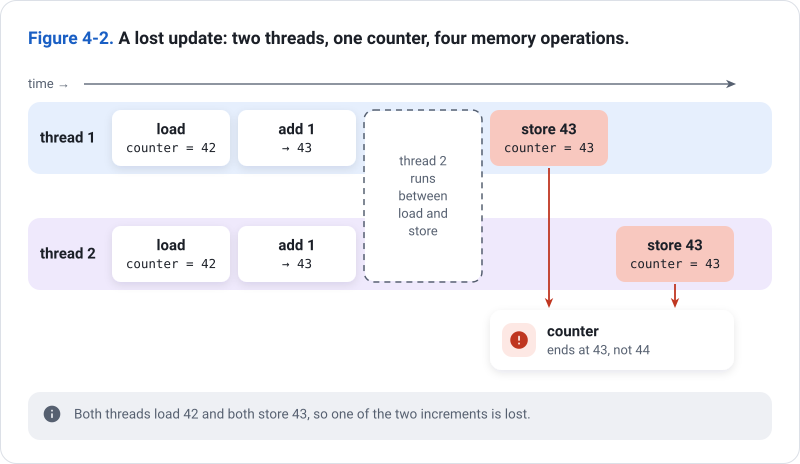
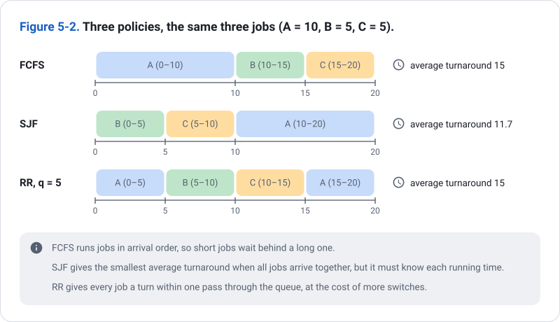
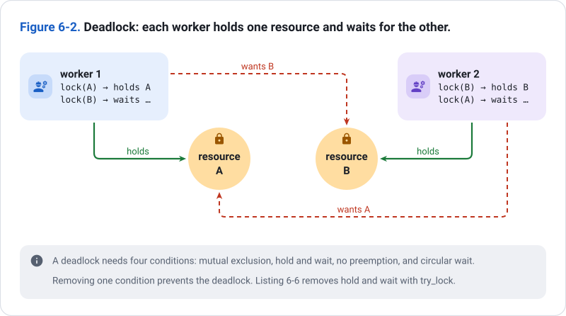
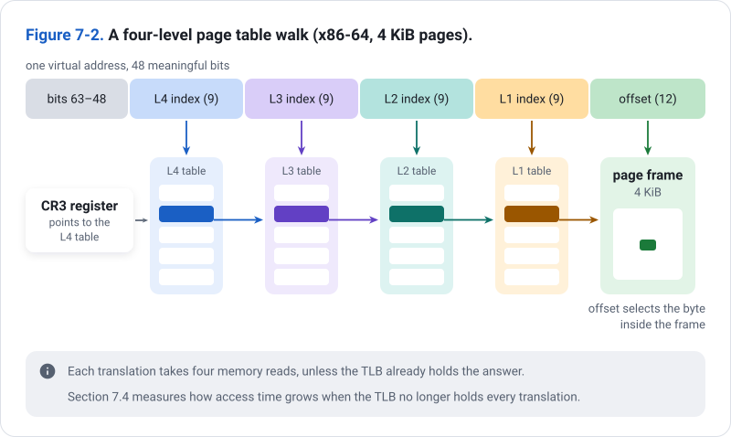
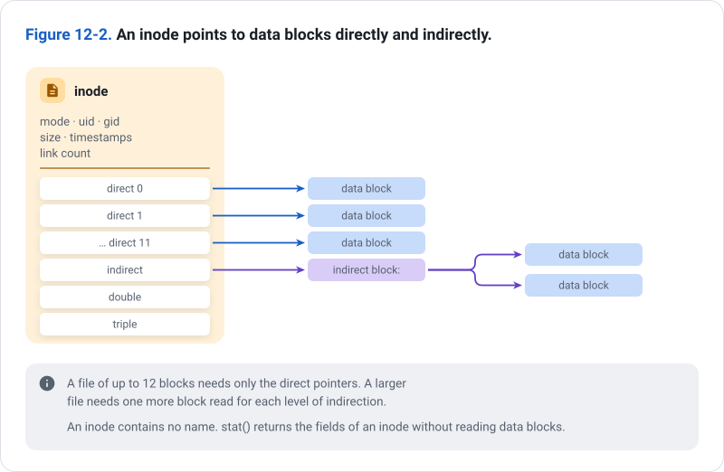
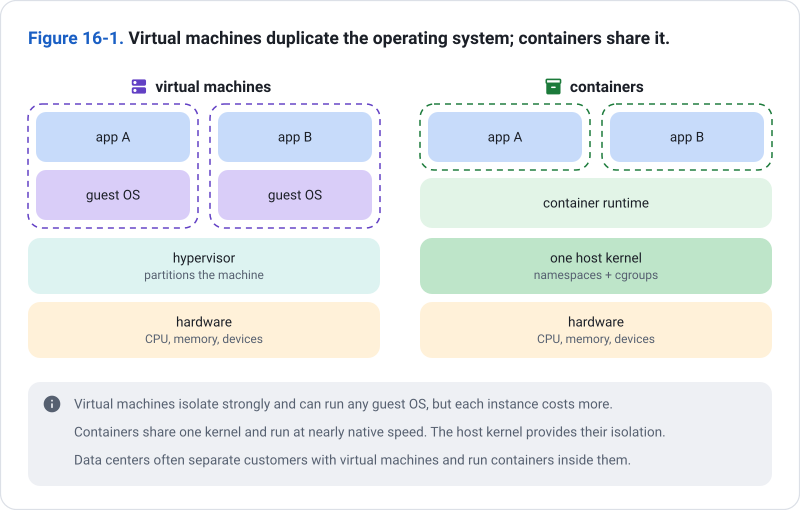
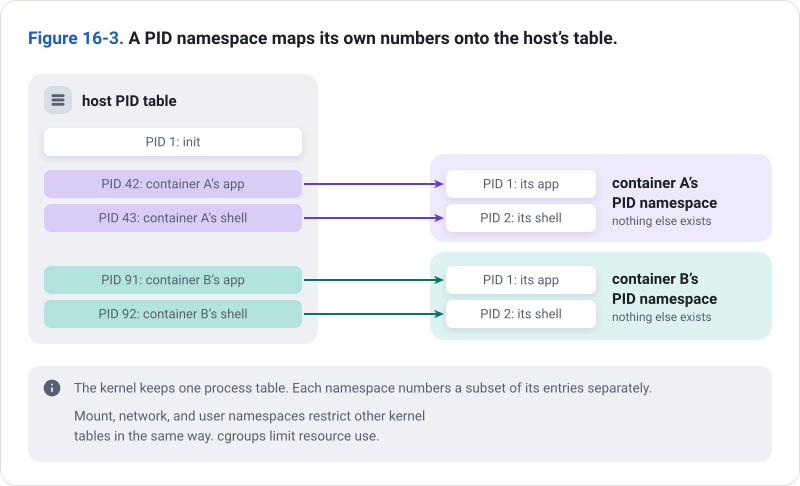
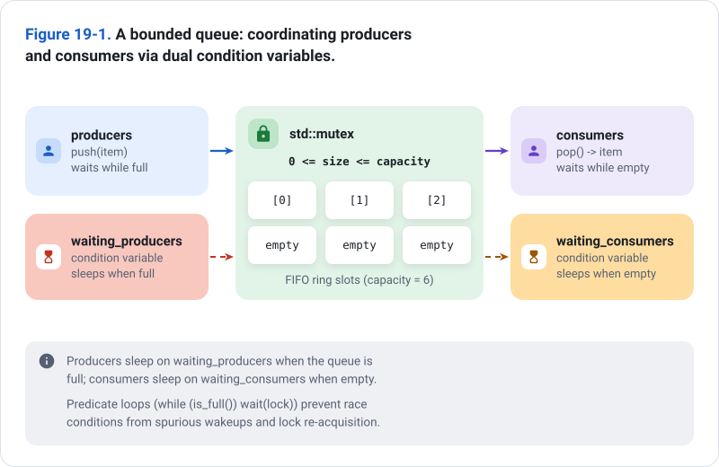

Cover

Preface
“There are two ways of constructing a software design: One way is to make it so simple that there are obviously no deficiencies, and the other way is to make it so complicated that there are no obvious deficiencies. The first method is far more difficult.” — C.A.R. Hoare, The Emperor’s Old Clothes (1980 Turing Award Lecture)
The Philosophy of the Machine
Most software engineers spend their careers insulated inside runtime environments, garbage collectors, language virtual machines, and cloud abstractions. This insulation is a triumph of software engineering, but it breeds a dangerous illusion: the belief that computation, memory, and bandwidth are boundless, uniform, and isotropic.
In reality, computation is strictly governed by the physics of silicon and microarchitecture:
- CPU cores communicate across shared memory buses arbitrated by cache coherence protocols (MESI/MOESI), where uncoordinated concurrent writes across the same 64-byte cache line trigger catastrophic bus traffic through false sharing.
- Memory access latencies form a steep cliff: from sub-nanosecond L1 cache hits (4 cycles) to tens of nanoseconds for DRAM (hundreds of cycles), to hundreds of microseconds for NVMe storage devices.
- System calls are not benign function calls; they are hardware privilege transitions (Ring 3 → Ring 0) that flush CPU pipeline state, switch execution stacks, and trigger TLB and cache evictions.
The operating system is not merely a library of convenient helper functions. It is the supervisory software foundation that enforces hardware privilege boundaries, orchestrates virtual memory address translation, multiplexes finite CPU time among contending execution streams, and guarantees fault isolation. To write high-performance, fault-tolerant infrastructure, one must understand how the operating system and the hardware collaborate from first principles.

The Dual-Language Paradigm: C++20 and Rust 2024
To truly master systems programming, one must transcend language dogma. This book deliberately pairs ISO C++20 and Rust (2024 edition) across every chapter and reference implementation:
- C++20 provides raw mechanical sympathy: explicit pointers, manual memory layout control, direct access to architectural instructions, unconstrained memory ordering, and direct POSIX system interfaces. It represents the historical and contemporary foundation of kernels, runtime engines, database storage managers, and high-frequency trading infrastructure.
- Rust (2024 edition) introduces mathematical rigor to systems engineering: affine type systems, compile-time data race freedom enforced by
SendandSync, deterministic destruction without exception hazards, and explicit demarcation of unsafe operations via strict invariant proofs.
By implementing every mechanism—from lock-free ring buffers and virtual memory allocators to pipeline orchestrators and kqueue supervisors—in both languages side-by-side, you learn to decouple abstract systems principles from language-specific idiosyncrasies. You will understand both the raw microarchitectural consequences of memory operations and the formal type-theoretic invariants required to prove their soundness.
The Anatomy of a Systems Engineering Interview
Systems, infrastructure, kernel, and performance engineering interviews probe the boundary where software meets the operating system and the physical machine:
- Memory Ordering & Hardware Visibility: Do you understand why sequentially consistent atomics (
seq_cst) incur severe penalties on ARM64 architectures compared to acquire-release semantics (memory_order_acquire/memory_order_release)? - Concurrency Invariants & Pitfalls: Can you explain why a condition variable requires a predicate evaluation loop (
whileinstead ofif), why spurious wakeups occur in OS schedulers, and how to avoid the Thundering Herd penalty? - Kernel Boundaries & Resource Lifecycles: Do you know why a pipeline of child processes deadlocks if the parent fails to close its inherited write descriptor? Why must a
SIGCHLDhandler loop overwaitpidwithWNOHANG? - Virtual Memory & Cache Coherence: Can you derive how multi-level page tables conserve physical DRAM, what triggers a TLB shootdown across CPU sockets, and how allocator metadata alignment prevents internal and external fragmentation?
This text is engineered to equip you with the mental models, architectural proofs, and clean reference implementations to answer these questions with absolute confidence and rigor.
Reading Pathways & Curriculum Structure
The chapters are organized progressively from hardware fundamentals upward into distributed runtime patterns, concluding with intensive interview derivations:
Recommended Study Tracks
Depending on your immediate goals, consider following one of these curated pathways:
- The 48-Hour Interview Track: Focus on Chapter 19 (Interview Problems), supplemented by Chapter 6 (Synchronization), Chapter 7 (Virtual Memory), Chapter 8 (Allocators), and Chapter 13 (I/O Multiplexing).
- The Core Systems Track: Read Chapters 1 through 9 sequentially to build an unbreakable mental foundation of processes, threads, virtual memory translation, and syscall mechanics.
- The Concurrency & Performance Track: Study Chapters 4, 6, 17, 18, and Section 19.4 to master atomics, lock-free algorithms, cache lines, false sharing, and profiling with hardware counters.
Pedagogical Conventions
To maximize signal density and retention, each chapter incorporates standardized visual and typographical conventions:
Note
Key Idea: Highlights core architectural principles, hardware invariants, and critical theoretical theorems.
Tip
Experiment: Suggests concrete, hands-on micro-benchmarks or code modifications to verify kernel behavior on your local machine.
Caution
Common Pitfall: Warns against subtle concurrency hazards, memory leaks, undefined behavior, or interviewer trap questions.
The Verification Covenant
Every line of code in this book is non-fictional. Every listing is integrated into an automated verification harness (code/run_all.sh) that compiles under strict compiler configurations:
- C++: Clang with
-std=c++20 -Wall -Wextra -Wpedanticon Apple Silicon and Linux. - Rust:
rustc 2024edition with zero compiler warnings and zero panicking.unwrap()calls in production execution paths.
All code listings are self-contained, deterministic, and accompanied by microarchitectural safety proofs. Approach the text with curiosity, verify every invariant on your machine, and build from first principles.
Table of Contents & Subject Index
Tip
Interactive Navigation: All chapter titles, section headers, and subject terms below are direct clickable hyperlinks. Click any entry to jump immediately to that topic in the text or generated PDF.
Part I: Complete Navigable Directory
Front Matter
Foundations: Architecture, Processes & Threads
- 1. The Ontological Necessity of the Operating System
- 2. The Architectural Substrate and Execution Constraints
- 3. Process Abstraction and Lifecycle
- 4. Threaded Execution and Concurrency Hazards
- 5. Scheduling Theory and Policy
- 6. Synchronization and Memory Ordering
Memory, Kernel Boundary & Durability
- 7. Virtual Memory and the Architecture of Address Translation
- 8. Memory Allocation and Management Strategies
- 9. The Kernel Boundary and the Cost of System Calls
- 10. Asynchronous Notifications and Signal Semantics
- 11. Inter-Process Communication (IPC)
- 12. File System Architecture and Durability
Networking, Daemons & Scalable Systems
- 13. I/O Multiplexing and the Event Loop
- 14. Network Protocols and the Socket Interface
- 15. Daemon Lifecycle and Service Supervision
- 16. Virtualization and Containerization
- 17. Multiprocessor Systems and Hardware Accelerators
- 18. Performance Analysis and Observability
Interview Problems & Reference Implementations
- 19. Systems Interview Problems: Derivations and Reference Implementations
- 19.1 Architectural Framework and Problem-Solving Discipline
- 19.2 The Bounded Blocking Queue
- 19.3 The Free-List Allocator
- 19.4 The Lock-Free Single-Producer Single-Consumer (SPSC) Ring Buffer
- 19.5 Byte Routines:
memmove,strlenandatoi - 19.6 The LRU Cache
- 19.7 The Reader-Writer Lock
- 19.8 The Thread Pool
- 19.9 The Process Pipeline:
fork,execandpipe - 19.10 Bit Manipulation
- 19.11 Linked List Operations
- 19.12 Operating System Fundamentals: Six Technical Derivations
- 19.12.1 Process Isolation vs. Thread Concurrency Topology
- 19.12.2 Context Switch Mechanics and Microarchitectural Overhead
- 19.12.3 System Call Traps and Privilege Boundary Enforcement
- 19.12.4 Synchronization Taxonomy: Mutex, Spinlock, and Semaphore
- 19.12.5 Deadlock Dynamics: Coffman Conditions and Prevention Strategies
- 19.12.6 Virtual Memory Architecture and Page Fault Resolution
Appendices
Part II: Systems Subject & Keyword Index
A thematic, alphabetical cross-reference linking systems topics directly to their foundational derivation and practical implementation.
A
- Abstraction (Hardware Abstraction Layer) — The foundational operating system role mediating between complex physical hardware and uniform software primitives (files, sockets, processes).
- Acquire-Release Semantics — Synchronizes shared memory between threads without the heavy hardware penalty of full sequential consistency fences.
- Address Space Layout — Virtual memory organization across text, data, BSS, heap, memory-mapped regions, and user stack.
- Address Translation (Hand Calculation) — Complete step-by-step mathematical walk of a 48-bit canonical virtual address through PML4, PDPT, PD, and PT levels to physical address assembly.
- Numerical Walkthrough & Invariants: §7.2.2
- Anonymous Mapping (
MAP_ANON | MAP_PRIVATE) — Kernel allocation of zero-initialized demand pages unbacked by physical disk files. - APIC / IO-APIC & ARM GIC (Interrupt Controllers) — Two-tier hardware interrupt routing, Message Signaled Interrupts (MSI-X), and priority arbitration across multiprocessor cores.
- Hardware Routing & EOI: §2.4.1
- Apple Silicon Unified Memory (UMA) — Shared physical memory substrate between CPU, GPU, and Neural Engine without PCIe bus serialization.
- Architectural Analysis: §17.3
- Async-Signal-Safety — Functions safe to execute inside asynchronous signal handlers without corrupting thread stacks or deadlocking libc mutexes.
- Atomicity Gap — The structural discrepancy between high-level language expressions (
counter++) and low-level load-modify-store sequences causing lost updates. - Atomics (Memory Models) — Load and store instructions providing hardware memory synchronization guarantees.
B
- Bare-Metal Execution — The fundamental architectural limitations (no concurrency, no memory protection, no unified device drivers) of executing directly on raw hardware.
- Architectural Invariants: §1.1
- Bit Manipulation (Branchless) — Microarchitectural optimizations utilizing bit smearing and hardware popcount instructions.
- Bounded Blocking Queue — Multi-threaded queue that synchronizes producers and consumers under strict capacity limits.
- Buffered I/O (
BufWriter) — Amortizing the overhead of user-to-kernel context transitions via large user-space memory buffers.- System Call Trap Overhead: §9.2
- Bump Allocator (Arena) — Extreme high-throughput allocation strategy incrementing an offset pointer within contiguous memory.
- Design & Mathematical Alignment: §8.2
C
- Cache Coherence Protocols (MESI / MOESI) — Hardware protocols ensuring cache-line consistency across multi-core systems.
- Cache Lines (64-byte Granularity) — The atomic transfer unit between L1/L2/L3 caches and main memory.
- Coffman Deadlock Conditions — The four axiomatic conditions required for a system to enter permanent deadlock.
- Condition Variables — Execution barriers enabling threads to sleep until notified of a state change under a controlling mutex.
- Context Switch Overhead — The microarchitectural penalty of saving CPU registers, swapping page tables, and invalidating pipeline state.
- Copy-on-Write (COW) — Memory optimization where physical frames are shared as read-only until mutated by child or parent.
D
- Daemons & Detachment Ritual — Creating autonomous background processes detached from terminals and session leaders.
- Data Races — Undefined behavior occurring when concurrent threads access identical memory without synchronization and at least one is a write.
- Demand Paging — Memory virtualization where physical frames are allocated lazily upon page fault rather than reservation.
- Dentry & Inode Topology — The directory cache and file metadata structures governing VFS storage durability.
- Inode Architecture: §12.2
E - F
- Edge-Triggered vs. Level-Triggered Multiplexing — Notification mechanics for ready file descriptors under high concurrency.
- Event Loops (
kqueue/epoll/poll) — Scalable single-threaded I/O engines multiplexing thousands of descriptors. - False Sharing — Severe performance degradation caused by distinct CPU cores mutating independent variables residing on the same cache line.
- File Descriptors — Per-process integer indices referencing open file descriptions and inodes in the kernel.
- Frame Pointer (FP / RBP / x29) — Invariant structural anchor for function activation records, enabling debugger backtraces and call frame unwinding.
- Architectural Function: §2.1
- Free-List Allocator — Explicit heap allocator with header metadata, block splitting, and contiguous coalescing.
G - L
- Guard Pages (
PROT_NONE) — Virtual memory pages configured with zero permissions to detect stack overflows or buffer out-of-bounds accesses.- Protection Mechanics: §7.3
- Huge Pages — 2 MiB / 1 GiB virtual page translations designed to maximize TLB coverage and eliminate translation latency.
- Hardware TLB Reach: §7.2.3
- Interrupt Descriptor Table (IDT) & Top/Bottom-Half Handlers — Hardware vector dispatch table,
TSS.rsp0trapframe saving,hardirqmasking, andsoftirqdeferred execution. - Inter-Process Communication (IPC) — Exchanging state across hardware isolation boundaries via pipes, sockets, and shared memory.
- Isolation (Process Protection) — Hardware-enforced boundary preventing cross-process interference and securing kernel memory.
- Lock-Free Programming — Concurrency without mutex barriers, relying on atomic instructions and hardware memory ordering guarantees.
- SPSC Queue Derivation: §19.4
- LRU Cache — High-performance eviction cache pairing an O(1) hash table with a doubly-linked list.
- Zero-Allocation Splice Implementation: §19.6
M - P
- Mechanism versus Policy Separation — Foundational architectural principle decoupling invariant low-level hardware mechanisms from tunable high-level allocation algorithms.
- Memory Fences & Ordering — CPU instructions constraining the reordering of loads and stores across memory buses.
- Theoretical Derivation: §6.4
- Multi-Level Page Tables — Tree-structured hierarchical address translation enabling sparse virtual address spaces without wasting physical RAM.
- Non-Blocking I/O (
O_NONBLOCK) — System call semantics allowing asynchronous execution without thread suspension. - NUMA Topologies — Non-Uniform Memory Access architectures where latency depends on memory socket locality.
- Optimization Strategies: §17.1
- Page Map Level 4 (PML4) — The root table of the 4-level x86-64 page hierarchy loaded into the CR3 control register.
- Translation Walk: §7.2
- Pipeline Deadlocks — Common concurrency pitfall where unclosed write descriptors prevent readers from observing EOF.
- Descriptor Management & Proof: §19.9.4
- POSIX Standard Interface — Standardized system call boundary unifying process management, file I/O, virtual memory, and IPC across UNIX-like systems.
- Core API Taxonomy: §1.4
- Priority Inversion — Scheduling hazard where a high-priority thread blocks on a resource held by a low-priority thread.
- Priority Inheritance Solutions: §5.3
- Process Control Block (PCB) — Kernel data structure maintaining architectural register state, page tables, and file descriptors.
- Program Counter (PC / RIP / PC_EL0) — Microarchitectural register holding the linear virtual address of the next instruction to fetch.
R - S
- Reader-Writer Lock — Synchronization primitive permitting concurrent readers while restricting writers to exclusive access.
- Writer-Preference Implementation: §19.7
- Resource Management (Arbitration) — Operating system orchestration and time/space multiplexing of CPU cores, memory frames, and I/O bandwidth.
- Ontological Necessity: §1.2
- Shared Memory (
mmap/ POSIXshm) — Highest-throughput IPC mechanism bypassing the kernel during data exchange.- Zero-Copy Implementation: §11.2
- Signal Coalescing & Reaping — POSIX signal delivery property requiring non-blocking loops to prevent zombie leaks.
SIGCHLDandwaitpid: §10.3
- Sparse Files — File system structures where unwritten data blocks are unallocated, saving physical storage.
- Block Allocation Mechanics: §12.3
- Spurious Wakeups — Condition variable unblocking without explicit notification caused by kernel scheduler dynamics.
- Systems Nuances: §19.2.4
- Stack Pointer (SP / RSP / SP_EL0) — Architectural register tracking the active boundary of the descending call stack.
- Status Flags (FLAGS / RFLAGS / PSTATE) — CPU condition codes (ZF, CF, SF, OF) and interrupt mask control flags (IF).
- Condition Evaluation: §2.1
- System Call Boundary — Hardware-supervised privilege gatekeeper transferring control from user mode to kernel mode.
T - Z
- TCP Protocols & Sockets — Reliable, connection-oriented byte streams with flow control and congestion avoidance.
- Socket Interface Mechanics: §14.1
- Thread Pool — Concurrency architecture amortizing thread creation costs across a fixed pool of persistent worker threads.
- Implementation & RAII Shutdown: §19.8
- Thundering Herd Mitigation — Preventing catastrophic CPU contention by waking single threads (
notify_one) rather than all sleeping threads.- Bounded Queue Optimization: §19.2.4
- TLB (Translation Lookaside Buffer) — High-speed CPU hardware cache storing recent virtual-to-physical address translations.
- Architecture & Invalidation: §7.2
- Virtual Memory Architecture — Core isolation mechanism presenting processes with private, contiguous address spaces.
- Zombie Processes — Terminated processes awaiting parent retrieval of exit status, retaining a PID table slot.
1. The Ontological Necessity of the Operating System
1.1 Architectural Limitations of Bare-Metal Execution
The requirement for an operating system is fundamentally predicated on the inherent architectural limitations of bare-metal execution. In a primitive hardware environment, a single processor core is constrained by a solitary program counter, which effectively precludes multi-program concurrency by capturing the instruction stream. Furthermore, the absence of a supervisory layer leaves the system without mechanisms for memory protection or instruction restriction, rendering any program capable of unmitigated interference with the hardware or other co-resident software. Finally, the lack of unified device drivers necessitates that every application manage its own hardware-specific communication, a process that is both inefficient and prone to catastrophic resource contention.
1.2 Axiomatic Roles: Abstraction, Isolation, and Resource Management
To resolve these deficiencies, the operating system implements three critical roles: abstraction, isolation, and resource management. Through abstraction, the OS mediates between complex hardware interfaces and simplified software objects, such as processes, files, and sockets, thereby decoupling program logic from physical device geometry. This abstraction, however, necessitates isolation; once multiple processes coexist within a managed environment, the OS must enforce strict boundaries to prevent cross-process interference. This enforcement is delegated to the hardware through privilege levels and page tables, ensuring that memory and resource access remain confined to authorized domains. The resulting contention for finite hardware necessitates resource management, where the OS acts as a central arbiter, orchestrating the distribution of CPU time, memory capacity, and I/O bandwidth according to evolving workload policies.

1.3 Mechanism versus Policy Separation
The implementation of these roles relies on the distinction between mechanism and policy. Mechanisms, the low-level primitives provided by the hardware, such as context switching or page table walks, remain constant across architectural iterations, while policies, the logic governing which process to schedule or which page to evict, are tuned to specific system requirements.
1.4 The System Call Boundary and POSIX Standard Interface
The boundary between the kernel (which executes in a privileged mode with unrestricted instruction access) and user-mode applications is mediated through the system call interface. A system call provides a hardware-supervised, deterministic transfer of control, allowing a program to request kernel services without compromising the integrity of the kernel’s own address space. This transition, while computationally expensive compared to standard function calls, serves as the essential gatekeeper for system security and stability.
Table 1-1. POSIX calls in this book.
| Call | What it does | Chapter |
|---|---|---|
open / read / write / close | access files through descriptors | 12, 13 |
fork / waitpid / execve | create, reap, and replace processes | 3 |
mmap / mprotect / munmap | map memory and change its protection | 7, 11 |
pipe / socketpair | create communication channels | 11 |
poll / kqueue / epoll | wait for readiness on many descriptors | 13 |
sigaction / sigprocmask | install and mask signal handlers | 10 |
bind / listen / accept / connect | establish network connections | 14 |
setsid / umask / chdir | detach a daemon from its terminal | 15 |
2. The Architectural Substrate and Execution Constraints
The design and operational behavior of an operating system are fundamentally dictated by the invariant properties of the underlying hardware. Without a supervisory kernel arbitrating execution, a bare-metal processor provides no memory isolation, no concurrent time-multiplexing, and no protection against errant or malicious instruction streams. The microarchitectural substrate defines the physical boundaries of computation, the necessity of virtual memory management, and the hardware mechanisms required to enforce system integrity.
2.1 The Execution Model and the Atomicity Gap
A processor core operates via a continuous fetch-decode-execute datapath cycle. At any discrete clock edge, the architectural state of an executing thread is encapsulated by its hardware register file. Across contemporary instruction set architectures—specifically x86-64 and ARM64 (AArch64)—this register complement is partitioned into control pointers, status flags, and general-purpose storage:
- Program Counter (
PC/RIPon x86-64 /PC_EL0on ARM64): Holds the 64-bit linear virtual address of the next instruction to be fetched from the L1 instruction cache (I-cache). During sequential execution, the control unit automatically increments the program counter by the byte length of the decoded instruction; control-flow transfers (branches, procedure calls, traps, and hardware interrupts) overwrite this register with a target address. - Stack Pointer (
SP/RSPon x86-64 /SP_EL0on ARM64): Points to the active downward-growing boundary of the thread’s call stack in virtual memory. Stack allocations decrement the stack pointer, whereas frame deallocations increment it. Both the System V AMD64 ABI and the ARM64 Procedure Call Standard (AAPCS64) mandate that the stack pointer maintain 16-byte alignment at function call boundaries to satisfy vector SIMD load/store alignment constraints. - Frame Pointer (
FP/RBPon x86-64 /x29on ARM64): Serves as an invariant base anchor within the current function activation record. While the stack pointer fluctuates dynamically during expression evaluation and outgoing parameter construction, the frame pointer remains fixed throughout the function’s lifetime. Compilers store the caller’s saved frame pointer at the base of the new frame ([RBP]or[x29]) and the return address immediately above it ([RBP + 8]or[x29 + 8]), establishing a contiguous, singly linked chain of activation records. Walking this frame-pointer chain enables debuggers, crash handlers, and kernel sampling profilers (perf, DTrace) to reconstruct full call stacks inO(depth)time without DWARF unwind tables. - Processor Status and Control Flags (
FLAGS/RFLAGSon x86-64 /PSTATEon ARM64): Encapsulates arithmetic condition codes—Zero (ZF), Carry (CF), Sign/Negative (SF/N), and Overflow (OF/V)—alongside privileged execution controls. Most critically for operating system design, this register contains the hardware interrupt mask: the Interrupt Enable Flag (IF, bit 9 ofRFLAGS) on x86-64 and theDAIF(Debug, SError, IRQ, FIQ) mask bits on ARM64. - General-Purpose Registers (GPRs): Provide sub-nanosecond, zero-cycle-Wait operand storage for arithmetic, bitwise logic, and memory addressing. On x86-64, the 16 GPRs (
RAX,RBX,RCX,RDX,RSI,RDI,RBP,RSP, andR8–R15) are partitioned by ABI convention into caller-saved volatile registers (RAX,RCX,RDX,RSI,RDI,R8–R11, whereRDI,RSI,RDX,RCX,R8,R9pass the first six integer arguments) and callee-saved non-volatile registers (RBX,RBP,R12–R15). On ARM64, the 31 64-bit registers (x0–x30) assignx0–x7to argument passing and return values,x9–x15to caller-saved temporaries,x19–x28to callee-saved state,x29to the Frame Pointer, andx30to the Link Register (LR), which captures the return address on a Branch-with-Link (BL) instruction.

2.1.1 The Fetch-Decode-Execute Datapath and Function Activation Records
During each instruction cycle, the control unit coordinates four microarchitectural stages across the processor datapath:
- Instruction Fetch (IF): The control unit presents the virtual address in
PC(RIP/PC_EL0) to the Memory Management Unit (MMU) and L1 instruction cache, retrieving the instruction byte stream and advancingPC. - Instruction Decode & Register Rename (ID): The decoder parses the opcode and operand specifiers, mapping architectural registers (
RAX,x0) onto physical registers via the Register Alias Table (RAT) to eliminate false Write-After-Read (WAR) and Write-After-Write (WAW) hazards. - Execute & Memory Access (EX/MEM): The Arithmetic Logic Unit (ALU) computes arithmetic or effective virtual addresses. Memory loads and stores query the Translation Lookaside Buffer (TLB) and L1 data cache (D-cache), buffering uncommitted writes inside the core’s hardware Store Buffer.
- Commit / Write-Back (WB): The Reorder Buffer (ROB) retires instructions in strict program order, committing register updates and draining store-buffer entries to the coherent cache hierarchy.
When a procedure is invoked (CALL on x86-64, BL on ARM64), the processor constructs a function activation record (stack frame) in virtual memory. The caller places up to six (x86-64) or eight (ARM64) arguments in registers and pushes any excess arguments onto the stack. The call instruction records the return address (RIP + instr_len pushed to [RSP - 8] on x86-64; PC + 4 stored in x30 on ARM64). The callee prologue then pushes the caller’s Frame Pointer (push rbp; mov rbp, rsp on x86-64, or stp x29, x30, [sp, #-N]!; mov x29, sp on ARM64), saves any modified callee-saved registers, and decrements SP to reserve space for local variables. On x86-64, the System V ABI additionally defines a 128-byte Red Zone immediately below RSP ([RSP - 128, RSP)), which leaf functions may utilize for temporary storage without adjusting RSP, provided asynchronous interrupts and signals use a separate stack.
2.1.2 Formal Derivation of the Atomicity Gap
While the reorder buffer guarantees that a single core observes its own instructions retiring in sequential program order, the hardware datapath does not preserve atomicity across composite high-level language expressions. This discrepancy between source-level syntax and machine-level execution defines the atomicity gap.
Consider a shared 64-bit integer counter incremented concurrently by two processor cores (counter++). Because RISC and CISC arithmetic units operate on registers rather than directly across coherent DRAM, the compiler decomposes the increment into a three-instruction Read-Modify-Write (RMW) sequence:
// x86-64 Read-Modify-Write // ARM64 Read-Modify-Write
1. mov rax, QWORD PTR [rip + counter] 1. ldr x0, [x1] // Load shared state into core register
2. add rax, 1 2. add x0, x0, #1 // Increment private register copy in ALU
3. mov QWORD PTR [rip + counter], rax 3. str x0, [x1] // Store updated value back to L1 D-cache
If Core 0 and Core 1 execute this sequence concurrently when counter == 42, their instruction streams interleave across the memory bus:
- Core 0 executes Step 1 (
mov/ldr), loading42from its L1 D-cache into its private architectural register (RAX_0 = 42). - Simultaneously, Core 1 executes Step 1, reading the identical shared cache line into its own register (
RAX_1 = 42). - Core 0 and Core 1 both execute Step 2 in their local ALUs, computing
43inRAX_0andRAX_1. - Core 0 executes Step 3, invalidating Core 1’s shared cache line via the hardware cache coherency protocol and writing
43. - Core 1 executes Step 3 immediately thereafter, overwriting the memory location with its own value of
43.
Although two distinct increments occurred, the final state in memory is 43 rather than 44—a concurrency failure known as a lost update. Bridging this atomicity gap requires hardware-enforced atomic instructions (such as lock xadd on x86-64, which locks the cache line throughout the RMW cycle, or Load-Linked/Store-Conditional ldxr/stxr and Large System Extensions ldaddal on ARM64) coupled with kernel synchronization primitives.
2.2 Memory Hierarchy and Locality Dynamics
The memory subsystem is architected as a tiered hierarchy that balances physical storage capacity against access latency. This hierarchy progresses from core-private registers (~0.3 ns, 1 cycle) through L1 instruction and data caches (32–64 KiB, ~1 ns, 3–4 cycles), unified L2 caches (256 KiB–1 MiB, ~3–4 ns, 10–12 cycles), and shared L3 / System-Level Caches (4–64 MiB, ~10–15 ns, 35–50 cycles) to main DRAM (gigabytes, ~60–100 ns, 200+ cycles).
The throughput of this hierarchy relies on two empirical properties of program execution:
- Temporal Locality: The tendency of an execution stream to access the same memory addresses repeatedly within a brief time window (e.g., loop counters, stack frame variables, hot lock words).
- Spatial Locality: The tendency of an execution stream to access memory addresses within contiguous physical proximity of recently accessed locations (e.g., sequential array traversal, linear instruction fetching).
Because hardware cache controllers transfer memory between DRAM and caches in fixed 64-byte cache lines (or 128-byte lines on certain high-performance ARM64 SoCs), sequential memory traversal amortizes a single DRAM fetch across multiple subsequent loads, triggering the hardware spatial prefetcher. Conversely, pointer-chasing workloads over non-contiguous heap nodes defeat the prefetcher and stall the out-of-order execution engine on L3 cache misses. Furthermore, managing coherence at 64-byte cache-line granularity introduces false sharing: when two threads on distinct cores modify logically independent variables that reside within the same 64-byte cache line, the cache coherency protocol (MESI/MOESI) repeatedly invalidates and transfers the line across the inter-core interconnect, serializing parallel execution.
2.3 Privilege Domains and Boundary Enforcement
To prevent user applications from corrupting kernel data structures, disabling hardware interrupts, or monopolizing I/O controllers, the processor enforces a hardware privilege bifurcation between User Mode (Ring 3 / Current Privilege Level CPL = 3 on x86-64; Exception Level EL0 on ARM64) and Kernel Mode (Ring 0 / CPL = 0 on x86-64; EL1 on ARM64). Above the operating system kernel, modern processors provide hypervisor privilege domains (VMX Root on x86-64; EL2 on ARM64) and secure firmware monitors (SMM / EL3).
When a core executes in User Mode (CPL = 3 / EL0), the hardware control unit and MMU strictly enforce three boundary invariants:
- Privileged Instruction Restriction: Any attempt to execute instructions that mutate control registers (
mov cr3), alter interrupt masks (cli,sti,msr daifset), halt the core (hlt), or manipulate Model-Specific Registers (wrmsr) is blocked in silicon, immediately raising a synchronous General Protection Fault (#GPon x86-64) or Synchronous Exception (EC_UNCATEGORIZEDon ARM64). - Page-Table Permission Enforcement: Every Page Table Entry (PTE) contains a User/Supervisor flag (
U/S, bit 2 on x86-64;AP[1]on ARM64). While executing in User Mode, any load, store, or instruction fetch targeting a virtual page marked Supervisor-only triggers an immediate hardware Page Fault (#PF/ Data Abort), trapping control into the kernel. - I/O Port and MMIO Isolation: Direct access to device I/O ports (
in,out) and physical Memory-Mapped I/O (MMIO) control apertures is restricted exclusively to Ring 0 /EL1.
To minimize the latency of kernel entry during system calls and interrupts, operating systems typically map the kernel’s virtual address range into the upper canonical half of every process’s page table (protected by Supervisor-only PTE bits). When a trap elevates the processor from Ring 3 to Ring 0, the kernel code and data are immediately addressable without reloading the page table root register (unless Kernel Page-Table Isolation, KPTI, is enabled to mitigate speculative execution side channels such as Meltdown). Consequently, the kernel must treat every pointer supplied by user space as untrusted, validating that the entire buffer range [ptr, ptr + len) resides strictly within the user canonical address boundary (< TASK_SIZE) before dereferencing it, and utilizing specialized access routines (copy_from_user, copy_to_user) with hardware Supervisor Mode Access Prevention (SMAP on x86-64; Privileged Access Never PAN on ARM64).

2.4 Synchronous Traps and the Asynchronous Interrupt Subsystem
Control transfers across the privilege boundary from user mode (Ring 3 / EL0) to kernel mode (Ring 0 / EL1) are classified into two architectural categories based on their causal relationship to the executing instruction stream:
- Synchronous Traps and Exceptions: Triggered deterministically as a direct result of executing a specific instruction on the local core. The processor cannot retire the instruction until the kernel intervenes. Synchronous events subdivide into deliberate system call traps (
syscallon x86-64,svc #0on ARM64), recoverable faults (such as a minor Page Fault#PF, where the kernel allocates a frame and re-executes the faulting instruction), and unrecoverable aborts (such as hardware machine-check exceptions#MCor division by zero#DE). - Asynchronous Hardware Interrupts (IRQs): Triggered by external physical devices—such as a network interface card (NIC) completing a DMA packet transfer, an NVMe controller signaling I/O completion, or a hardware timer tick expiring. Asynchronous interrupts arrive at arbitrary clock cycles, completely independent of the instruction stream currently executing on the processor core.
2.4.1 Interrupt Controllers: APIC, IO-APIC, MSI-X, and ARM GIC
In a multiprocessor system with dozens of CPU cores and hundreds of peripheral interrupt sources, devices do not wire directly to a single CPU pin. Instead, interrupt routing and prioritization are arbitrated by a two-tier hardware interrupt subsystem:
- x86-64 Advanced Programmable Interrupt Controller (IO-APIC and Local APIC):
- IO-APIC: Resides on the system chipset and receives physical Interrupt Request Lines (IRQs) from legacy peripherals. The kernel programs the IO-APIC’s Redirection Table Entries (RTEs) to map each physical IRQ pin to an 8-bit Interrupt Vector Number (
32–255, as vectors0–31are reserved by Intel/AMD for processor exceptions) and a target CPU core destination mask. - Message Signaled Interrupts (MSI / MSI-X): High-speed PCIe devices (NVMe drives, 100GbE NICs, GPUs) bypass physical IRQ pins and the IO-APIC entirely. With MSI-X, the device signals an interrupt by performing a standard PCIe DMA memory write of a vector payload directly to a dedicated physical MMIO address mapped to a target core’s Local APIC. This eliminates shared IRQ line contention and allows a multi-queue NIC to bind distinct receive queues to dedicated CPU cores.
- Local APIC (LAPIC): Integrated directly onto every CPU core. The LAPIC receives interrupt messages from the IO-APIC, MSI-X PCIe writes, Inter-Processor Interrupts (IPIs) from sibling cores (used for cross-core TLB shootdowns and scheduler wakeups), and its own on-die APIC Timer. It Arbitrates priority between pending vectors in its Interrupt Request Register (IRR) and In-Service Register (ISR) before asserting an interrupt to the core’s control unit.
- IO-APIC: Resides on the system chipset and receives physical Interrupt Request Lines (IRQs) from legacy peripherals. The kernel programs the IO-APIC’s Redirection Table Entries (RTEs) to map each physical IRQ pin to an 8-bit Interrupt Vector Number (
- ARM64 Generic Interrupt Controller (GICv3 / GICv4):
- Distributor (
GICD): Centralizes interrupt prioritization and routing across the SoC for Shared Peripheral Interrupts (SPIs, IDs 32–1019). - Redistributor (
GICR): Managed per core, controlling Software Generated Interrupts (SGIs, IDs 0–15) used for inter-processor signaling, Private Peripheral Interrupts (PPIs, IDs 16–31) such as the per-core ARM Generic Timer, and Locality-Specific Peripheral Interrupts (LPIs, IDs 8192+) routed via GIC Interrupt Translation Services (ITS) from PCIe MSI-X writes. - CPU Interface (
ICC_*system registers): Delivers the highest-priority pending interrupt ID directly to the ARM64 core.
- Distributor (
2.4.2 Vector Tables (IVT, IDT, VBAR_EL1) and the Hardware Context-Save Sequence
When the Local APIC or GIC presents an unmasked interrupt vector v to a processor core, the hardware control unit suspends the instruction fetch pipeline at the next instruction boundary and executes an atomic, hardware-sequenced privilege and stack transition before executing a single line of kernel software:
- Vector Table Lookup:
- On x86-64 (Protected/Long Mode, which supersedes the legacy 16-bit Real Mode Interrupt Vector Table, IVT), the CPU reads the Interrupt Descriptor Table Register (
IDTR), which holds the physical/linear base address and limit of the Interrupt Descriptor Table (IDT). The IDT is an array of 256 16-byte Gate Descriptors. The processor indexesIDT[v]to extract the target 64-bit Interrupt Service Routine (ISR) entry address, the target Code Segment selector (CS, specifyingCPL = 0), the gate type (Interrupt Gate, which automatically clearsRFLAGS.IFto mask further interrupts, vs. Trap Gate, which leavesIFunchanged), and an optional 3-bit Interrupt Stack Table (IST) index. - On ARM64, the processor reads the Vector Base Address Register (
VBAR_EL1), which points to a 2 KiB-aligned table partitioned into 16 128-byte exception entry stubs grouped by exception type (Synchronous, IRQ, FIQ, SError) and source execution state (EL0vs.EL1).
- On x86-64 (Protected/Long Mode, which supersedes the legacy 16-bit Real Mode Interrupt Vector Table, IVT), the CPU reads the Interrupt Descriptor Table Register (
- Privilege Elevation and Per-CPU Kernel Stack Switch:
- The kernel can never trust the user-mode stack pointer (
RSP/SP_EL0), which may be unaligned, exhausted, or pointing to unmapped memory. If the interrupted instruction was executing in Ring 3 (CPL = 3), the x86-64 processor queries the current core’s Task State Segment (TSS) and loads the privileged Ring 0 stack pointer fromTSS.rsp0(or fromTSS.ist[n]for critical faults like Double Fault#DFor Non-Maskable Interrupt#NMI). On ARM64, elevating fromEL0toEL1automatically switches the active stack pointer register fromSP_EL0toSP_EL1and masks IRQs by settingPSTATE.I = 1.
- The kernel can never trust the user-mode stack pointer (
- Hardware Context Save (Trapframe Construction):
- On x86-64, the CPU hardware pushes a 5-word (40-byte) interrupt frame directly onto the newly activated kernel stack (
TSS.rsp0):- Interrupted Stack Segment (
SS) - Interrupted User Stack Pointer (
RSP) - Interrupted Processor Flags (
RFLAGS) - Interrupted Code Segment (
CS, encoding the previous privilege ringCPL = 3) - Interrupted Instruction Pointer (
RIP) - (For specific exceptions such as
#PFor#GP, the hardware pushes a 6th 64-bit word: the architectural Error Code).
- Interrupted Stack Segment (
- On ARM64, rather than pushing to memory in hardware, the core saves the interrupted program counter into the Exception Link Register (
ELR_EL1), the interrupted processor state into the Saved Program Status Register (SPSR_EL1), and the fault syndrome into the Exception Syndrome Register (ESR_EL1).
- On x86-64, the CPU hardware pushes a 5-word (40-byte) interrupt frame directly onto the newly activated kernel stack (
- Software Trapframe Completion:
- The CPU loads
RIP/PCwith the ISR entry point. The kernel’s assembly entry stub immediately pushes all remaining general-purpose registers (RAX–R15orx0–x30) onto the kernel stack, completing the trapframe (struct pt_regs) so the interrupted thread’s exact register state can be restored later.
- The CPU loads

2.4.3 Top-Half (hardirq) vs. Bottom-Half (softirq) Split and EOI Lifecycle
An Interrupt Service Routine (ISR) executes under severe architectural constraints: it runs in interrupt context rather than process context. Because an interrupt preempts whichever arbitrary process happened to be running on that core, the ISR has no Process Control Block (current points to the interrupted victim task) and cannot sleep, block on a mutex, or perform voluntary context switches. Furthermore, while executing with local interrupts masked (RFLAGS.IF == 0 / PSTATE.I == 1), the core is deaf to subsequent hardware interrupts; prolonged execution in an ISR causes packet drops, timer drift, and I/O latency spikes.
To resolve the tension between deterministic low latency and complex protocol processing, modern operating system kernels bifurcate interrupt handling into two distinct phases:
- Top-Half (
hardirqContext):- Executes immediately upon hardware vector dispatch with local interrupts disabled on the core.
- Performs only the minimum time-critical hardware interaction: reads the device’s MMIO interrupt status register to verify the interrupt source, clears the device-level interrupt line, unmaps or rotates DMA descriptor ring pointers, schedules deferred work, and writes an End of Interrupt (EOI) command to the Local APIC EOI register (or GIC
ICC_EOIR1_EL1). Writing EOI informs the interrupt controller that the active priority level has completed, allowing delivery of queued interrupts.
- Bottom-Half (
softirq, Tasklets, NAPI, and Threaded IRQs):- Executes after the top-half completes, with hardware interrupts re-enabled on the core (
RFLAGS.IF == 1). - Handles computationally intensive work: traversing the TCP/IP network protocol stack, reassembling fragmented packets, running NAPI (New API) network ring polling loops, validating filesystem checksums, and awakening blocked threads in wait queues.
- In Linux, static high-throughput subsystems (networking
NET_RX_SOFTIRQ, block storageBLOCK_SOFTIRQ, timersTIMER_SOFTIRQ) execute assoftirqvectors immediately upon exiting the outermost nestedhardirq(or inside per-CPUksoftirqd/Nkernel threads under heavy interrupt storms), whereas work items requiring sleeping or mutex acquisition are delegated to workqueues (kworkerkernel threads) or threaded IRQ handlers (request_threaded_irq).
- Executes after the top-half completes, with hardware interrupts re-enabled on the core (
Upon completing bottom-half processing, the kernel checks whether the interrupt awakened a higher-priority runnable thread (TIF_NEED_RESCHED). If preemption is required, the kernel invokes the scheduler to switch stacks to the newly selected thread; otherwise, it pops the saved general-purpose registers from the kernel stack and executes the privileged return instruction (iretq on x86-64; eret on ARM64), atomically restoring RIP/ELR_EL1, RSP/SP_EL0, and RFLAGS/SPSR_EL1 while demoting the core back to User Mode (Ring 3 / EL0).
3. Process Abstraction and Lifecycle
A program is a static sequence of instructions; it becomes a process only when the operating system instantiates it into an active execution environment. A process is defined by its execution state, its resource ownership, and its isolated address space.
3.1 The Process Control Block and Address Space Topology
To manage multiple concurrent executions, the kernel maintains a Process Control Block (PCB) for every active process. The PCB serves as the primary vehicle for context switching, storing the process’s unique identifier (PID), its lineage, its current execution state (running, ready, or blocked), and the precise architectural state, including registers and the program counter, required to resume execution. Beyond execution state, the PCB tracks the process’s environmental resources, including its page tables for memory isolation, its file descriptor table, and its signal configuration.
The process’s memory is organized into a structured address space, which provides a consistent view of memory regardless of the underlying physical allocation. This topology typically includes:
- Text Segment: The read-only machine code of the program, which can be shared across multiple processes to conserve physical memory.
- Data and BSS Segments: Regions for initialized and uninitialized global variables, respectively.
- Heap: A dynamically expanding region for runtime memory allocation, growing toward higher addresses.
- Stack: A region that manages function activation records, growing toward lower addresses.
- Kernel Space: A protected region at the apex of the address space, mapped into every process but inaccessible in user mode, facilitating efficient system calls.

Listing 3-1. Printing one address from each region (C++20).
// ch03/layout.cpp: the regions of a process address space, observed from inside.
#include <cstdint>
#include <iomanip>
#include <iostream>
#include <unistd.h>
// Initialized global: data segment.
int g_initialized = 42;
// Uninitialized global: BSS segment.
int g_uninitialized;
// Function machine code: text segment.
__attribute__((noinline)) void anchor() { asm volatile(""); }
int main() {
int stack_local = 7; // stack
int* heap = new int(99); // heap
std::cout << "pid " << getpid() << "\n"
<< std::hex << std::uppercase
<< "text (function) : " << reinterpret_cast<uintptr_t>(&anchor) << "\n"
<< "data (initialized) : " << reinterpret_cast<uintptr_t>(&g_initialized) << "\n"
<< "bss (uninitialized) : " << reinterpret_cast<uintptr_t>(&g_uninitialized) << "\n"
<< "heap (new int) : " << reinterpret_cast<uintptr_t>(heap) << "\n"
<< "stack (local) : " << reinterpret_cast<uintptr_t>(&stack_local) << "\n";
delete heap;
}
Output 3-1. One run on the verification machine.
pid 50046
text (function) : 103E785E0
data (initialized) : 103E7A000
bss (uninitialized) : 103E7A004
heap (new int) : 6000037E0040
stack (local) : 7FF7BC0858AC
Listing 3-2. The same program in Rust (2024 edition).
// ch03/layout.rs: the same address-space regions, observed from Rust.
use std::ptr::addr_of;
fn anchor() {}
static G_INITIALIZED: std::sync::atomic::AtomicI32 = std::sync::atomic::AtomicI32::new(42);
static mut G_UNINITIALIZED: i32 = 0;
fn main() {
let stack_local = 7i32; // stack
let heap = Box::new(99i32); // heap
println!(
"text (fn anchor) : {:#x}\n\
data (static atomic) : {:#x}\n\
bss (static mut) : {:#x}\n\
heap (Box<i32>) : {:#x}\n\
stack (local) : {:#x}",
anchor as *const () as usize,
&G_INITIALIZED as *const _ as usize,
addr_of!(G_UNINITIALIZED) as usize,
&*heap as *const i32 as usize,
&stack_local as *const i32 as usize,
);
}Output 3-2.
text (fn anchor) : 0x107979960
data (static atomic) : 0x1079bfbc8
bss (static mut) : 0x1079c0710
heap (Box<i32>) : 0x600002a2c040
stack (local) : 0x7ff7b85847ec
3.2 Process Creation and the Mechanics of fork
On Unix-like systems, process creation is facilitated through the fork system call, which implements a “copy-on-write” (COW) paradigm. Rather than performing an immediate, computationally expensive duplication of the parent’s entire address space, the kernel initially permits the parent and child to share the same physical pages, marking them as read-only. A private copy is only instantiated when one of the processes attempts a write operation. This mechanism ensures that fork remains highly efficient, particularly when the child intends to immediately replace its image using execve.
A critical nuance of fork involves the inheritance of process state, specifically the buffers within standard I/O libraries. Because fork duplicates the process’s memory, including any unwritten data in user-mode buffers, a child process may inadvertently re-output data that was buffered by the parent prior to the fork. This necessitates explicit synchronization, such as calling fflush before a fork operation, to maintain output integrity.

Listing 3-3. fork, waitpid, and the exit status (C++20).
// ch03/fork.cpp: one program, two processes.
#include <sys/wait.h>
#include <unistd.h>
#include <cstdio>
int main() {
printf("before fork: pid=%d\n", getpid());
pid_t pid = fork();
if (pid < 0) {
perror("fork");
return 1;
}
if (pid == 0) {
// Child: fork() returned 0 here.
printf("child : pid=%d parent=%d\n", getpid(), getppid());
fflush(stdout); // _exit() skips stdio flushing
_exit(7);
}
// Parent: fork() returned the child's pid here.
int status = 0;
waitpid(pid, &status, 0);
if (WIFEXITED(status)) {
printf("parent: child %d exited with status %d\n", pid, WEXITSTATUS(status));
}
return 0;
}
Output 3-3. The first line is printed twice.
before fork: pid=50048
child : pid=50049 parent=50048
before fork: pid=50048
parent: child 50049 exited with status 7
Listing 3-4. The same sequence in Rust, using the libc crate.
// ch03/fork.rs: the same fork/wait sequence through Rust's libc bindings.
use std::io::Write;
use std::process::exit;
fn main() {
// SAFETY: POSIX `getpid()` reads the process ID cached or stored in the PCB.
// It requires no memory pointers and is guaranteed by the kernel never to fail.
let pid_before = unsafe { libc::getpid() };
println!("before fork: pid={pid_before}");
// SAFETY: `fork(2)` duplicates the calling process, cloning page table entries
// with Copy-On-Write (COW) protections.
// Crucial Concurrency Invariant: In multi-threaded programs, POSIX `fork()` duplicates
// only the calling thread, leaving any mutex held by sibling threads permanently locked
// in the child (causing immediate deadlock on any subsequent malloc or libc lock acquisition).
// Because this runtime has executed exactly one thread, no internal mutexes are held,
// ensuring the child enters a completely quiescent, safe address space.
let pid = unsafe { libc::fork() };
if pid < 0 {
eprintln!("fork failed");
exit(1);
}
if pid == 0 {
// Child: fork() returned 0 here.
// SAFETY: Direct kernel queries for process identification requiring no memory contracts.
let me = unsafe { libc::getpid() };
let parent = unsafe { libc::getppid() };
println!("child : pid={me} parent={parent}");
std::io::stdout().flush().unwrap(); // _exit() skips stdio flushing
// SAFETY: `_exit(2)` immediately terminates execution without running user-space `atexit`
// handlers or flushing C stdio buffers. This prevents double-flushing data buffers that
// were duplicated across the fork boundary into the child's address space.
unsafe { libc::_exit(7) };
}
// Parent: fork() returned the child's pid here.
let mut status: libc::c_int = 0;
// SAFETY: `status` is a valid, aligned mutable pointer to a stack-allocated integer.
// Passing our child PID guarantees we wait on an existing direct descendant process.
let waited = unsafe { libc::waitpid(pid, &mut status, 0) };
let code = if libc::WIFEXITED(status) {
libc::WEXITSTATUS(status)
} else {
-1
};
println!("parent: child {waited} exited with status {code}");
}Output 3-4.
before fork: pid=50050
child : pid=50051 parent=50050
parent: child 50051 exited with status 7
3.3 Lifecycle Management, State Automaton, and Termination
The operational lifecycle of a process is governed by a formal five-state finite automaton managed by the kernel scheduler and process subsystem, coupled with four primary system call transitions: fork (or clone) for instantiation, execve for binary image replacement, _exit for termination, and waitpid for parent acknowledgment and resource reclamation.
3.3.1 The Five-State Process Lifecycle Automaton
At any instant between creation and final reclamation, a process’s PCB records its exact scheduling disposition across five canonical states:
- New (Embryonic): The parent process has invoked
fork(). The kernel allocates a new Process Control Block (struct task_structon Linux;struct procon Darwin/XNU), assigns a unique Process Identifier (PID), duplicates the parent’s file descriptor table, and clones the parent’s virtual memory areas (vm_area_struct) with copy-on-write (COW) page-table protections. The process does not yet compete for CPU execution until initialization completes and the scheduler admits it into a per-CPU runqueue. - Ready (Runnable): The process possesses all resources required for execution save for an available physical processor core. Its PCB resides in a per-CPU scheduler runqueue (in Linux, both Ready and Running states share the
TASK_RUNNINGdescriptor flag, distinguished by whether the task is currently the activecurrpointer on a CPU runqueue). - Running: The kernel dispatcher has selected the process from the Ready queue, loaded its page table root address into the MMU base register (
CR3on x86-64;TTBR0_EL1on ARM64), restored its architectural register context (RIP,RSP,RBP,RFLAGS, and GPRs), and returned control to user mode (iretq/eret). - Blocked (Waiting / Sleeping): The running process has issued a system call whose completion depends on an asynchronous external event—such as reading from an empty pipe or network socket, waiting on a contended futex or mutex, or faulting on a disk-backed virtual page. Because busy-waiting in kernel mode would waste processor cycles, the kernel transitions the process out of the CPU runqueue, appends its PCB to a wait queue associated with the target event (
TASK_INTERRUPTIBLEif signals may wake it early, orTASK_UNINTERRUPTIBLEfor critical hardware DMA waits), and immediately invokes the scheduler (schedule()) to context-switch to another Ready process. When the hardware interrupt or peer thread satisfies the condition, the wakeup handler moves the PCB from the wait queue back to the Ready runqueue. - Zombie (Defunct /
EXIT_ZOMBIE): The process has terminated—either voluntarily by invoking_exit(status)/ returning frommain, or involuntarily via an unhandled fatal signal (SIGSEGV,SIGKILL). Upon entering_exit, the kernel immediately closes all open file descriptors, releases the process’s user-space virtual memory mappings and physical page frames, and notifies the parent process viaSIGCHLD. However, the kernel cannot deallocate the PCB or release the PID slot yet, because the parent process may subsequently query the child’s termination status.

3.3.2 Zombie Reaping, Orphan Reparenting, and execve Mechanics
When a process resides in the Zombie state, it consumes no user-space RAM and executes zero instructions, but it retains its kernel PCB entry and occupies a slot in the global PID allocation bitmap. The process transitions from Zombie to Reaped (Terminated) only when its parent invokes waitpid(pid, &status, options), which copies the 8-bit exit code and termination signal mask out of the zombie’s PCB and finally frees the kernel task_struct and PID.
Two critical lifecycle boundary conditions arise in production systems:
- Zombie Accumulation Leaks: If a long-running parent process spawns child workers and neglects to invoke
waitpid(and does not explicitly set itsSIGCHLDdisposition toSIG_IGN), every terminated child remains permanently trapped in the Zombie state, eventually exhausting the kernel’s maximum process limit (pid_max/RLIMIT_NPROC) and preventing any new processes or threads from spawning across the host. - Orphan Reparenting: If a parent process terminates while one or more of its children are still active, those children become orphans. Because every process requires a parent to reap its eventual zombie PCB, the kernel walks the terminating parent’s child list and reparents all orphaned descendants to the root supervisor process—PID 1 (
launchdon macOS,systemdoriniton Linux)—or to the nearest ancestor designated as a subreaper (PR_SET_CHILD_SUBREAPER). PID 1 continuously executes awaitpidloop in its main event cycle, automatically reaping reparented orphans upon their termination.
Finally, the execve(path, argv, envp) system call enables a process to replace its executing program without spawning a new PID. When invoked, the kernel tears down the process’s entire existing user-space virtual address space (text, data, BSS, heap, and stack), parses the target executable binary header (ELF on Linux; Mach-O on macOS), maps the new program segments into fresh page tables, initializes a clean user stack containing the argv argument vector and envp environment strings, resets caught signal handlers to SIG_DFL (because the old handler function pointers no longer exist in the new address space), and jumps to the new binary’s entry point (_start). Crucially, the PID, parent PID, process group, working directory, and all open file descriptors not marked with the close-on-exec flag (FD_CLOEXEC / O_CLOEXEC) persist unaltered across execve, forming the foundation for shell I/O redirection and process supervision.
4. Threaded Execution and Concurrency Hazards
While a process provides a fundamental unit of isolation, it is often insufficient for expressing fine-grained parallelism. To achieve concurrency within a single execution context, a process employs threads, independent sequences of instructions that operate within the same administrative boundaries.
4.1 Shared Address Space and the Loss of Intra-Process Isolation
A thread is characterized by a dual nature: it possesses a private architectural state, including a unique program counter, register set, and stack, yet it operates within the shared address space of its parent process. This architecture allows threads to communicate via shared memory, allowing one thread to observe the updates of another via ordinary loads and stores, without the overhead of inter-process communication (IPC) or expensive system calls.
However, this efficiency comes at a significant cost to safety. While hardware and the kernel provide robust isolation between distinct processes via page tables, no such mechanism exists to isolate threads within a single process. Consequently, the shared memory model exposes the program to data races: conditions where the correctness of a program depends on the non-deterministic interleaving of instructions across multiple threads. When multiple threads concurrently access and modify the same memory location without proper synchronization, the integrity of the data is compromised by the atomicity gaps inherent in the CPU’s execution cycle.

4.2 Atomicity and the Resolution of Data Races
The most fundamental concurrency hazard arises from the decomposition of high-level operations into discrete machine instructions. An operation that appears indivisible in a high-level language, such as an integer increment, typically translates to a sequence of load, modify, and store instructions. In a multi-core environment, if two threads interleave these steps, one thread’s intermediate state may be overwritten by another, resulting in a “lost update.”
To mitigate this, modern processor architectures provide atomic instructions, such as lock xadd on x86 or ldaddal on arm64, which guarantee that a sequence of operations is perceived by the rest of the system as a single, indivisible unit. These instructions ensure that no other core can observe or intervene in the memory location during the operation.
It is critical to distinguish between atomicity and memory ordering. Atomicity refers to the indivisibility of a single operation, ensuring no partial states are observable. Ordering, conversely, governs the visibility and sequence of effects on different memory locations across threads. An operation can be atomic without being ordered, a distinction that is central to the design of high-performance concurrent algorithms and the use of relaxed memory models.

Listing 4-1. Eight threads increment one counter without synchronization (C++20).
// ch04/race.cpp: eight threads increment one counter without synchronization.
// Each iteration is a read, an add, and a write, forced to memory with volatile.
#include <cstdint>
#include <iostream>
#include <thread>
#include <vector>
int main() {
constexpr int kThreads = 8;
constexpr uint64_t kIters = 20'000'000;
volatile uint64_t counter = 0; // shared, no protection
std::vector<std::thread> workers;
for (int i = 0; i < kThreads; ++i) {
workers.emplace_back([&counter] {
for (uint64_t j = 0; j < kIters; ++j) {
counter = counter + 1; // read-modify-write, not atomic
}
});
}
for (auto& t : workers) t.join();
uint64_t observed = counter;
std::cout << "expected " << (kThreads * kIters)
<< ", observed " << observed << "\n";
}
Output 4-1. One run. The observed value differs from run to run.
expected 160000000, observed 37220654
Listing 4-2. The same race in Rust, written with unsafe.
// ch04/race.rs: the unsynchronized counter in Rust. Reading or writing a
// `static mut` requires an unsafe block; the data race itself is real.
// read_volatile/write_volatile keep each iteration's read and write in memory.
use std::ptr::{addr_of, addr_of_mut, read_volatile, write_volatile};
use std::thread;
static mut COUNTER: u64 = 0;
fn main() {
const THREADS: usize = 8;
const ITERS: u64 = 20_000_000;
let mut handles = Vec::new();
for _ in 0..THREADS {
handles.push(thread::spawn(|| {
let p = addr_of_mut!(COUNTER);
for _ in 0..ITERS {
// Microarchitectural Dynamics:
// An unsynchronized read-modify-write on shared mutable memory (`COUNTER`) violates
// the fundamental atomicity requirement. At the hardware level, this decompiles into
// three distinct micro-operations:
// 1. LOAD [p] -> register
// 2. ADD register, 1
// 3. STORE register -> [p]
// When 8 cores execute this concurrently, core store buffers and cache coherency
// invalidations (MESI/MOESI) interleave unpredictably. Between Step 1 and Step 3,
// another core overwrites [p], leading to lost updates. In Rust, this unsynchronized
// concurrent mutation of a static variable is undefined behavior by definition.
let v = unsafe { read_volatile(p) };
unsafe { write_volatile(p, v + 1) };
}
}));
}
for h in handles {
h.join().unwrap();
}
// SAFETY: Synchronization Barrier Proof:
// Calling `join()` on all 8 thread handles establishes a strict "happens-before" edge
// between worker thread completion and the parent thread. Because all worker threads
// have fully terminated, no concurrent writers exist, allowing safe inspection of the
// final counter value.
let observed = unsafe { read_volatile(addr_of!(COUNTER)) };
println!("expected {}, observed {observed}", THREADS as u64 * ITERS);
}Output 4-2.
expected 160000000, observed 45548801
Listing 4-3. The counter as a std::atomic (C++20).
// ch04/race_atomic.cpp: the same counter with an atomic increment.
#include <atomic>
#include <cstdint>
#include <iostream>
#include <thread>
#include <vector>
int main() {
constexpr int kThreads = 8;
constexpr uint64_t kIters = 5'000'000;
std::atomic<uint64_t> counter{0};
std::vector<std::thread> workers;
for (int i = 0; i < kThreads; ++i) {
workers.emplace_back([&counter] {
for (uint64_t j = 0; j < kIters; ++j) {
counter.fetch_add(1, std::memory_order_relaxed);
}
});
}
for (auto& t : workers) t.join();
std::cout << "expected " << (kThreads * kIters)
<< ", observed " << counter.load() << "\n";
}
Output 4-3. The observed value equals the expected value in every run.
expected 40000000, observed 40000000
Listing 4-4. The atomic counter in Rust.
// ch04/race_atomic.rs: the same counter with an atomic increment.
use std::sync::atomic::{AtomicU64, Ordering};
use std::thread;
static COUNTER: AtomicU64 = AtomicU64::new(0);
fn main() {
const THREADS: usize = 8;
const ITERS: u64 = 5_000_000;
let mut handles = Vec::new();
for _ in 0..THREADS {
handles.push(thread::spawn(|| {
for _ in 0..ITERS {
// Memory Ordering Proof:
// `Ordering::Relaxed` guarantees hardware-level indivisibility of the Read-Modify-Write
// (`lock xadd` on x86-64; `ldadd` on ARM64) on the single `COUNTER` cache line,
// ensuring total modification order without paying the pipeline-stall cost of memory
// fences (`SeqCst` / `AcqRel`). Because no other memory locations depend on the
// intermediate value of `COUNTER`, relaxed ordering is both necessary and sufficient.
COUNTER.fetch_add(1, Ordering::Relaxed);
}
}));
}
for h in handles {
h.join().unwrap();
}
// Synchronization Proof: `JoinHandle::join()` provides an acquire-release synchronization barrier
// with each thread's termination, guaranteeing all relaxed `fetch_add` stores are visible here.
println!(
"expected {}, observed {}",
THREADS as u64 * ITERS,
COUNTER.load(Ordering::Relaxed)
);
}Output 4-4.
expected 40000000, observed 40000000
4.3 Thread Lifecycle, State Transitions, and Language-Level Safety
Whereas a process lifecycle revolves around address-space creation (fork), binary replacement (execve), and process-table reaping (waitpid), a thread lifecycle operates entirely within the shared virtual address space of its host process. The operating system kernel schedules threads—not processes—as the fundamental unit of CPU execution, maintaining a Thread Control Block (TCB) for each thread to track its private architectural registers (PC, SP, FP, FLAGS, GPRs), thread-local storage (TLS) base register (FS or GS on x86-64; TPIDR_EL0 on ARM64), signal mask, and kernel scheduling state.
4.3.1 The Thread Lifecycle State Automaton
From creation to memory reclamation, a kernel-scheduled thread (allocated via clone(CLONE_VM | CLONE_FS | CLONE_FILES | CLONE_SIGHAND | CLONE_THREAD, ...) on Linux or bsdthread_create on macOS) transitions across five distinct operational states:
- Spawned (Initialized): The runtime library (
pthread_create,std::thread::spawn) allocates a contiguous user-mode virtual memory region for the thread’s execution stack (typically 2–8 MiB, guarded at its lower boundary by aPROT_NONEguard page to trap stack overflows) alongside its Thread-Local Storage (TLS) block. The kernel initializes a TCB pointing its savedPCto the thread entry trampoline and its savedSPto the top of the newly mapped stack, then admits the TCB into a core’s runqueue. - Runnable (Ready): The thread is eligible for execution and resides in a processor core’s scheduling runqueue, awaiting dispatch.
- Running: The thread is actively executing instructions on a physical CPU core. Because all sibling threads share the same virtual address space, context-switching between two threads of the same process requires saving and restoring only the TCB register file and TLS base pointer; the hardware page table root register (
CR3/TTBR0_EL1) remains unchanged, avoiding costly TLB flushes. - Sleeping / Parked (Blocked): The thread has suspended execution waiting for an intra-process synchronization primitive (such as a contended mutex via
futex(FUTEX_WAIT), a condition variablewait, or an I/O readiness event). The kernel removes the TCB from the runqueue and parks it on the synchronization object’s wait queue, where it consumes zero processor cycles until a peer thread invokesfutex(FUTEX_WAKE)or an interrupt handler signals completion. - Terminated and Reclaimed (
joinvs.detach): When the thread’s entry function returns (or invokespthread_exit), the thread ceases execution. How its stack and TCB are reclaimed depends on its detachment contract:- Joinable Threads: By default, a thread is joinable. Upon termination, its user-space stack virtual memory mapping and TCB metadata remain allocated so that another thread can invoke
pthread_join(orJoinHandle::join), which synchronizes on thread completion, extracts the thread’s return value (or panic payload), and unmaps the thread’s stack and TCB. Failing to join or detach a terminated joinable thread leaks its virtual stack mapping and TCB—the thread-level equivalent of a zombie process. - Detached Threads: If a thread is detached (
pthread_detach), it relinquishes any synchronization contract with a parent caller; the runtime and kernel automatically unmap its stack and deallocate its TCB immediately upon thread exit.
- Joinable Threads: By default, a thread is joinable. Upon termination, its user-space stack virtual memory mapping and TCB metadata remain allocated so that another thread can invoke

4.3.2 Language-Level Thread Safety: C++20 vs. Rust 2024
Different systems programming languages enforce starkly different invariants across the thread lifecycle boundary:
- C++20 (
std::threadandstd::jthread): In C++11, if astd::threadobject is destroyed while stilljoinable()(neither.join()nor.detach()was called), its destructor immediately invokesstd::terminate(), aborting the entire process to prevent silent stack-reference corruption. C++20 introducedstd::jthread, which adheres to strict RAII semantics by automatically requesting cooperative cancellation (std::stop_token) and invoking.join()inside its destructor. However, the C++ type system does not prevent threads from capturing raw pointers or references to a caller’s stack frame that may expire before a detached thread finishes, nor does it statically reject unsynchronized concurrent mutations of shared state. - Rust 2024 (
std::thread::spawn,Send, andSync): Rust’sstd::thread::spawnreturns aJoinHandle<T>. Unlike C++std::thread, dropping aJoinHandlein Rust safely detaches the background thread without aborting the process. To guarantee that a detached thread can never access dangling stack pointers from its creator,std::thread::spawnenforces a'staticlifetime bound on its closure (unlessstd::thread::scopeis used, which statically guarantees that all scoped threads are joined before the scope block exits). Furthermore, Rust’s compiler enforces compile-time data-race freedom via two auto-traits:Send: Certifies that ownership of a type may be safely transferred across thread boundaries (precluding thread-pinned types such as non-atomic reference countersRc<T>or raw pointers).Sync: Certifies that a type may be safely referenced concurrently by multiple threads via shared immutable references (T: Syncif and only if&T: Send). Shared mutation across threads is statically rejected unless mediated by types implementing thread-safe interior mutability, such as atomic primitives (AtomicU64) or synchronization guards (Arc<Mutex<T>>).
Listing 4-5. Four threads in one process (C++20).
// ch04/threads.cpp: four threads, one process.
#include <iostream>
#include <mutex>
#include <thread>
#include <vector>
int main() {
std::mutex m; // serializes access to std::cout
std::vector<std::thread> workers;
for (int i = 0; i < 4; ++i) {
workers.emplace_back([i, &m] {
std::lock_guard<std::mutex> lock(m);
std::cout << "thread " << i << " running\n";
});
}
for (auto& t : workers) t.join();
std::cout << "all threads joined\n";
}
Output 4-5. The order of the lines differs from run to run.
thread 1 running
thread 0 running
thread 2 running
thread 3 running
all threads joined
Listing 4-6. The same four threads in Rust.
// ch04/threads.rs: the same four threads in Rust.
use std::thread;
fn main() {
let mut handles = Vec::new();
for i in 0..4 {
handles.push(thread::spawn(move || {
println!("thread {i} running");
}));
}
for h in handles {
h.join().unwrap();
}
println!("all threads joined");
}Output 4-6.
thread 2 running
thread 1 running
thread 0 running
thread 3 running
all threads joined
5. Scheduling Theory and Policy
The scheduler is the kernel component responsible for the multiplexing of processing resources, deciding which threads occupy available CPU cores at any given moment. This decision-making process is governed by specific policies that attempt to optimize various performance metrics, each representing a different set of user or system requirements.
5.1 Scheduling Dynamics and Performance Metrics
A scheduler operates by transitioning threads between various execution states. When a thread terminates, blocks on an event (such as I/O or synchronization), or exhausts its allotted time slice, the kernel invokes the scheduler to select a new thread from the ready queue and dispatch it to a core. The efficiency of these policies is evaluated using three primary metrics:
- Turnaround Time: The interval from a job’s initial arrival to its ultimate completion, a metric critical for batch-oriented workloads.
- Wait Time: The cumulative duration a job resides in the ready queue.
- Response Time: The latency between a job’s arrival and its initial execution, which is the primary metric for interactive and time-sensitive applications.
Optimization of these metrics is often a zero-sum game; policies that minimize turnaround time frequently do so at the expense of response time, and vice versa.

5.2 Fundamental Scheduling Policies
The theoretical foundation of scheduling rests on three classic policies:
- First-Come, First-Served (FCFS): A non-preemptive policy where jobs are processed in strict arrival order. While computationally trivial, FCFS is susceptible to the “convoy effect,” where a single long-running task obstructs the progress of numerous subsequent short tasks, drastically increasing average turnaround time.
- Shortest Job First (SJF): An optimal policy for minimizing average turnaround time, which prioritizes tasks with the smallest predicted execution bursts. However, its practical implementation is limited by the inherent difficulty of accurately predicting future execution requirements.
- Round-Robin (RR): A preemptive policy that distributes CPU time via fixed-duration increments known as quanta. RR excels at providing low response times by ensuring that every job receives a portion of the CPU within a single pass of the ready queue. However, the overhead of frequent context switching and the potential for increased turnaround time must be managed by carefully selecting the quantum size.

Listing 5-1. A simulator for FCFS, SJF, and RR (C++20).
// ch05/sched_sim.cpp: FCFS, SJF, and round-robin, computed by hand inside a simulator.
#include <algorithm>
#include <deque>
#include <iomanip>
#include <iostream>
#include <string>
#include <vector>
struct Job {
std::string name;
int arrival;
int burst;
};
struct Stats {
int completion;
int turnaround;
int wait;
};
// First-Come, First-Served: run jobs in arrival order, each to completion.
std::vector<Stats> fcfs(const std::vector<Job>& jobs) {
std::vector<Stats> out;
int t = 0;
for (const Job& j : jobs) {
t = std::max(t, j.arrival) + j.burst;
out.push_back({t, t - j.arrival, t - j.arrival - j.burst});
}
return out;
}
// Shortest Job First: the order in which SJF runs jobs that arrive together.
// Running this order with fcfs() gives the SJF schedule.
std::vector<Job> shortest_first(std::vector<Job> jobs) {
std::stable_sort(jobs.begin(), jobs.end(),
[](const Job& a, const Job& b) { return a.burst < b.burst; });
return jobs;
}
// Round-Robin: rotate through a ready queue in fixed time slices.
std::vector<Stats> rr(const std::vector<Job>& jobs, int quantum) {
std::deque<int> ready;
std::vector<int> remaining(jobs.size());
std::vector<int> completion(jobs.size());
for (size_t i = 0; i < jobs.size(); ++i) {
remaining[i] = jobs[i].burst;
ready.push_back(static_cast<int>(i));
}
int t = 0;
while (!ready.empty()) {
int i = ready.front();
ready.pop_front();
int run = std::min(quantum, remaining[i]);
t += run;
remaining[i] -= run;
if (remaining[i] == 0) {
completion[i] = t;
} else {
ready.push_back(i);
}
}
std::vector<Stats> out;
for (size_t i = 0; i < jobs.size(); ++i) {
out.push_back({completion[i], completion[i] - jobs[i].arrival,
completion[i] - jobs[i].arrival - jobs[i].burst});
}
return out;
}
void report(const std::string& title, const std::vector<Job>& jobs,
const std::vector<Stats>& stats) {
double avg_turnaround = 0, avg_wait = 0;
std::cout << title << "\n";
std::cout << " job completion turnaround wait\n";
for (size_t i = 0; i < jobs.size(); ++i) {
std::cout << " " << jobs[i].name << " "
<< std::setw(6) << stats[i].completion << " "
<< std::setw(6) << stats[i].turnaround << " "
<< std::setw(6) << stats[i].wait << "\n";
avg_turnaround += stats[i].turnaround;
avg_wait += stats[i].wait;
}
avg_turnaround /= jobs.size();
avg_wait /= jobs.size();
std::cout << " average turnaround " << avg_turnaround
<< ", average wait " << avg_wait << "\n\n";
}
int main() {
const std::vector<Job> jobs = {
{"A", 0, 10},
{"B", 0, 5},
{"C", 0, 5},
};
report("FCFS (arrival order)", jobs, fcfs(jobs));
const std::vector<Job> by_burst = shortest_first(jobs);
report("SJF (shortest first)", by_burst, fcfs(by_burst));
report("RR (quantum 5)", jobs, rr(jobs, 5));
}
Output 5-1. The completion times agree with Figure 5-2.
FCFS (arrival order)
job completion turnaround wait
A 10 10 0
B 15 15 10
C 20 20 15
average turnaround 15, average wait 8.33333
SJF (shortest first)
job completion turnaround wait
B 5 5 0
C 10 10 5
A 20 20 10
average turnaround 11.6667, average wait 5
RR (quantum 5)
job completion turnaround wait
A 20 20 10
B 10 10 5
C 15 15 10
average turnaround 15, average wait 8.33333
Listing 5-2. The same simulator in Rust.
// ch05/sched_sim.rs: the same three policies, simulated in Rust.
use std::collections::VecDeque;
#[derive(Clone)]
struct Job {
name: &'static str,
arrival: i32,
burst: i32,
}
#[derive(Clone, Copy)]
struct Stats {
completion: i32,
turnaround: i32,
wait: i32,
}
// First-Come, First-Served: run jobs in arrival order, each to completion.
fn fcfs(jobs: &[Job]) -> Vec<Stats> {
let mut out = Vec::new();
let mut t = 0;
for j in jobs {
t = t.max(j.arrival) + j.burst;
out.push(Stats {
completion: t,
turnaround: t - j.arrival,
wait: t - j.arrival - j.burst,
});
}
out
}
// Shortest Job First: the order in which SJF runs jobs that arrive together.
// Running this order with fcfs() gives the SJF schedule.
fn shortest_first(jobs: &[Job]) -> Vec<Job> {
let mut sorted = jobs.to_vec();
sorted.sort_by_key(|j| j.burst);
sorted
}
// Round-Robin: rotate through a ready queue in fixed time slices.
fn rr(jobs: &[Job], quantum: i32) -> Vec<Stats> {
let mut ready: VecDeque<usize> = VecDeque::new();
let mut remaining: Vec<i32> = jobs.iter().map(|j| j.burst).collect();
let mut completion = vec![0; jobs.len()];
for i in 0..jobs.len() {
ready.push_back(i);
}
let mut t = 0;
while let Some(i) = ready.pop_front() {
let run = quantum.min(remaining[i]);
t += run;
remaining[i] -= run;
if remaining[i] == 0 {
completion[i] = t;
} else {
ready.push_back(i);
}
}
(0..jobs.len())
.map(|i| Stats {
completion: completion[i],
turnaround: completion[i] - jobs[i].arrival,
wait: completion[i] - jobs[i].arrival - jobs[i].burst,
})
.collect()
}
fn report(title: &str, jobs: &[Job], stats: &[Stats]) {
let avg_turnaround: f64 =
stats.iter().map(|s| s.turnaround as f64).sum::<f64>() / stats.len() as f64;
let avg_wait: f64 =
stats.iter().map(|s| s.wait as f64).sum::<f64>() / stats.len() as f64;
println!("{title}");
println!(" job completion turnaround wait");
for (i, j) in jobs.iter().enumerate() {
println!(
" {} {:6} {:6} {:6}",
j.name, stats[i].completion, stats[i].turnaround, stats[i].wait
);
}
println!(" average turnaround {avg_turnaround:.2}, average wait {avg_wait:.2}\n");
}
fn main() {
let jobs = [
Job { name: "A", arrival: 0, burst: 10 },
Job { name: "B", arrival: 0, burst: 5 },
Job { name: "C", arrival: 0, burst: 5 },
];
report("FCFS (arrival order)", &jobs, &fcfs(&jobs));
let by_burst = shortest_first(&jobs);
report("SJF (shortest first)", &by_burst, &fcfs(&by_burst));
report("RR (quantum 5)", &jobs, &rr(&jobs, 5));
}Output 5-2.
FCFS (arrival order)
job completion turnaround wait
A 10 10 0
B 15 15 10
C 20 20 15
average turnaround 15.00, average wait 8.33
SJF (shortest first)
job completion turnaround wait
B 5 5 0
C 10 10 5
A 20 20 10
average turnaround 11.67, average wait 5.00
RR (quantum 5)
job completion turnaround wait
A 20 20 10
B 10 10 5
C 15 15 10
average turnaround 15.00, average wait 8.33
5.3 Advanced Heuristics in Production Schedulers
Modern production kernels, such as Linux and macOS, extend these fundamental policies through sophisticated heuristics designed to handle diverse and unpredictable workloads.
- Priority-Based Scheduling: Assigns varying levels of importance to threads, allowing latency-sensitive tasks (e.g., audio processing) to preempt background tasks.
- Multi-Level Feedback Queues: Employs past behavior as a proxy for future requirements. Threads that exhaust their full quantum are categorized as compute-bound and relegated to lower-priority queues, whereas threads that block frequently are identified as interactive and maintained at higher priorities.
- Preemption: Utilizes hardware timer interrupts to enforce time-slicing, ensuring that no single thread can monopolize a core indefinitely.
- Processor Affinity and Topology Awareness: Leverages cache locality and hardware topology to prefer scheduling threads on cores where their data is already resident or on cores that are topologically close to their memory, minimizing data transfer latencies.
6. Synchronization and Memory Ordering
While atomic instructions suffice for single-word updates, most concurrent operations involve complex, multi-instruction transformations of data structures. To preserve system integrity, threads must coordinate their access to these critical sections using higher-level synchronization primitives.
6.1 Mutual Exclusion and Critical Sections
A mutex (mutual exclusion) is a synchronization primitive that grants exclusive access to a critical section of code to a single thread at a time. When a thread attempts to acquire a mutex already held by another, the kernel may suspend the thread, placing it in a wait queue to prevent wasteful “spinning.”
The choice between atomic instructions and mutexes is primarily a matter of granularity and overhead. Atomic operations are highly efficient for single-word updates, as they are implemented directly in hardware. However, when a critical section encompasses complex data structures, such as queues or trees, the overhead of a mutex is negligible compared to the work performed within the section. In languages like Rust, the Mutex type enforces safety by wrapping the data it protects, ensuring that the data can only be accessed through a lock guard, thereby preventing accidental unprotected access at compile time.

Listing 6-1. The shared counter, protected by a mutex (C++20).
// ch06/mutex_counter.cpp: the counter from chapter 4, now guarded by a mutex.
#include <cstdint>
#include <iostream>
#include <mutex>
#include <thread>
#include <vector>
int main() {
constexpr int kThreads = 8;
constexpr uint64_t kIters = 5'000'000;
uint64_t counter = 0;
std::mutex m;
std::vector<std::thread> workers;
for (int i = 0; i < kThreads; ++i) {
workers.emplace_back([&] {
for (uint64_t j = 0; j < kIters; ++j) {
std::lock_guard<std::mutex> lock(m);
++counter;
}
});
}
for (auto& t : workers) t.join();
std::cout << "expected " << (kThreads * kIters)
<< ", observed " << counter << "\n";
}
Output 6-1. The observed value equals the expected value in every run.
expected 40000000, observed 40000000
Listing 6-2. The same counter in Rust.
// ch06/mutex_counter.rs: the same guarded counter in Rust.
use std::sync::{Arc, Mutex};
use std::thread;
fn main() {
const THREADS: usize = 8;
const ITERS: u64 = 5_000_000;
let counter = Arc::new(Mutex::new(0u64));
let mut handles = Vec::new();
for _ in 0..THREADS {
let c = Arc::clone(&counter);
handles.push(thread::spawn(move || {
for _ in 0..ITERS {
*c.lock().unwrap() += 1;
}
}));
}
for h in handles {
h.join().unwrap();
}
println!(
"expected {}, observed {}",
THREADS as u64 * ITERS,
*counter.lock().unwrap()
);
}Output 6-2.
expected 40000000, observed 40000000
6.2 Condition Variables and Predicate-Based Synchronization
Mutexes provide exclusion, but they lack the ability to facilitate coordination based on state changes. Condition variables bridge this gap by allowing threads to sleep until a specific logical condition, or predicate, is satisfied.
The standard pattern for using a condition variable is implemented through a wait operation that atomically releases the associated mutex and suspends the thread. When another thread modifies the state and invokes notify, the sleeping thread is awakened and must re-acquire the mutex before the wait returns. Because of potential race conditions and “spurious wakeups” (where a thread is awakened without the predicate being met), the wait operation must always be encapsulated within a loop that repeatedly tests the predicate. This ensures that the thread only proceeds when the condition is truly satisfied.
Listing 6-3. A bounded buffer with two producers and two consumers (C++20).
// ch06/prodcons.cpp: a bounded buffer shared by two producers and two consumers.
#include <condition_variable>
#include <cstdint>
#include <iostream>
#include <mutex>
#include <thread>
#include <vector>
int main() {
constexpr int kCapacity = 8;
constexpr int kProducers = 2;
constexpr int kConsumers = 2;
constexpr uint64_t kItemsPerProducer = 100'000;
int buf[kCapacity];
int head = 0, tail = 0, count = 0;
std::mutex m;
std::condition_variable not_full, not_empty;
std::vector<std::thread> producers, consumers;
std::vector<uint64_t> produced_sum(kProducers, 0);
std::vector<uint64_t> consumed_sum(kConsumers, 0);
for (int p = 0; p < kProducers; ++p) {
producers.emplace_back([&, p] {
uint64_t first = p * kItemsPerProducer + 1;
for (uint64_t v = first; v < first + kItemsPerProducer; ++v) {
std::unique_lock<std::mutex> lock(m);
not_full.wait(lock, [&] { return count < kCapacity; });
buf[tail] = static_cast<int>(v); // fits: v <= 200000
tail = (tail + 1) % kCapacity;
++count;
produced_sum[p] += v;
not_empty.notify_one();
}
});
}
for (int c = 0; c < kConsumers; ++c) {
consumers.emplace_back([&, c] {
uint64_t local = 0;
constexpr uint64_t kItemsPerConsumer = kProducers * kItemsPerProducer / kConsumers;
for (uint64_t done = 0; done < kItemsPerConsumer; ++done) {
std::unique_lock<std::mutex> lock(m);
not_empty.wait(lock, [&] { return count > 0; });
int v = buf[head];
head = (head + 1) % kCapacity;
--count;
local += v;
not_full.notify_one();
}
consumed_sum[c] = local;
});
}
for (auto& t : producers) t.join();
for (auto& t : consumers) t.join();
uint64_t expected =
(kProducers * kItemsPerProducer) * (kProducers * kItemsPerProducer + 1) / 2;
uint64_t produced = 0, consumed = 0;
for (uint64_t s : produced_sum) produced += s;
for (uint64_t s : consumed_sum) consumed += s;
std::cout << "produced sum " << produced << "\n"
<< "consumed sum " << consumed << "\n"
<< "expected " << expected << "\n"
<< "match " << (produced == consumed && consumed == expected
? "yes"
: "NO")
<< "\n";
}
Output 6-3. The three sums are equal.
produced sum 20000100000
consumed sum 20000100000
expected 20000100000
match yes
Listing 6-4. The same buffer in Rust, with Mutex and Condvar.
// ch06/prodcons.rs: the same bounded buffer with Mutex + Condvar.
use std::collections::VecDeque;
use std::sync::{Arc, Condvar, Mutex};
use std::thread;
const CAPACITY: usize = 8;
const PRODUCERS: usize = 2;
const CONSUMERS: usize = 2;
const ITEMS_PER_PRODUCER: u64 = 100_000;
type BufferResult<T> = Result<T, &'static str>;
const POISONED: &str = "a thread panicked while it held the buffer mutex";
const PANICKED: &str = "a worker thread panicked";
struct Buffer {
q: VecDeque<u64>,
capacity: usize,
}
impl Buffer {
fn is_full(&self) -> bool {
self.q.len() == self.capacity
}
fn is_empty(&self) -> bool {
self.q.is_empty()
}
}
fn main() -> BufferResult<()> {
let buffer = Buffer {
q: VecDeque::new(),
capacity: CAPACITY,
};
let buf = Arc::new((Mutex::new(buffer), Condvar::new()));
let mut producers = Vec::new();
let mut consumers = Vec::new();
for p in 0..PRODUCERS {
let b = Arc::clone(&buf);
producers.push(thread::spawn(move || -> BufferResult<u64> {
let (lock, cv) = &*b;
let first = p as u64 * ITEMS_PER_PRODUCER + 1;
let mut sum = 0u64;
for v in first..first + ITEMS_PER_PRODUCER {
let g = lock
.lock()
.map_err(|_| POISONED)?;
let mut g = cv
.wait_while(g, |buffer| buffer.is_full())
.map_err(|_| POISONED)?;
g.q.push_back(v);
sum += v;
cv.notify_all();
}
Ok(sum)
}));
}
for _ in 0..CONSUMERS {
let b = Arc::clone(&buf);
consumers.push(thread::spawn(move || -> BufferResult<u64> {
let (lock, cv) = &*b;
let mut sum = 0u64;
let total = PRODUCERS as u64 * ITEMS_PER_PRODUCER;
for _ in 0..total / CONSUMERS as u64 {
let g = lock
.lock()
.map_err(|_| POISONED)?;
let mut g = cv
.wait_while(g, |buffer| buffer.is_empty())
.map_err(|_| POISONED)?;
sum += g
.q
.pop_front()
.ok_or("the buffer was empty after the wait")?;
cv.notify_all();
}
Ok(sum)
}));
}
let mut produced = 0;
let mut consumed = 0;
for handle in producers {
let sum = handle
.join()
.map_err(|_| PANICKED)?;
produced += sum?;
}
for handle in consumers {
let sum = handle
.join()
.map_err(|_| PANICKED)?;
consumed += sum?;
}
let total = PRODUCERS as u64 * ITEMS_PER_PRODUCER;
let expected = total * (total + 1) / 2;
println!("produced sum {produced}");
println!("consumed sum {consumed}");
println!("expected {expected}");
let all_equal = produced == consumed && consumed == expected;
let verdict = if all_equal { "yes" } else { "NO" };
println!("match {verdict}");
Ok(())
}Output 6-4.
produced sum 20000100000
consumed sum 20000100000
expected 20000100000
match yes
6.3 Deadlock: Causes and Prevention
A deadlock occurs when a group of threads enters a state of permanent suspension, where each thread is waiting for a resource held by another thread in the cycle. For a deadlock to manifest, four necessary conditions must hold simultaneously:
- Mutual Exclusion: The resource is held by exactly one thread.
- Hold and Wait: A thread holds one resource while requesting another.
- No Preemption: A resource cannot be forcibly taken from its holder.
- Circular Wait: A closed chain of dependencies exists among the waiting threads.
Deadlock prevention strategies focus on breaking one of these conditions. One effective method is to enforce a strict, global acquisition order for all locks, which eliminates the possibility of a circular wait. Alternatively, threads can employ a “try-and-back-off” strategy using try_lock operations; if a thread fails to acquire a secondary resource, it releases its held resources and retries, thereby breaking the “hold and wait” condition.

Listing 6-5. A deliberate deadlock (C++20).
// ch06/deadlock.cpp: two workers, two mutexes, opposite acquisition order.
// This program is expected to hang; the harness kills it and records the outcome.
#include <chrono>
#include <iostream>
#include <mutex>
#include <thread>
int main() {
std::mutex a, b;
std::thread t1([&] {
std::lock_guard<std::mutex> la(a);
std::cout << "worker 1 holds A\n" << std::flush;
std::this_thread::sleep_for(std::chrono::milliseconds(50));
std::lock_guard<std::mutex> lb(b); // waits for B, held by worker 2
std::cout << "worker 1 got A and B\n" << std::flush;
});
std::thread t2([&] {
std::lock_guard<std::mutex> lb(b);
std::cout << "worker 2 holds B\n" << std::flush;
std::this_thread::sleep_for(std::chrono::milliseconds(50));
std::lock_guard<std::mutex> la(a); // waits for A, held by worker 1
std::cout << "worker 2 got B and A\n" << std::flush;
});
t1.join();
t2.join();
std::cout << "finished without deadlock\n";
}
Output 6-5. Each worker acquires its first mutex and never acquires the second.
worker 1 holds A
worker 2 holds B
harness: process still alive after 1 s - deadlocked (killed)
Listing 6-6. Using try_lock to release and retry (C++20).
// ch06/trylock.cpp: the same two workers, but worker 2 backs off instead of blocking.
#include <chrono>
#include <iostream>
#include <mutex>
#include <thread>
int main() {
std::mutex a, b;
std::thread t1([&] {
std::lock_guard<std::mutex> la(a);
std::cout << "worker 1 holds A\n" << std::flush;
std::this_thread::sleep_for(std::chrono::milliseconds(50));
std::lock_guard<std::mutex> lb(b);
std::cout << "worker 1 got A and B\n" << std::flush;
});
std::thread t2([&] {
for (;;) {
{
std::lock_guard<std::mutex> lb(b);
std::cout << "worker 2 holds B, tries A\n" << std::flush;
if (a.try_lock()) {
std::cout << "worker 2 got B and A\n" << std::flush;
a.unlock();
break;
}
}
std::this_thread::sleep_for(std::chrono::milliseconds(5));
}
});
t1.join();
t2.join();
std::cout << "finished without deadlock\n";
}
Output 6-6. Worker 2 retries several times, and both workers finish.
worker 1 holds A
worker 2 holds B, tries A
worker 2 holds B, tries A
worker 2 holds B, tries A
worker 2 holds B, tries A
worker 2 holds B, tries A
worker 2 holds B, tries A
worker 2 holds B, tries A
worker 2 holds B, tries A
worker 2 holds B, tries A
worker 2 holds B, tries A
worker 1 got A and B
worker 2 holds B, tries A
worker 2 got B and A
finished without deadlock
6.4 Memory Ordering and Visibility
In a concurrent system, the visibility of memory operations is not guaranteed by atomicity alone. Memory ordering models define how different threads perceive the sequence of reads and writes performed by others.
- Relaxed Ordering: Guarantees only that the operation itself is atomic. It provides no guarantees regarding the order in which subsequent or preceding memory operations become visible to other threads.
- Acquire/Release Semantics: Provides a mechanism for transitive visibility. A
releaseoperation on a variable ensures that all prior memory writes by the thread are made visible to any thread that subsequently performs anacquireoperation on that same variable. This is the fundamental pattern for publishing data safely between threads. - Sequential Consistency: The strongest ordering model, providing a single, global total order of all operations that is consistent with all threads’ views. While the easiest to reason about, it incurs significant performance penalties on modern hardware due to the requirement for strict synchronization across cores.
Table 6-1. Memory orderings in C++ and Rust.
| Need | C++ | Rust |
|---|---|---|
| atomic increment only | fetch_add(1, memory_order_relaxed) | fetch_add(1, Ordering::Relaxed) |
| publish data, then set a flag | store(v, memory_order_release) | store(v, Ordering::Release) |
| read the flag, then read the data | load(memory_order_acquire) | load(Ordering::Acquire) |
| one common order for all threads | default (memory_order_seq_cst) | Ordering::SeqCst |
7. Virtual Memory and the Architecture of Address Translation
Virtual memory provides a layer of indirection between a process’s perceived address space and the machine’s physical memory. By partitioning both into fixed-size blocks, pages in the virtual address space and frames in physical memory, the operating system can implement granular isolation, demand-driven resource allocation, and efficient memory sharing.
7.1 Page-Based Abstraction and Isolation
The fundamental mechanism of virtual memory is the page table, a per-process data structure that maps virtual pages to physical frames. This mapping allows the OS to present a contiguous, linear address space to a program, even when the underlying physical memory is fragmented or non-contiguous. Crucially, each page table entry (PTE) includes permission bits that define the allowed operations (read, write, execute) for that page. This architecture enables hardware-enforced isolation: a process can only access the physical frames explicitly mapped in its own page table, and any violation of the programmed permissions triggers a hardware exception.

7.2 Hierarchical Translation and the TLB
On modern 64-bit architectures like x86-64 and ARM64, the virtual address space is too vast to be mapped by a single flat array. A flat page table covering a 48-bit address space (248 = 256 TiB) with 4 KiB pages (212 bytes) would require 236 entries; at 8 bytes per entry, every active process would consume 512 GiB of physical DRAM solely for its page table. Instead, the kernel employs a sparse, multi-level hierarchical radix tree—typically a four-level page table (or five-level with Intel LA57 / ARM64 LPA2). Because entire unmapped subtrees are omitted when their parent directory entry is marked non-present, physical memory is allocated only for page table nodes that map active regions of the process’s address space.
7.2.1 Canonical Addresses and Multi-Level Radix Decomposition
Under standard 4-level paging on x86-64 (and 48-bit VA_BITS with 4 KiB granules on ARM64), only the lower 48 bits ([47:0]) of a 64-bit pointer participate in hardware address translation. To prevent software from overloading the upper unused bits ([63:48]) with arbitrary metadata that would break compatibility with 5-level paging extensions, the hardware enforces canonical address form: bits 63:48 must be an exact sign-extension (replication) of bit 47.
- User-Space Canonical Range (
bit 47 == 0):0x0000_0000_0000_0000through0x0000_7FFF_FFFF_FFFF(128 TiB). - Kernel-Space Canonical Range (
bit 47 == 1):0xFFFF_8000_0000_0000through0xFFFF_FFFF_FFFF_FFFF(128 TiB). - Non-Canonical Hole: Any memory reference whose upper 16 bits are neither all zeros nor all ones violates canonicality and immediately triggers a hardware General Protection Fault (
#GP(0)) before the MMU initiates a page table walk.
Why does each radix table level consume exactly 9 bits of the virtual address? The geometry is derived directly from the hardware page size and entry width:
- Each page table node occupies exactly one physical 4 KiB frame (212 = 4,096 bytes).
- Each Page Table Entry (PTE) is 64 bits wide (8 bytes = 23 bytes).
- Consequently, one 4 KiB page table houses exactly 4,096 / 8 = 512 = 29 entries, requiring a 9-bit unsigned index (
0to511) to select an entry at each level, while the lowest 12 bits (0to4,095) address the individual byte offset within the target 4 KiB physical frame (9 + 9 + 9 + 9 + 12 = 48 bits).

7.2.2 Hand-Calculated 4-Level Address Translation Walkthrough
To make the hardware MMU translation algorithm concrete, let us hand-calculate the exact bitwise decomposition and four-level physical memory walk for the 64-bit user-mode virtual address VA = 0x0000_7FFF_ABCD_EF01 (a stack address near the apex of the user canonical range), assuming the processor’s page-table root register holds CR3 = 0x0000_0000_1000_0000.
Step 1: Bitwise Index Extraction
First, we verify canonicality: bit 47 is 0 (since the hex digit at bits 47:44 is 7 = 0111_2), and bits 63:48 are 0x0000, confirming a valid user-space canonical address. Expanding the lower 48 bits (0x7FFF_ABCD_EF01) into binary and partitioning them into four 9-bit indices and one 12-bit offset yields:
Hex: 7 F F F _ A B C D _ E F 0 1
Binary: 0111 1111 1111 1111 1010 1011 1100 1101 1110 1111 0000 0001
1. PML4 Index (Level 4, bits 47:39): (VA >> 39) & 0x1FF
Binary: 0_1111_1111_2 = 0x0FF = 255
2. PDPT Index (Level 3, bits 38:30): (VA >> 30) & 0x1FF
Binary: 1_1111_1110_2 = 0x1FE = 510
3. PD Index (Level 2, bits 29:21): (VA >> 21) & 0x1FF
Binary: 1_0101_1110_2 = 0x15E = 350
4. PT Index (Level 1, bits 20:12): (VA >> 12) & 0x1FF
Binary: 0_1101_1111_2 = 0x0DF = 223
5. Page Offset (bits 11:0): VA & 0xFFF
Binary: 1111_0000_0001_2 = 0xF01 = 3,841
Step 2: Sequential Radix Table Lookups from CR3
The hardware page table walker executes four sequential 8-byte physical memory reads across DRAM (or the L1/L2 data cache):
- Level 4 — Page Map Level 4 (PML4 /
PGD):- The MMU reads the physical base address of the PML4 table from
CR3(0x1000_0000) and indexes entry255:PML4E_Addr = 0x1000_0000 + (255 × 8) = 0x1000_0000 + 0x7F8 = 0x1000_07F8 - Suppose physical memory at
0x1000_07F8containsPML4E = 0x0000_0000_2040_0007. The low flags0x007(Present = 1,Read/Write = 1,User = 1) authorize user-mode traversal, and bits51:12extract the Level 3 table physical base address:L3_Base = 0x2040_0000.
- The MMU reads the physical base address of the PML4 table from
- Level 3 — Page Directory Pointer Table (PDPT /
PUD):- The MMU indexes entry
510in the PDPT at0x2040_0000:PDPTE_Addr = 0x2040_0000 + (510 × 8) = 0x2040_0000 + 0xFF0 = 0x2040_0FF0 - Suppose
PDPTE = 0x0000_0000_3080_0007(with Page Size bitPS = 0, indicating a pointer to a Level 2 directory rather than a 1 GiB huge page). Bits51:12yieldL2_Base = 0x3080_0000.
- The MMU indexes entry
- Level 2 — Page Directory (PD /
PMD):- The MMU indexes entry
350in the Page Directory at0x3080_0000:PDE_Addr = 0x3080_0000 + (350 × 8) = 0x3080_0000 + 0xAF0 = 0x3080_0AF0 - Suppose
PDE = 0x0000_0000_40C0_0007(PS = 0, pointing to a 4 KiB leaf Page Table rather than a 2 MiB huge page). Bits51:12yieldL1_Base = 0x40C0_0000.
- The MMU indexes entry
- Level 1 — Leaf Page Table (PT /
PTE):- The MMU indexes entry
223in the leaf Page Table at0x40C0_0000:PTE_Addr = 0x40C0_0000 + (223 × 8) = 0x40C0_0000 + 0x6F8 = 0x40C0_06F8 - Suppose the leaf entry read from
0x40C0_06F8isPTE = 0x8000_0000_8A42_0067.
- The MMU indexes entry
Step 3: 64-Bit PTE Bit-Layout Verification and Physical Address Composition
The MMU masks and validates the architectural permission and status bits of the leaf PTE = 0x8000_0000_8A42_0067:
- Bit 0 (
P— Present =1): The physical frame is resident in DRAM. (If0, the MMU halts and raises a#PFPage Fault exception, loading the faulting virtual address into control registerCR2). - Bit 1 (
R/W— Read/Write =1): Store instructions are permitted on this page. (Duringfork()copy-on-write, the kernel clears this bit to0so the first write traps into the COW duplication handler). - Bit 2 (
U/S— User/Supervisor =1): Accessible from Ring 3 (CPL = 3). (Kernel pages setU/S = 0). - Bit 5 (
A— Accessed =1) & Bit 6 (D— Dirty =1): Set atomically by hardware when the page is read (A) or written (D). The kernel page-reclamation daemon inspects these bits to implement LRU/CLOCK eviction and to determine whether a file-backed page must be flushed to storage before eviction. - Bit 7 (
PS/PAT=0): Standard 4 KiB leaf page (at Level 2 or Level 3, settingPS = 1terminates the walk early to map a contiguous 2 MiB or 1 GiB Huge Page). - Bit 8 (
G— Global =0): When set to1on shared kernel mappings, prevents the TLB entry from being flushed whenCR3is reloaded during a cross-process context switch. - Bits 51:12 (
PFN— Physical Frame Number =0x000_8A420): Extracted viaPTE & 0x000F_FFFF_FFFF_F000, yielding the 4 KiB-aligned physical frame base address0x0000_0000_8A42_0000. - Bit 63 (
NX/XD— No-Execute =1, from leading hex digit8): Hardware Data Execution Prevention (W^X). Instruction fetches from this stack page are blocked in silicon; any attempt to jump to shellcode on this page raises an immediate#PFinstruction-fetch fault.
Finally, the MMU concatenates the 40-bit Physical Frame Number with the 12-bit Page Offset (0xF01) in a single hardware clock cycle:
Physical_Address = (PTE & 0x000F_FFFF_FFFF_F000) | (VA & 0x0000_0000_0000_0FFF)
= 0x0000_0000_8A42_0000 | 0x0000_0000_0000_0F01
= 0x0000_0000_8A42_0F01
7.2.3 The Translation Lookaside Buffer (TLB), Huge Pages, and Shootdowns
Because a 4-level radix walk requires four sequential memory accesses before the actual data load or store can proceed, performing a full walk on every instruction would quadruple memory latency. To avoid this penalty, the MMU caches recent virtual-page-to-physical-frame (VPN → PFN) translations in the Translation Lookaside Buffer (TLB)—a hardware content-addressable cache checked in parallel with the L1 cache tag array (~0.5–1 cycle latency on an L1 dTLB hit).
Three microarchitectural properties of the TLB directly govern systems software performance:
- TLB Reach and Working-Set Cliffs: A typical L1 dTLB holds 64 entries and an L2 STLB holds 1,024–2,048 entries. With 4 KiB pages, a 1,536-entry L2 TLB covers a maximum working set (“TLB reach”) of only 1,536 × 4 KiB = 6 MiB. When an application randomly accesses a memory buffer larger than the TLB reach, TLB misses spike, forcing the hardware page walker to stall the CPU pipeline. Configuring 2 MiB Huge Pages (
MAP_HUGEPAGE/MADV_HUGEPAGE, terminating the radix walk at Level 2 withPDE.PS = 1) increases the reach of those same 1,536 TLB entries to 3 GiB, eliminating L1/L2 PT memory traffic and dramatically reducing translation latency for database buffer pools and VM hypervisors. - Address Space Identifiers (
PCID/ASID): Historically, reloadingCR3during a process context switch flushed all non-global TLB entries to prevent Process B from using Process A’s cached translations. Contemporary processors tag each TLB entry with a 12-bit Process-Context Identifier (PCIDon x86-64) or 16-bit Address Space Identifier (ASIDon ARM64), allowing translations from multiple processes to coexist safely in the TLB across context switches. - TLB Shootdowns: Unlike the L1/L2/L3 data caches, hardware TLBs are not automatically kept coherent across CPU cores. When the kernel modifies or unmaps a valid PTE (
munmap,mprotect, or page eviction) in a multi-threaded process running across K cores, the kernel must flush its local TLB (invlpgon x86-64;tlbion ARM64) and dispatch synchronous Inter-Processor Interrupts (IPIs) to all sibling cores running that address space—a high-overhead synchronization operation known as a TLB shootdown.
7.3 Fault Handling and Memory Management Strategies
The kernel’s involvement in memory management is primarily event-driven, occurring through the handling of page faults. A page fault is not necessarily an error; rather, it is a mechanism for lazy resource allocation and sophisticated memory management. The kernel responds to faults in several ways:
- Demand Paging: Mapping a page of a file from disk into memory only when it is first accessed.
- Zero-Fill Allocation: Providing a fresh, zeroed physical frame when a program requests new heap or stack memory.
- Copy-on-Write (COW): Facilitating efficient process duplication by mapping shared pages as read-only and only performing a physical copy when a write is attempted.
- Protection Violations: Terminating a process via a signal (e.g.,
SIGSEGVorSIGBUS) when an access violates the page’s permission bits.
This flexibility also allows for the implementation of guard pages, unmapped or protected pages placed strategically (such as at the end of a stack) to detect and halt buffer overflows or stack exhaustion before they corrupt adjacent memory regions. Furthermore, the mmap system call allows files to be mapped directly into the process’s address space, enabling the program to access file data through the page cache without the overhead of explicit read calls and redundant data copying.
Listing 7-1. Page size, page alignment, and a guard page (C++20).
// ch07/pagesize.cpp: page size, page alignment, and a guard page that faults.
#include <sys/mman.h>
#include <unistd.h>
#include <csignal>
#include <csetjmp>
#include <cstdio>
static sigjmp_buf g_env;
static volatile void* g_fault_addr = nullptr;
static void on_segv(int, siginfo_t* si, void*) {
g_fault_addr = si->si_addr; // address the CPU tried to touch
siglongjmp(g_env, 1);
}
int main() {
long ps = sysconf(_SC_PAGESIZE);
printf("page size: %ld bytes\n", ps);
// Three anonymous pages, mapped readable and writable.
char* region = static_cast<char*>(
mmap(nullptr, 3 * ps, PROT_READ | PROT_WRITE, MAP_PRIVATE | MAP_ANON, -1, 0));
if (region == MAP_FAILED) {
perror("mmap");
return 1;
}
printf("region: %p (page-aligned by construction)\n", static_cast<void*>(region));
region[0] = 'a';
region[ps] = 'b';
region[2 * ps] = 'c';
// Turn the middle page into a guard page: any access faults.
if (mprotect(region + ps, ps, PROT_NONE) != 0) {
perror("mprotect");
return 1;
}
struct sigaction sa {};
sa.sa_sigaction = on_segv;
sa.sa_flags = SA_SIGINFO;
sigemptyset(&sa.sa_mask);
// macOS reports protection violations as SIGBUS; Linux reports SIGSEGV.
sigaction(SIGSEGV, &sa, nullptr);
sigaction(SIGBUS, &sa, nullptr);
if (sigsetjmp(g_env, 1) == 0) {
region[ps] = 'x'; // faults: page has PROT_NONE
printf("write succeeded (unexpected)\n");
} else {
printf("fault on write to %p\n", g_fault_addr);
printf("fault address is the guard page: %s\n",
g_fault_addr == static_cast<void*>(region + ps) ? "yes" : "no");
}
// The neighbors are untouched by the fault.
printf("neighbors still readable: %c %c\n", region[0], region[2 * ps]);
munmap(region, 3 * ps);
}
Output 7-1. The fault occurs on the protected page.
page size: 4096 bytes
region: 0x1081f1000 (page-aligned by construction)
fault on write to 0x1081f2000
fault address is the guard page: yes
neighbors still readable: a c
Listing 7-2. Mapping and protecting pages in Rust, using the libc crate.
// ch07/pagesize.rs: page size and page alignment through Rust's libc bindings.
use std::process::exit;
use std::ptr;
fn main() {
let ps = unsafe {
// SAFETY: `_SC_PAGESIZE` is a POSIX-standard sysconf parameter with no memory
// preconditions. It queries the architectural hardware translation granularity
// established by the CPU MMU (typically 4096 bytes on x86_64, 16384 on Apple Silicon).
libc::sysconf(libc::_SC_PAGESIZE) as usize
};
println!("page size: {ps} bytes");
let region = unsafe {
// SAFETY: Anonymous, private mapping (`MAP_ANON | MAP_PRIVATE`) with a null hint
// requests the kernel to allocate an arbitrary, unmapped region in the process's
// address space. The requested length `3 * ps` is an exact multiple of the page size,
// ensuring clean page-boundary alignment by construction. The descriptor is -1 and
// offset is 0 per POSIX specifications for anonymous allocations.
libc::mmap(
ptr::null_mut(),
3 * ps,
libc::PROT_READ | libc::PROT_WRITE,
libc::MAP_PRIVATE | libc::MAP_ANON,
-1,
0,
)
};
if region == libc::MAP_FAILED {
eprintln!("mmap failed");
exit(1);
}
println!("region: {region:p} (page-aligned by construction)");
unsafe {
// SAFETY:
// 1. Validity: `region` was verified != MAP_FAILED, guaranteeing a valid 3-page
// contiguous virtual address reservation in the page table.
// 2. Alignment: Offsets 0, `ps`, and `2 * ps` are exact multiples of the hardware page
// granularity. Because `region` is page-aligned, each offset addresses the base of a distinct page.
// 3. Protection: The mapping was created with `PROT_READ | PROT_WRITE`. Writing here triggers
// a minor page fault on each page, prompting the kernel to allocate a physical frame
// and install the PTE with dirty and accessed bits set.
ptr::write(region.cast::<u8>(), b'a');
ptr::write(region.cast::<u8>().add(ps), b'b');
ptr::write(region.cast::<u8>().add(2 * ps), b'c');
// Turn the middle page into a guard page: any access faults.
// SAFETY: `mprotect` requires a page-aligned address and valid length.
// `region.add(ps)` points exactly to the second page boundary, and `ps` spans
// precisely one page. Stripping permissions (`PROT_NONE`) modifies the PTE
// protection bits, causing any subsequent load/store to that 4 KiB/16 KiB range
// to immediately trigger an unrecoverable hardware trap (SIGSEGV / EXC_BAD_ACCESS).
let rc = libc::mprotect(
region.cast::<u8>().add(ps) as *mut libc::c_void,
ps,
libc::PROT_NONE,
);
println!("mprotect(middle page, PROT_NONE): rc={rc}");
// SAFETY: `munmap` releases the virtual memory range back to the OS. `region` is the exact
// base pointer returned by `mmap`, and `3 * ps` is the exact mapped size. No subsequent
// references to this virtual address range occur.
libc::munmap(region, 3 * ps);
}
}Output 7-2.
page size: 4096 bytes
region: 0x104c99000 (page-aligned by construction)
mprotect(middle page, PROT_NONE): rc=0
Listing 7-3. Reading one file with read(2) and with mmap (C++20).
// ch07/mmap_file.cpp: read a file with read(2), then map it and read it again.
#include <fcntl.h>
#include <sys/mman.h>
#include <sys/stat.h>
#include <unistd.h>
#include <cstdio>
#include <vector>
int main() {
const char* path = "/tmp/osbook_mmap_demo.txt";
constexpr size_t kSize = 4 * 1024 * 1024; // 4 MiB
constexpr size_t kLine = 64; // 63 'a' + newline
// 1. Create the file: 65,536 identical lines.
int fd = open(path, O_CREAT | O_RDWR | O_TRUNC, 0644);
if (fd < 0) {
perror("open");
return 1;
}
std::vector<char> line(kLine, 'a');
line[kLine - 1] = '\n';
for (size_t off = 0; off < kSize; off += kLine) {
write(fd, line.data(), kLine);
}
fsync(fd);
// 2. Count characters with read(2): the file is copied into a buffer first.
lseek(fd, 0, SEEK_SET);
long via_read = 0;
char buf[8192];
ssize_t n;
while ((n = read(fd, buf, sizeof buf)) > 0) {
for (ssize_t i = 0; i < n; ++i) {
if (buf[i] == 'a') ++via_read;
}
}
// 3. Map the file and count again: no explicit copies in the loop.
char* map = static_cast<char*>(mmap(nullptr, kSize, PROT_READ, MAP_PRIVATE, fd, 0));
if (map == MAP_FAILED) {
perror("mmap");
return 1;
}
long via_mmap = 0;
for (size_t i = 0; i < kSize; ++i) {
if (map[i] == 'a') ++via_mmap;
}
struct stat st {};
fstat(fd, &st);
printf("file size : %lld bytes\n", static_cast<long long>(st.st_size));
printf("read(2) : %ld 'a' characters\n", via_read);
printf("mmap : %ld 'a' characters\n", via_mmap);
printf("match : %s\n", via_read == via_mmap ? "yes" : "NO");
munmap(map, kSize);
close(fd);
unlink(path);
}
Output 7-3. Both methods count 4,128,768 characters.
file size : 4194304 bytes
read(2) : 4128768 'a' characters
mmap : 4128768 'a' characters
match : yes
Listing 7-4. One access per page, for a growing number of pages (C++20).
// ch07/tlb.cpp: one access per page, sweeping the working set upward.
// Each size step crosses another level of the memory hierarchy; the
// latency steps mark the TLB and cache boundaries.
#include <sys/mman.h>
#include <unistd.h>
#include <chrono>
#include <cstdint>
#include <cstdio>
static double ns_per_access(size_t bytes, uint64_t touches) {
const long ps = sysconf(_SC_PAGESIZE);
char* region = static_cast<char*>(
mmap(nullptr, bytes, PROT_READ | PROT_WRITE, MAP_PRIVATE | MAP_ANON, -1, 0));
if (region == MAP_FAILED) return -1.0;
const size_t pages = bytes / static_cast<size_t>(ps);
// Touch every page once so the measurement is not dominated by page faults.
for (size_t p = 0; p < pages; ++p) region[p * ps] = 1;
uint64_t sum = 0;
size_t p = 0;
auto start = std::chrono::steady_clock::now();
for (uint64_t i = 0; i < touches; ++i) {
sum += static_cast<uint8_t>(region[p * ps]);
if (++p == pages) p = 0;
}
auto end = std::chrono::steady_clock::now();
double ns = std::chrono::duration<double, std::nano>(end - start).count() / touches;
printf(" %8zu bytes %8zu pages %8.1f ns per access (checksum %llu)\n",
bytes, pages, ns, static_cast<unsigned long long>(sum));
munmap(region, bytes);
return ns;
}
int main() {
constexpr uint64_t kTouches = 4'000'000;
printf("one access per page, %llu accesses per size\n\n",
static_cast<unsigned long long>(kTouches));
ns_per_access(4 * 1024, kTouches);
ns_per_access(64 * 1024, kTouches);
ns_per_access(256 * 1024, kTouches);
ns_per_access(1u << 20, kTouches);
ns_per_access(4u << 20, kTouches);
ns_per_access(16u << 20, kTouches);
ns_per_access(64u << 20, kTouches);
ns_per_access(256u << 20, kTouches);
}
Output 7-4. One run on the verification machine.
one access per page, 4000000 accesses per size
4096 bytes 1 pages 1.8 ns per access (checksum 4000000)
65536 bytes 16 pages 2.0 ns per access (checksum 4000000)
262144 bytes 64 pages 1.9 ns per access (checksum 4000000)
1048576 bytes 256 pages 2.0 ns per access (checksum 4000000)
4194304 bytes 1024 pages 3.3 ns per access (checksum 4000000)
16777216 bytes 4096 pages 7.2 ns per access (checksum 4000000)
67108864 bytes 16384 pages 9.1 ns per access (checksum 4000000)
268435456 bytes 65536 pages 10.6 ns per access (checksum 4000000)
8. Memory Allocation and Management Strategies
While the operating system manages memory in coarse-grained units, typically 4 KiB pages, application-level software requires a mechanism for managing objects of diverse and often much smaller sizes. A memory allocator bridges this granularity gap by requesting large, contiguous regions of memory from the kernel and subdividing them into smaller, appropriately sized blocks for the program.
8.1 The Allocator Interface and Efficiency Constraints
A functional allocator provides two primary primitives: alloc(n), which returns an aligned address for n bytes of memory, and free(p), which returns a previously allocated block to the allocator for future reuse. The primary efficiency constraint is the high cost of system calls; therefore, an allocator must minimize its interaction with the kernel by requesting large regions and managing the lifecycle of these regions internally.
Allocators are distinguished by three architectural decisions: the placement strategy for new objects, the metadata utilized for block tracking, and the mechanism for reclaimed block reuse.
8.2 Arena Allocation: The Bump Allocator
The bump allocator represents the simplest form of memory management. It maintains a single offset within a contiguous memory region, known as an arena. Allocation is performed by rounding the current offset to the required alignment, verifying sufficient remaining space, and advancing the offset by the requested size.
The computational complexity of allocation in a bump allocator is negligible, consisting only of a few arithmetic operations. However, this speed is traded for a lack of granularity in deallocation: the allocator cannot free individual objects. Instead, it provides a reset operation that clears the entire arena at once. This model is highly effective for arena allocation, where a group of objects with identical lifetimes (such as request-scoped objects in a web server or nodes in a parse tree) are allocated together and discarded as a single unit.

Listing 8-1. A bump allocator (C++20).
// ch08/bump.cpp: the simplest allocator: hand out memory, never reclaim it.
#include <sys/mman.h>
#include <unistd.h>
#include <cstdint>
#include <cstdio>
struct Bump {
uint8_t* base;
size_t size;
size_t offset;
static Bump create(size_t bytes) {
void* p = mmap(nullptr, bytes, PROT_READ | PROT_WRITE,
MAP_PRIVATE | MAP_ANON, -1, 0);
if (p == MAP_FAILED) {
perror("mmap");
return {nullptr, 0, 0};
}
return {static_cast<uint8_t*>(p), bytes, 0};
}
void* alloc(size_t n, size_t align) {
size_t aligned = (offset + align - 1) & ~(align - 1);
if (aligned + n > size) return nullptr;
offset = aligned + n;
return base + aligned;
}
void reset() { offset = 0; }
void destroy() { munmap(base, size); }
};
int main() {
Bump b = Bump::create(64 * 1024);
printf("arena: %p, %zu bytes\n\n", static_cast<void*>(b.base), b.size);
void* a = b.alloc(8, 8);
void* c = b.alloc(3, 8);
void* d = b.alloc(16, 16);
printf("alloc(8,8) -> %p (offset 0)\n", a);
printf("alloc(3,8) -> %p (offset 8)\n", c);
printf("alloc(16,16) -> %p (offset 16)\n", d);
// The only way to reuse memory is to reset the whole arena.
b.reset();
void* e = b.alloc(8, 8);
printf("after reset, alloc(8,8) -> %p (same as first: %s)\n", e,
e == a ? "yes" : "no");
b.destroy();
}
Output 8-1. Three allocations and a reset.
arena: 0x10028b000, 65536 bytes
alloc(8,8) -> 0x10028b000 (offset 0)
alloc(3,8) -> 0x10028b008 (offset 8)
alloc(16,16) -> 0x10028b010 (offset 16)
after reset, alloc(8,8) -> 0x10028b000 (same as first: yes)
Listing 8-2. The same allocator in Rust.
// ch08/bump.rs: the same bump allocator in Rust.
use std::process::exit;
use std::ptr;
struct Bump {
base: *mut u8,
size: usize,
offset: usize,
}
impl Bump {
fn create(bytes: usize) -> Bump {
// SAFETY:
// `libc::mmap` allocates an anonymous private memory mapping (`MAP_ANON | MAP_PRIVATE`).
// The null pointer argument leaves virtual address placement to the kernel's ASLR.
// `bytes` represents the contiguous reservation size. We explicitly verify `p != MAP_FAILED`
// before dereferencing, ensuring a valid, zero-initialized arena backed by demand-zero pages.
unsafe {
let p = libc::mmap(
ptr::null_mut(),
bytes,
libc::PROT_READ | libc::PROT_WRITE,
libc::MAP_PRIVATE | libc::MAP_ANON,
-1,
0,
);
if p == libc::MAP_FAILED {
eprintln!("mmap failed");
exit(1);
}
Bump { base: p.cast::<u8>(), size: bytes, offset: 0 }
}
}
fn alloc(&mut self, n: usize, align: usize) -> Option<*mut u8> {
// Mathematical Alignment Proof:
// Assuming `align` is a power of two (2^k), `align - 1` has its lowest k bits set to 1.
// Adding `align - 1` rounds any unaligned offset up to or past the next multiple of 2^k.
// Bitwise AND with `!(align - 1)` clears the lower k bits, producing the exact minimal
// multiple of `align` that is >= self.offset.
let aligned = (self.offset + align - 1) & !(align - 1);
if aligned + n > self.size {
return None;
}
self.offset = aligned + n;
// SAFETY: The bounds check `aligned + n <= self.size` guarantees that the computed
// pointer offset `self.base + aligned` points strictly within the allocated arena
// boundary, preventing buffer overruns beyond the mapped virtual page range.
Some(unsafe { self.base.add(aligned) })
}
fn reset(&mut self) {
self.offset = 0;
}
}
impl Drop for Bump {
fn drop(&mut self) {
// SAFETY: `munmap` releases the virtual address reservation back to the kernel page tables.
// `self.base` and `self.size` match the exact pointer and length returned by `mmap`.
// By Rust's affine type system, `drop` consumes `self`, guaranteeing no dangling pointers
// to this arena remain accessible through the allocator.
unsafe { libc::munmap(self.base.cast::<libc::c_void>(), self.size) };
}
}
fn main() {
let mut b = Bump::create(64 * 1024);
println!("arena: {:p}, {} bytes\n", b.base, b.size);
let a = b.alloc(8, 8).unwrap();
let c = b.alloc(3, 8).unwrap();
let d = b.alloc(16, 16).unwrap();
println!("alloc(8,8) -> {a:p} (offset 0)");
println!("alloc(3,8) -> {c:p} (offset 8)");
println!("alloc(16,16) -> {d:p} (offset 16)");
// The only way to reuse memory is to reset the whole arena.
b.reset();
let e = b.alloc(8, 8).unwrap();
println!("after reset, alloc(8,8) -> {e:p} (same as first: {})", e == a);
}Output 8-2.
arena: 0x10818e000, 65536 bytes
alloc(8,8) -> 0x10818e000 (offset 0)
alloc(3,8) -> 0x10818e008 (offset 8)
alloc(16,16) -> 0x10818e010 (offset 16)
after reset, alloc(8,8) -> 0x10818e000 (same as first: true)
8.3 Explicit Management: Free-List Allocation
To support the independent deallocation of individual objects, an allocator must implement a mechanism for tracking free memory. A free-list allocator accomplishes this by embedding metadata, or a header, immediately preceding each allocated or free block. This header typically stores the block’s size, its status (free or used), and a pointer to the next block in the free list.
The allocator’s performance and fragmentation characteristics are defined by its search and reclamation policies:
- Allocation Policy (e.g., First-Fit): The allocator traverses the free list to find the first block that satisfies the requested size.
- Splitting: When a chosen block is significantly larger than the requested size, the allocator divides it into a used portion and a new, smaller free block to minimize internal fragmentation.
- Coalescing: To combat external fragmentation, the allocator merges adjacent free blocks into larger, contiguous regions during the
freeoperation.
Production-grade allocators, such as jemalloc or tcmalloc, extend these principles by implementing size classes (maintaining separate free lists for different size ranges), per-thread arenas (to reduce contention in multi-threaded environments), and highly optimized metadata structures to minimize the memory overhead of the headers themselves.

Listing 8-3. A first-fit allocator with splitting and coalescing (C++20).
// ch08/free_list.cpp: a first-fit allocator with headers, splitting, and coalescing.
#include <sys/mman.h>
#include <unistd.h>
#include <cstdint>
#include <cstdio>
struct Block {
size_t size; // payload bytes available in this block
bool free;
Block* next;
};
struct Heap {
uint8_t* base;
size_t size;
Block* free_head;
static Heap create(size_t bytes) {
void* p = mmap(nullptr, bytes, PROT_READ | PROT_WRITE,
MAP_PRIVATE | MAP_ANON, -1, 0);
if (p == MAP_FAILED) {
perror("mmap");
return {nullptr, 0, nullptr};
}
Heap h{static_cast<uint8_t*>(p), bytes, static_cast<Block*>(p)};
h.free_head->size = bytes - sizeof(Block);
h.free_head->free = true;
h.free_head->next = nullptr;
return h;
}
void* alloc(size_t n) {
for (Block* b = free_head; b != nullptr; b = b->next) {
if (!b->free || b->size < n) continue;
size_t rest = b->size - n;
if (rest >= sizeof(Block) + 16) {
// Split: carve a free block out of the remainder.
Block* nb = reinterpret_cast<Block*>(
reinterpret_cast<uint8_t*>(b + 1) + n);
nb->size = rest - sizeof(Block);
nb->free = true;
nb->next = b->next;
b->size = n;
b->next = nb;
}
b->free = false;
return reinterpret_cast<uint8_t*>(b + 1);
}
return nullptr;
}
void free(void* p) {
Block* b = reinterpret_cast<Block*>(static_cast<uint8_t*>(p)) - 1;
b->free = true;
coalesce();
}
void coalesce() {
Block* b = free_head;
while (b != nullptr && b->next != nullptr) {
Block* n = b->next;
uint8_t* b_end = reinterpret_cast<uint8_t*>(b + 1) + b->size;
bool adjacent = reinterpret_cast<uint8_t*>(n) == b_end;
if (b->free && n->free && adjacent) {
b->size += sizeof(Block) + n->size;
b->next = n->next;
} else {
b = b->next;
}
}
}
void dump() {
printf(" block map:\n");
int i = 0;
for (Block* b = free_head; b != nullptr; b = b->next, ++i) {
printf(" [%d] offset %zu size %zu %s\n", i,
static_cast<size_t>(reinterpret_cast<uint8_t*>(b) - base),
b->size, b->free ? "free" : "used");
}
}
void destroy() { munmap(base, size); }
};
int main() {
Heap h = Heap::create(256 * 1024);
printf("arena: %p, %zu bytes, header %zu bytes\n\n",
static_cast<void*>(h.base), h.size, sizeof(Block));
void* a = h.alloc(100);
void* b = h.alloc(200);
void* c = h.alloc(300);
printf("after alloc(100), alloc(200), alloc(300):\n");
h.dump();
h.free(b);
printf("\nafter free(b):\n");
h.dump();
void* d = h.alloc(150);
printf("\nafter alloc(150) into the hole left by b:\n");
h.dump();
printf("d reuses b's block: %s\n", d == b ? "yes" : "no");
h.free(a);
h.free(d);
h.free(c);
printf("\nafter freeing everything:\n");
h.dump();
h.destroy();
}
Output 8-3. The block map after each step.
arena: 0x109112000, 262144 bytes, header 24 bytes
after alloc(100), alloc(200), alloc(300):
block map:
[0] offset 0 size 100 used
[1] offset 124 size 200 used
[2] offset 348 size 300 used
[3] offset 672 size 261448 free
after free(b):
block map:
[0] offset 0 size 100 used
[1] offset 124 size 200 free
[2] offset 348 size 300 used
[3] offset 672 size 261448 free
after alloc(150) into the hole left by b:
block map:
[0] offset 0 size 100 used
[1] offset 124 size 150 used
[2] offset 298 size 26 free
[3] offset 348 size 300 used
[4] offset 672 size 261448 free
d reuses b's block: yes
after freeing everything:
block map:
[0] offset 0 size 262120 free
Listing 8-4. The same allocator in Rust, using raw pointers.
// ch08/free_list.rs: first-fit with headers, splitting, and coalescing in Rust.
use std::process::exit;
use std::ptr;
#[derive(Clone, Copy)]
struct Block {
size: usize, // payload bytes available in this block
free: bool,
next: *mut Block,
}
const HEADER: usize = std::mem::size_of::<Block>();
struct Heap {
base: *mut u8,
size: usize,
free_head: *mut Block,
}
impl Heap {
fn create(bytes: usize) -> Heap {
// SAFETY:
// `mmap` requests a private, anonymous virtual memory mapping.
// `bytes` defines the contiguous arena size. Upon verifying `p != MAP_FAILED`,
// `p` is page-aligned and guaranteed by the kernel to be isolated from any other
// memory region. We write the initial root `Block` header spanning the entire arena,
// establishing the base inductive state for the intrusive linked list.
unsafe {
let p = libc::mmap(
ptr::null_mut(),
bytes,
libc::PROT_READ | libc::PROT_WRITE,
libc::MAP_PRIVATE | libc::MAP_ANON,
-1,
0,
);
if p == libc::MAP_FAILED {
eprintln!("mmap failed");
exit(1);
}
let head = p.cast::<Block>();
ptr::write(
head,
Block { size: bytes - HEADER, free: true, next: ptr::null_mut() },
);
Heap { base: p.cast::<u8>(), size: bytes, free_head: head }
}
}
fn alloc(&mut self, n: usize) -> Option<*mut u8> {
let mut b = self.free_head;
while !b.is_null() {
// SAFETY: Invariant Proof:
// 1. `b` is verified non-null and originates from `self.free_head` or a valid `(*b).next` pointer.
// 2. Structural induction ensures every node in the intrusive chain points to an initialized,
// in-bounds `Block` header inside `[self.base, self.base + self.size)`.
// 3. When `rest >= HEADER + 16`, the split boundary `nb = b + HEADER + n` is guaranteed
// to reside strictly inside the current block's payload span, ensuring the newly
// carved header does not collide with neighboring allocations.
unsafe {
if (*b).free && (*b).size >= n {
let rest = (*b).size - n;
if rest >= HEADER + 16 {
// Split: carve a free block out of the remainder.
let nb = b.cast::<u8>().add(HEADER + n).cast::<Block>();
ptr::write(
nb,
Block { size: rest - HEADER, free: true, next: (*b).next },
);
(*b).size = n;
(*b).next = nb;
}
(*b).free = false;
return Some(b.cast::<u8>().add(HEADER));
}
b = (*b).next;
}
}
None
}
fn free(&mut self, p: *mut u8) {
// SAFETY: Allocator Contract Proof:
// `p` was returned by a preceding call to `alloc()`. In our layout geometry, the user payload
// begins exactly `HEADER` bytes after the start of the `Block` header. Subtracting `HEADER`
// reconstructs the original, valid header pointer `b`. Marking `(*b).free = true` returns
// ownership of this slice to the allocator pool.
unsafe {
let b = p.sub(HEADER).cast::<Block>();
(*b).free = true;
}
self.coalesce();
}
fn coalesce(&mut self) {
let mut b = self.free_head;
// SAFETY: Coalescing Invariant Proof:
// `b` and `n = (*b).next` are active, initialized headers.
// Adjacency verification `n == b + HEADER + (*b).size` proves that no allocated or unmapped
// space exists between block `b` and block `n`. Merging them by extending `(*b).size` by
// `HEADER + (*n).size` and splicing `(*b).next = (*n).next` eliminates internal header
// fragmentation without violating any memory boundaries.
unsafe {
while !b.is_null() && !(*b).next.is_null() {
let n = (*b).next;
let b_end = b.cast::<u8>().add(HEADER + (*b).size);
let adjacent = n.cast::<u8>() == b_end;
if (*b).free && (*n).free && adjacent {
(*b).size += HEADER + (*n).size;
(*b).next = (*n).next;
} else {
b = n;
}
}
}
}
fn dump(&self) {
println!(" block map:");
let mut b = self.free_head;
let mut i = 0;
// SAFETY: Safe read-only traversal of the validated intrusive header list.
unsafe {
while !b.is_null() {
let off = b.cast::<u8>() as usize - self.base as usize;
println!(
" [{i}] offset {off} size {} {}",
(*b).size,
if (*b).free { "free" } else { "used" }
);
b = (*b).next;
i += 1;
}
}
}
}
impl Drop for Heap {
fn drop(&mut self) {
// SAFETY: `munmap` releases the virtual memory mapping allocated in `create()`.
// By RAII, `drop` is invoked only once when the `Heap` instance exits scope.
unsafe { libc::munmap(self.base.cast::<libc::c_void>(), self.size) };
}
}
fn main() {
let mut h = Heap::create(256 * 1024);
println!("arena: {:p}, {} bytes, header {} bytes\n", h.base, h.size, HEADER);
let a = h.alloc(100).unwrap();
let b = h.alloc(200).unwrap();
let c = h.alloc(300).unwrap();
println!("after alloc(100), alloc(200), alloc(300):");
h.dump();
h.free(b);
println!("\nafter free(b):");
h.dump();
let d = h.alloc(150).unwrap();
println!("\nafter alloc(150) into the hole left by b:");
h.dump();
println!("d reuses b's block: {}", d == b);
h.free(a);
h.free(d);
h.free(c);
println!("\nafter freeing everything:");
h.dump();
}Output 8-4.
arena: 0x1081ce000, 262144 bytes, header 24 bytes
after alloc(100), alloc(200), alloc(300):
block map:
[0] offset 0 size 100 used
[1] offset 124 size 200 used
[2] offset 348 size 300 used
[3] offset 672 size 261448 free
after free(b):
block map:
[0] offset 0 size 100 used
[1] offset 124 size 200 free
[2] offset 348 size 300 used
[3] offset 672 size 261448 free
after alloc(150) into the hole left by b:
block map:
[0] offset 0 size 100 used
[1] offset 124 size 150 used
[2] offset 298 size 26 free
[3] offset 348 size 300 used
[4] offset 672 size 261448 free
d reuses b's block: true
after freeing everything:
block map:
[0] offset 0 size 262120 free
9. The Kernel Boundary and the Cost of System Calls
The system call represents the formal interface between user-mode application logic and the privileged operations of the operating system. It serves as the single, controlled gateway through which a process may request services, such as file I/O, process management, or network communication, that require hardware access or kernel-level authority.
9.1 The Mechanics of the System Call Interface
A system call is initiated via a specialized “trap” instruction executed by a user-mode library stub. This stub populates specific registers with a system call identifier and any necessary arguments before triggering the hardware transition. The CPU responds by saving the current architectural state (registers and program counter), elevating the privilege level to kernel mode, and jumping to a pre-registered entry point within the kernel.
The kernel identifies the requested service by indexing into a system call table using the provided identifier. Once the appropriate handler is located and executed, the kernel restores the process’s registers and returns control to user mode. A critical security invariant of this boundary is that the kernel must treat all incoming arguments, including call numbers, pointers, and buffer lengths, as untrusted. Rigorous validation of these parameters is mandatory to prevent a malicious or faulty process from using an unverified pointer to bypass isolation and compromise kernel memory.

9.2 Performance Implications and Optimization via Buffering
The transition between user and kernel modes is not a zero-cost abstraction. The overhead of saving and restoring the architectural state, combined with the hardware requirements of privilege elevation and the subsequent impact on instruction and data caches, renders a system call significantly more expensive than a standard function call. On modern systems, this latency is typically two orders of magnitude greater than a typical function call.
To mitigate this performance penalty, software frequently employs buffering strategies. Rather than issuing a system call for every discrete unit of data, the application accumulates small writes in a user-mode buffer. Once the buffer reaches a specific threshold, a single, large-scale system call is issued to transfer the accumulated data to the kernel. This reduces the total number of mode transitions required for a given workload.
However, buffering introduces a trade-off between performance and durability. Data residing in a user-mode buffer is volatile; if the application crashes before the buffer is flushed, that data is lost, as the kernel remains unaware of its existence. Furthermore, mixing buffered and unbuffered I/O on the same file descriptor can lead to non-deterministic output ordering if the buffers are not explicitly synchronized. Effective system design requires a careful balance between minimizing system call frequency and ensuring data integrity through appropriate flushing and synchronization primitives.
Listing 9-1. A system call compared with a function call (C++20).
// ch09/syscall_cost.cpp: compare a system call with a plain function call.
#include <unistd.h>
#include <chrono>
#include <cstdint>
#include <cstdio>
__attribute__((noinline)) int plain_fn(int x) { return x + 1; }
int main() {
constexpr uint64_t kN = 5'000'000;
// Plain function calls: nothing leaves user mode.
uint64_t acc = 0;
auto t0 = std::chrono::steady_clock::now();
for (uint64_t i = 0; i < kN; ++i) {
acc += static_cast<uint64_t>(plain_fn(static_cast<int>(acc & 0xff)));
}
auto t1 = std::chrono::steady_clock::now();
double fn_ns =
std::chrono::duration<double, std::nano>(t1 - t0).count() / kN;
// System calls: each one traps into the kernel and back. We use getppid(),
// not getpid(): on macOS libc caches getpid() after the first call, so a
// getpid() loop would measure a library lookup, not a trap.
pid_t pid = 0;
auto t2 = std::chrono::steady_clock::now();
for (uint64_t i = 0; i < kN; ++i) {
pid = getppid();
}
auto t3 = std::chrono::steady_clock::now();
double sys_ns =
std::chrono::duration<double, std::nano>(t3 - t2).count() / kN;
printf("plain function call : %7.1f ns\n", fn_ns);
printf("getppid() system call: %7.1f ns\n", sys_ns);
printf("ratio : %7.1fx\n", sys_ns / fn_ns);
printf("(parent pid %d, checksum %llu)\n", pid,
static_cast<unsigned long long>(acc));
}
Output 9-1. One run on the verification machine.
plain function call : 2.1 ns
getppid() system call: 597.2 ns
ratio : 278.9x
(parent pid 49110, checksum 1279998207)
Listing 9-2. The same comparison in Rust.
// ch09/syscall_cost.rs: the same comparison in Rust.
use std::hint::black_box;
use std::time::Instant;
#[inline(never)]
fn plain_fn(x: i32) -> i32 {
x + 1
}
fn main() {
const N: u64 = 5_000_000;
// Plain function calls: nothing leaves user mode.
let mut acc: u64 = 0;
let t0 = Instant::now();
for _ in 0..N {
acc += plain_fn(black_box((acc & 0xff) as i32)) as u64;
}
let fn_ns = t0.elapsed().as_nanos() as f64 / N as f64;
// System calls: each one traps into the kernel and back. We use getppid(),
// not getpid(): on macOS libc caches getpid() after the first call, so a
// getpid() loop would measure a library lookup, not a trap.
let mut ppid: libc::pid_t = 0;
let t1 = Instant::now();
for _ in 0..N {
// SAFETY: POSIX `getppid()` executes a pure user-to-kernel mode switch (ring 3 -> ring 0).
// It requires no memory pointers and cannot fail or corrupt process state.
// We measure `getppid()` rather than `getpid()` because modern macOS libSystem caches
// `getpid()` in user-space TLS after the initial call, which would measure a simple
// memory load rather than a full CPU hardware trap and context transition.
ppid = unsafe { libc::getppid() };
}
let sys_ns = t1.elapsed().as_nanos() as f64 / N as f64;
println!("plain function call : {fn_ns:7.1} ns");
println!("getppid() system call: {sys_ns:7.1} ns");
println!("ratio : {:7.1}x", sys_ns / fn_ns);
println!("(parent pid {ppid}, checksum {acc})");
}Output 9-2.
plain function call : 1.7 ns
getppid() system call: 596.8 ns
ratio : 354.3x
(parent pid 49110, checksum 1279998207)

Listing 9-3. 200,000 small writes, unbuffered and buffered (C++20).
// ch09/write_buffered.cpp: many small writes, buffered and unbuffered.
#include <fcntl.h>
#include <unistd.h>
#include <chrono>
#include <cstdio>
int main() {
constexpr int kN = 200'000;
const char msg[] = "0123456789abcdef\n"; // 17 bytes
int fd = open("/dev/null", O_WRONLY);
if (fd < 0) {
perror("open");
return 1;
}
// Unbuffered: one write(2) system call per iteration.
auto t0 = std::chrono::steady_clock::now();
for (int i = 0; i < kN; ++i) {
write(fd, msg, sizeof msg - 1);
}
auto t1 = std::chrono::steady_clock::now();
double raw_ms = std::chrono::duration<double, std::milli>(t1 - t0).count();
// Buffered: stdio accumulates in a 64 KiB buffer, then flushes once.
FILE* f = fopen("/dev/null", "w");
setvbuf(f, nullptr, _IOFBF, 64 * 1024);
auto t2 = std::chrono::steady_clock::now();
for (int i = 0; i < kN; ++i) {
fwrite(msg, 1, sizeof msg - 1, f);
}
fflush(f);
auto t3 = std::chrono::steady_clock::now();
double buf_ms = std::chrono::duration<double, std::milli>(t3 - t2).count();
printf("write(2) into /dev/null, %d x 17 bytes : %7.1f ms\n", kN, raw_ms);
printf("fwrite buffered, %d x 17 bytes : %7.1f ms\n", kN, buf_ms);
close(fd);
fclose(f);
}
Output 9-3.
write(2) into /dev/null, 200000 x 17 bytes : 277.8 ms
fwrite buffered, 200000 x 17 bytes : 13.4 ms
Listing 9-4. The same comparison in Rust, with write(2) and BufWriter.
// ch09/write_buffered.rs: the same comparison with raw write(2) and BufWriter.
use std::fs::File;
use std::io::{BufWriter, Write};
use std::time::Instant;
const N: usize = 200_000;
const MSG: &[u8] = b"0123456789abcdef\n"; // 17 bytes
fn main() {
// SAFETY: The path string literal is static, null-terminated, and safely cast
// to a C-compatible pointer. `O_WRONLY` is a valid POSIX file flag.
let fd = unsafe {
libc::open(b"/dev/null\0".as_ptr() as *const libc::c_char, libc::O_WRONLY)
};
if fd < 0 {
eprintln!("open failed");
std::process::exit(1);
}
// Unbuffered: one write(2) system call per iteration.
let t0 = Instant::now();
for _ in 0..N {
let mut written = 0usize;
while written < MSG.len() {
// SAFETY:
// 1. `fd` is verified valid and open for writing.
// 2. `MSG[written..]` references initialized, static read-only memory.
// 3. Length `MSG.len() - written` accurately describes the remaining slice,
// preventing out-of-bounds kernel memory reads.
let n = unsafe {
libc::write(
fd,
MSG[written..].as_ptr() as *const libc::c_void,
MSG.len() - written,
)
};
if n <= 0 {
break;
}
written += n as usize;
}
}
let raw_ms = t0.elapsed().as_secs_f64() * 1000.0;
// Buffered: BufWriter accumulates in a 64 KiB buffer, then flushes once.
let f = File::create("/dev/null").unwrap();
let mut w = BufWriter::with_capacity(64 * 1024, f);
let t1 = Instant::now();
for _ in 0..N {
w.write_all(MSG).unwrap();
}
w.flush().unwrap();
let buf_ms = t1.elapsed().as_secs_f64() * 1000.0;
println!("write(2) into /dev/null, {N} x 17 bytes : {raw_ms:7.1} ms");
println!("BufWriter, {N} x 17 bytes : {buf_ms:7.1} ms");
// SAFETY: `fd` is a valid open file descriptor returned by `open()`. Closing it releases
// the kernel file description ref-count and frees the file descriptor table entry.
unsafe { libc::close(fd) };
}Output 9-4.
write(2) into /dev/null, 200000 x 17 bytes : 271.1 ms
BufWriter, 200000 x 17 bytes : 0.5 ms
10. Asynchronous Notifications and Signal Semantics
A signal serves as the primary mechanism for asynchronous notification within a process, acting as the process-level analogue to a hardware interrupt. A signal is an event-driven notification, triggered by hardware faults, terminal events, or inter-process communication, that compels the kernel to interrupt the current execution stream to execute a designated handler.
10.1 The Signal Lifecycle: Generation, Pending, and Delivery
The lifecycle of a signal is characterized by three distinct phases: generation, pendency, and delivery. A signal is generated when a specific event occurs. Upon generation, the kernel updates the process’s pending set, a bitmask where each bit represents a specific signal number. It is crucial to note that the pending set is non-accumulative; if multiple instances of the same signal are generated before a single delivery, the pending set merely records that at least one such signal is outstanding, and the handler will execute only once.
Delivery occurs at the next transition from kernel mode to user mode. Before proceeding, the kernel consults the process’s signal mask, a bitmask of signals currently marked as blocked. If a signal is masked, it remains in the pending set until the mask is updated. For unmasked signals, the kernel executes the specified disposition, which may be the default action (e.g., termination) or a user-defined signal handler.

10.2 Constraints on Asynchronous Execution
Because a signal handler is invoked at an indeterminate point within the program’s execution, potentially between any two machine instructions, it introduces severe constraints on what the handler may safely perform. The interrupted code may be in the midst of modifying a critical data structure or may hold a mutex that the handler itself requires. To prevent deadlocks and data corruption, signal handlers must be restricted to a subset of functions known as async-signal-safe operations. These typically include atomic stores to sig_atomic_t variables or writes to a pipe, but explicitly exclude complex functions like malloc, printf, or any routine involving synchronization primitives.
A common and robust design pattern is to have the handler perform only the minimal necessary work, such as setting an atomic flag, and then returning, allowing the main execution loop to process the event in a synchronous, controlled context.
Listing 10-1. Blocking, sending, and unblocking a signal (C++20).
// ch10/signals.cpp: block a signal, watch it stay pending, then deliver it.
#include <csignal>
#include <unistd.h>
#include <cstdio>
static volatile sig_atomic_t g_got_usr1 = 0;
static volatile sig_atomic_t g_got_int = 0;
static void on_usr1(int) { g_got_usr1 = 1; }
static void on_int(int) { g_got_int = 1; }
int main() {
struct sigaction sa {};
sa.sa_handler = on_usr1;
sigemptyset(&sa.sa_mask);
sigaction(SIGUSR1, &sa, nullptr);
sa.sa_handler = on_int;
sigaction(SIGINT, &sa, nullptr);
// Block SIGUSR1, send it to ourselves, and observe that it stays pending.
sigset_t set, oldset;
sigemptyset(&set);
sigaddset(&set, SIGUSR1);
sigprocmask(SIG_BLOCK, &set, &oldset);
raise(SIGUSR1); // queued, not delivered
printf("after raise while blocked: handled=%d\n", static_cast<int>(g_got_usr1));
sigprocmask(SIG_UNBLOCK, &set, nullptr); // delivery happens here
printf("after unblock: handled=%d\n", static_cast<int>(g_got_usr1));
raise(SIGINT); // delivered immediately
printf("after SIGINT: handled=%d\n", static_cast<int>(g_got_int));
sigprocmask(SIG_SETMASK, &oldset, nullptr);
}
Output 10-1. The handler runs only after the signal is unblocked.
after raise while blocked: handled=0
after unblock: handled=1
after SIGINT: handled=1
Listing 10-2. The same steps in Rust, using the libc crate.
// ch10/signals.rs: the same block-then-deliver sequence in Rust.
use std::sync::atomic::{AtomicBool, Ordering};
static GOT_USR1: AtomicBool = AtomicBool::new(false);
static GOT_INT: AtomicBool = AtomicBool::new(false);
extern "C" fn on_usr1(_: libc::c_int) {
GOT_USR1.store(true, Ordering::Relaxed);
}
extern "C" fn on_int(_: libc::c_int) {
GOT_INT.store(true, Ordering::Relaxed);
}
fn main() {
// SAFETY:
// 1. Asynchronous Execution Safety: Signal handlers preempt execution on the same thread stack.
// Our signal callbacks (`on_usr1`, `on_int`) strictly perform atomic store operations
// (`AtomicBool::store`), which compile to lock-free instructions and are POSIX async-signal-safe.
// 2. Struct Validity: `sa` is zero-initialized and configured with an empty signal mask.
// 3. Mask Consistency: `sigprocmask` safely alternates the thread's signal disposition
// between blocked and unblocked states using valid stack-allocated `sigset_t` bitmasks.
unsafe {
let mut sa: libc::sigaction = std::mem::zeroed();
sa.sa_sigaction = on_usr1 as *const () as usize;
libc::sigemptyset(&mut sa.sa_mask);
libc::sigaction(libc::SIGUSR1, &sa, std::ptr::null_mut());
sa.sa_sigaction = on_int as *const () as usize;
libc::sigaction(libc::SIGINT, &sa, std::ptr::null_mut());
// Block SIGUSR1, send it to ourselves, and observe that it stays pending.
let mut set: libc::sigset_t = std::mem::zeroed();
let mut oldset: libc::sigset_t = std::mem::zeroed();
libc::sigemptyset(&mut set);
libc::sigaddset(&mut set, libc::SIGUSR1);
libc::sigprocmask(libc::SIG_BLOCK, &set, &mut oldset);
libc::raise(libc::SIGUSR1); // queued, not delivered
println!(
"after raise while blocked: handled={}",
GOT_USR1.load(Ordering::Relaxed)
);
libc::sigprocmask(libc::SIG_UNBLOCK, &set, std::ptr::null_mut()); // delivery here
println!("after unblock: handled={}", GOT_USR1.load(Ordering::Relaxed));
libc::raise(libc::SIGINT); // delivered immediately
println!("after SIGINT: handled={}", GOT_INT.load(Ordering::Relaxed));
libc::sigprocmask(libc::SIG_SETMASK, &oldset, std::ptr::null_mut());
}
}Output 10-2.
after raise while blocked: handled=false
after unblock: handled=true
after SIGINT: handled=true
10.3 Process Lifecycle Synchronization: SIGCHLD and Reaping
The SIGCHLD signal provides a mechanism for parent processes to asynchronously manage the lifecycle of their children. When a child process terminates or changes state, the kernel generates a SIGCHLD to notify the parent. This enables the parent to perform “reaping”, collecting the child’s exit status via waitpid, without necessitating a blocking wait that would impede the parent’s other responsibilities.
To avoid the loss of information due to the non-accumulative nature of the pending set, a SIGCHLD handler must invoke waitpid within a loop, utilizing the WNOHANG option to non-blockingly reap all currently exited children. Furthermore, the use of the SA_RESTART flag during handler installation is often necessary to ensure that system calls interrupted by the signal are automatically resumed by the kernel, thereby preventing spurious errors like EINTR from propagating through the application.
Listing 10-3. Reaping one child directly and one child in a handler (C++20).
// ch10/sigchld.cpp: reaping by hand versus reaping by a SIGCHLD handler.
#include <sys/wait.h>
#include <unistd.h>
#include <csignal>
#include <cstdio>
static void on_sigchld(int) {
int status;
while (waitpid(-1, &status, WNOHANG) > 0) {
// reap one exited child per iteration
}
}
int main() {
// Child 1: the parent reaps it by hand.
pid_t c1 = fork();
if (c1 == 0) {
printf("child %d: exiting\n", getpid());
fflush(stdout);
_exit(0);
}
sleep(1); // c1 sits unreaped (a zombie) during this second
int status = 0;
pid_t r = waitpid(c1, &status, 0);
printf("parent reaped child %d by hand, status %d\n", r, WEXITSTATUS(status));
fflush(stdout); // flush before the next fork: the child inherits the buffer
// Child 2: a SIGCHLD handler reaps it.
struct sigaction sa {};
sa.sa_handler = on_sigchld;
sigemptyset(&sa.sa_mask);
sa.sa_flags = SA_RESTART;
sigaction(SIGCHLD, &sa, nullptr);
pid_t c2 = fork();
if (c2 == 0) {
printf("child %d: exiting\n", getpid());
fflush(stdout);
_exit(0);
}
sleep(1); // the pending SIGCHLD is delivered; the handler reaps c2
r = waitpid(c2, &status, WNOHANG);
printf("after handler: waitpid(WNOHANG) -> %d (-1 = already reaped)\n", r);
}
Output 10-3. The second child has already been reaped when the main program calls waitpid.
child 50109: exiting
parent reaped child 50109 by hand, status 0
child 50110: exiting
after handler: waitpid(WNOHANG) -> -1 (-1 = already reaped)
11. Inter-Process Communication (IPC)
While threads within a single process communicate through shared memory and standard synchronization primitives, processes are isolated by design. Inter-process communication (IPC) provides the necessary channels for cooperation between distinct execution environments, allowing them to exchange data and synchronize their actions through kernel-mediated interfaces.
11.1 Unidirectional Byte Streams: Pipes
A pipe is a kernel-managed buffer that facilitates unidirectional byte-stream communication between processes. Created via the pipe system call, it provides two file descriptors: one for reading and one for writing. Because pipe descriptors are standard file descriptors, they are inherited by child processes during a fork operation, making them an ideal mechanism for establishing communication between parent and child.
Effective use of pipes requires adherence to several operational protocols:
- Descriptor Management: Each process must close the end of the pipe it does not intend to use. A reader will only receive an end-of-file (EOF) signal once all write descriptors for that pipe have been closed across all processes.
- Robust I/O: Due to the nature of stream-oriented communication, both
readandwriteoperations must be executed within loops to account for partial transfers. - Message Framing: Because pipes provide a continuous stream of bytes without inherent boundaries, applications requiring structured data must implement a framing protocol, such as length-prefixed messages or delimiter-based signaling.

Listing 11-1. One pipe, one fork, and one message (C++20).
// ch11/pipe.cpp: one pipe, one fork, one message from child to parent.
#include <sys/wait.h>
#include <unistd.h>
#include <cstdio>
#include <cstring>
int main() {
int fds[2];
if (pipe(fds) != 0) {
perror("pipe");
return 1;
}
pid_t pid = fork();
if (pid == 0) {
close(fds[0]); // child keeps the write end
const char* msg = "hello from child";
write(fds[1], msg, strlen(msg));
close(fds[1]);
_exit(0);
}
close(fds[1]); // parent keeps the read end
char buf[64] = {};
ssize_t n = read(fds[0], buf, sizeof buf - 1);
waitpid(pid, nullptr, 0);
printf("parent read %zd bytes: \"%s\"\n", n, buf);
}
Output 11-1.
parent read 16 bytes: "hello from child"
Listing 11-2. The same program in Rust.
// ch11/pipe.rs: the same pipe between parent and child in Rust.
use std::process::exit;
fn main() {
let mut fds = [0; 2];
// SAFETY:
// 1. `pipe(2)` receives a valid mutable pointer to an array of two `c_int`s.
// 2. Concurrency Safety: Process is single-threaded at `fork()`, ensuring child inherits
// an uncorrupted address space.
// 3. Pipe Lifecycle Proof: The pipe inode ref-count is incremented upon `fork()`.
// The child closes its unused read end (`fds[0]`), while the parent closes its unused write
// end (`fds[1]`). When the child terminates, its write end is closed, reducing the writer
// ref-count to zero. This allows the parent's `read(2)` to encounter EOF (0 bytes) rather
// than hanging forever in an unblocked sleep.
unsafe {
if libc::pipe(fds.as_mut_ptr()) != 0 {
eprintln!("pipe failed");
exit(1);
}
let pid = libc::fork();
if pid == 0 {
libc::close(fds[0]); // child keeps the write end
let msg = b"hello from child";
libc::write(fds[1], msg.as_ptr() as *const libc::c_void, msg.len());
libc::close(fds[1]);
libc::_exit(0);
}
libc::close(fds[1]); // parent keeps the read end
let mut buf = [0u8; 64];
let n = libc::read(fds[0], buf.as_mut_ptr() as *mut libc::c_void, buf.len() - 1);
libc::waitpid(pid, std::ptr::null_mut(), 0);
let s = std::str::from_utf8(&buf[..n as usize]).unwrap();
println!("parent read {n} bytes: \"{s}\"");
}
}Output 11-2.
parent read 16 bytes: "hello from child"
11.2 Zero-Copy Communication: Shared Memory
For high-bandwidth data exchange, shared memory offers a significant performance advantage by bypassing the kernel-to-user space copying overhead associated with pipes and sockets. The kernel achieves this by mapping the same physical memory frame into the virtual address spaces of multiple processes.
However, the removal of kernel-mediated buffering places the burden of synchronization entirely on the application. Processes accessing shared memory are subject to the same data race hazards as threads, necessitating the use of synchronization primitives. To facilitate this, POSIX mutexes can be configured with the PTHREAD_PROCESS_SHARED attribute and stored directly within the shared memory region, allowing them to coordinate access across process boundaries. It is imperative to use the MAP_SHARED flag during the mmap call; otherwise, the kernel will implement copy-on-write (COW) semantics, resulting in private, isolated copies of the memory rather than a truly shared region.

Listing 11-3. A counter in shared memory, protected by a process-shared mutex (C++20).
// ch11/shm_counter.cpp: a counter in shared memory, guarded by a
// process-shared mutex. Parent and child each add half a million.
#include <sys/mman.h>
#include <sys/wait.h>
#include <unistd.h>
#include <pthread.h>
#include <cstdint>
#include <cstdio>
struct Shared {
pthread_mutex_t mu;
uint64_t counter;
};
int main() {
constexpr uint64_t kIters = 500'000;
Shared* s = static_cast<Shared*>(mmap(nullptr, sizeof(Shared),
PROT_READ | PROT_WRITE,
MAP_SHARED | MAP_ANON, -1, 0));
if (s == MAP_FAILED) {
perror("mmap");
return 1;
}
pthread_mutexattr_t attr;
pthread_mutexattr_init(&attr);
pthread_mutexattr_setpshared(&attr, PTHREAD_PROCESS_SHARED);
pthread_mutex_init(&s->mu, &attr);
s->counter = 0;
pid_t pid = fork();
if (pid == 0) {
for (uint64_t i = 0; i < kIters; ++i) {
pthread_mutex_lock(&s->mu);
++s->counter;
pthread_mutex_unlock(&s->mu);
}
_exit(0);
}
for (uint64_t i = 0; i < kIters; ++i) {
pthread_mutex_lock(&s->mu);
++s->counter;
pthread_mutex_unlock(&s->mu);
}
waitpid(pid, nullptr, 0);
printf("expected %llu, observed %llu\n",
static_cast<unsigned long long>(2 * kIters),
static_cast<unsigned long long>(s->counter));
pthread_mutex_destroy(&s->mu);
munmap(s, sizeof(Shared));
}
Output 11-3. The counter reaches exactly 1,000,000.
expected 1000000, observed 1000000
11.3 Bidirectional Channels: Socket Pairs
A socket pair provides a full-duplex (bidirectional) communication channel between related processes. Unlike a pipe, which is strictly unidirectional, a socket pair creates two connected descriptors that allow for simultaneous two-way data exchange. This mechanism is widely used for implementing command-and-reply protocols between a controlling shell and its child processes.
Listing 11-4. A two-way channel between parent and child (C++20).
// ch11/socketpair.cpp: a socketpair: one bidirectional channel, two directions.
#include <sys/socket.h>
#include <sys/wait.h>
#include <unistd.h>
#include <cstdio>
#include <cstring>
int main() {
int sv[2];
if (socketpair(AF_UNIX, SOCK_STREAM, 0, sv) != 0) {
perror("socketpair");
return 1;
}
pid_t pid = fork();
if (pid == 0) {
close(sv[0]);
const char* msg = "ping from child";
write(sv[1], msg, strlen(msg));
char buf[64] = {};
read(sv[1], buf, sizeof buf - 1);
printf("child received: \"%s\"\n", buf);
fflush(stdout);
_exit(0);
}
close(sv[1]);
char buf[64] = {};
read(sv[0], buf, sizeof buf - 1);
printf("parent received: \"%s\"\n", buf);
const char* reply = "pong from parent";
write(sv[0], reply, strlen(reply));
waitpid(pid, nullptr, 0);
}
Output 11-4. Each process sends one message and receives the other.
child received: "pong from parent"
parent received: "ping from child"
11.4 Comparative Analysis of IPC Mechanisms
The selection of an IPC mechanism involves a fundamental trade-off between ease of use and raw performance:
| Mechanism | Directionality | Data Copying | Synchronization |
|---|---|---|---|
| Pipe | Unidirectional | Two copies per transfer | Kernel-managed (blocking/ordering) |
| Shared Memory | Bidirectional | Zero copies | Application-managed (mutexes) |
| Socket Pair | Bidirectional | Two copies per transfer | Kernel-managed (blocking/ordering) |
Pipes and socket pairs are generally preferred for their simplicity and the fact that the kernel handles synchronization and ordering automatically. Shared memory is reserved for scenarios where the throughput requirements justify the added complexity of implementing manual synchronization.
12. File System Architecture and Durability
A file system provides a persistent, named abstraction for data stored on a physical device. It organizes storage into structured entities, files and directories, and manages the complex mapping between human-readable names and the underlying physical blocks of a storage medium.
12.1 The File Descriptor and the Open File Description
The interface between a process and a file is mediated by the file descriptor, a lightweight integer handle. However, the logical state of a file, most notably its current offset, is maintained within a distinct kernel object known as an open file description. This separation is critical for supporting process semantics: while multiple file descriptors within a single process may point to the same open file description (via dup), descriptors inherited from a parent during a fork also share the same underlying description. Consequently, these descriptors share a single, synchronized file offset. In contrast, independent calls to open on the same file create separate open file descriptions, each maintaining its own independent offset.
Listing 12-1. open, write, lseek, read, and stat (C++20).
// ch12/files.cpp: open, write, seek, read, stat: the syscall layer of a file system.
#include <fcntl.h>
#include <sys/stat.h>
#include <unistd.h>
#include <cstdio>
#include <cstring>
int main() {
const char* path = "/tmp/osbook_files.txt";
int fd = open(path, O_CREAT | O_RDWR | O_TRUNC, 0644);
if (fd < 0) {
perror("open");
return 1;
}
const char* line = "operating systems\n"; // 18 bytes
write(fd, line, strlen(line));
write(fd, line, strlen(line));
// The file offset is a per-open-description cursor.
printf("offset after two writes: %lld\n",
static_cast<long long>(lseek(fd, 0, SEEK_CUR)));
lseek(fd, 0, SEEK_SET);
char buf[64] = {};
ssize_t n = read(fd, buf, sizeof buf - 1);
printf("read back %zd bytes:\n%s", n, buf);
struct stat st {};
fstat(fd, &st);
printf("inode %llu, size %lld bytes, %lld blocks\n",
static_cast<unsigned long long>(st.st_ino),
static_cast<long long>(st.st_size),
static_cast<long long>(st.st_blocks));
fsync(fd);
close(fd);
unlink(path);
}
Output 12-1. A file of 36 bytes and its metadata.
offset after two writes: 36
read back 36 bytes:
operating systems
operating systems
inode 11275294, size 36 bytes, 8 blocks
Listing 12-2. The same operations with the Rust standard library.
// ch12/files.rs: the same file operations through the Rust standard library.
use std::fs::OpenOptions;
use std::io::{Read, Seek, SeekFrom, Write};
use std::os::unix::fs::MetadataExt;
fn main() {
let path = "/tmp/osbook_files_rs.txt";
let mut f = OpenOptions::new()
.create(true)
.read(true)
.write(true)
.truncate(true)
.open(path)
.unwrap();
let line = b"operating systems\n"; // 18 bytes
f.write_all(line).unwrap();
f.write_all(line).unwrap();
// The file offset is a per-open-description cursor.
println!("offset after two writes: {}", f.stream_position().unwrap());
f.seek(SeekFrom::Start(0)).unwrap();
let mut buf = [0u8; 64];
let n = f.read(&mut buf).unwrap();
println!(
"read back {n} bytes:\n{}",
String::from_utf8_lossy(&buf[..n])
);
let meta = f.metadata().unwrap();
println!(
"inode {}, size {} bytes, {} blocks",
meta.ino(),
meta.len(),
meta.blocks()
);
f.sync_all().unwrap();
drop(f);
std::fs::remove_file(path).unwrap();
}Output 12-2.
offset after two writes: 36
read back 36 bytes:
operating systems
operating systems
inode 11275299, size 36 bytes, 8 blocks
12.2 On-Disk Organization and Inode-Based Mapping
A file system decomposes a storage device into fixed-size blocks and manages them through several specialized structures:
- Superblock: Maintains global metadata regarding the file system’s geometry and status.
- Bitmaps: Track the allocation status of inodes and data blocks.
- Inode Table: Contains the inode entries, which act as the authoritative descriptors for individual files.
- Data Blocks: The physical regions where the actual contents of files and directories are stored.
An inode is the central metadata structure for a file, containing its type, permissions, ownership, size, and link count. Crucially, the inode does not store the file’s name; instead, names are managed within directories, which are specialized files containing mappings from filenames to inode numbers. This decoupling allows for the implementation of hard links, where multiple directory entries point to the same inode, increasing its link count. The inode maintains the file’s data via a hierarchical pointer structure: twelve direct pointers for small files, supplemented by indirect, double indirect, and triple indirect pointers to facilitate the addressing of much larger files.


12.3 Sparse Files and the Mechanics of Durability
File systems can optimize storage through the use of sparse files. By allowing files to contain “holes”, regions of the virtual address space that are not backed by physical blocks, the system can represent large, mostly empty files without consuming excessive physical storage. When a program reads from a hole, the kernel transparently returns zero-filled data.
A significant challenge in file system design is ensuring durability in the face of system failures. While a write operation merely transfers data into the kernel’s page cache, the actual persistence to the physical medium is deferred. To guarantee that data is safely committed to stable storage, a program must invoke fsync. However, for a newly created file to be truly durable, a two-stage synchronization is required: first, an fsync on the file itself to commit its data and inode, followed by an fsync on the containing directory to ensure the directory entry (the link between the name and the inode) is also persisted.
While modern file systems employ journaling to maintain the structural integrity of the file system after a crash, journaling does not substitute for fsync in guaranteeing the durability of individual application-level writes.
Listing 12-3. A file with a logical size of 8 MiB and 8 KiB of storage (C++20).
// ch12/sparse.cpp: a sparse file: two small islands, a hole between them.
#include <fcntl.h>
#include <sys/stat.h>
#include <unistd.h>
#include <cstdio>
#include <cstring>
int main() {
const char* path = "/tmp/osbook_sparse.txt";
constexpr off_t kEnd = 8 * 1024 * 1024; // logical size: 8 MiB
int fd = open(path, O_CREAT | O_RDWR | O_TRUNC, 0644);
if (fd < 0) {
perror("open");
return 1;
}
char island[4096];
memset(island, 'a', sizeof island);
write(fd, island, sizeof island); // bytes 0..4096
lseek(fd, 4 * 1024 * 1024, SEEK_SET); // jump to 4 MiB
write(fd, island, sizeof island); // bytes 4M..4M+4096
ftruncate(fd, kEnd); // extend to 8 MiB
struct stat st {};
fstat(fd, &st);
printf("logical size : %lld bytes\n", static_cast<long long>(st.st_size));
printf("blocks used : %lld x 512 bytes = %lld bytes\n",
static_cast<long long>(st.st_blocks),
static_cast<long long>(st.st_blocks) * 512);
// Read the hole: the file system supplies zeros.
lseek(fd, 2 * 1024 * 1024, SEEK_SET);
char probe[16];
ssize_t n = read(fd, probe, sizeof probe);
bool all_zero = true;
for (ssize_t i = 0; i < n; ++i) {
if (probe[i] != 0) all_zero = false;
}
printf("hole at 2 MiB reads back %zd bytes, all zero: %s\n", n,
all_zero ? "yes" : "no");
close(fd);
unlink(path);
}
Output 12-3. The logical size is about 1,000 times the allocated storage.
logical size : 8388608 bytes
blocks used : 16 x 512 bytes = 8192 bytes
hole at 2 MiB reads back 16 bytes, all zero: yes
Listing 12-4. The same sparse file in Rust.
// ch12/sparse.rs: the same sparse-file experiment in Rust.
use std::fs::OpenOptions;
use std::io::{Read, Seek, SeekFrom, Write};
use std::os::unix::fs::MetadataExt;
fn main() {
let path = "/tmp/osbook_sparse_rs.txt";
let mut f = OpenOptions::new()
.create(true)
.read(true)
.write(true)
.truncate(true)
.open(path)
.unwrap();
let island = [b'a'; 4096];
f.write_all(&island).unwrap(); // bytes 0..4096
f.seek(SeekFrom::Start(4 * 1024 * 1024)).unwrap(); // jump to 4 MiB
f.write_all(&island).unwrap(); // bytes 4M..4M+4096
f.set_len(8 * 1024 * 1024).unwrap(); // extend to 8 MiB
let meta = f.metadata().unwrap();
println!("logical size : {} bytes", meta.len());
println!(
"blocks used : {} x 512 bytes = {} bytes",
meta.blocks(),
meta.blocks() * 512
);
// Read the hole: the file system supplies zeros.
f.seek(SeekFrom::Start(2 * 1024 * 1024)).unwrap();
let mut probe = [1u8; 16];
let n = f.read(&mut probe).unwrap();
let all_zero = probe.iter().all(|&b| b == 0);
println!(
"hole at 2 MiB reads back {n} bytes, all zero: {}",
if all_zero { "yes" } else { "no" }
);
drop(f);
std::fs::remove_file(path).unwrap();
}Output 12-4.
logical size : 8388608 bytes
blocks used : 16 x 512 bytes = 8192 bytes
hole at 2 MiB reads back 16 bytes, all zero: yes
13. I/O Multiplexing and the Event Loop
The challenge of high-concurrency network services lies in efficiently managing thousands of simultaneous connections, most of which remain idle for the majority of their lifecycle. The architectural choice between thread-per-connection models and event-driven models fundamentally dictates the memory footprint and CPU overhead of the server.
13.1 The Scalability Limits of Thread-Per-Connection
The most intuitive approach to concurrency is to assign a dedicated thread to each incoming connection. In this model, the thread performs blocking I/O operations, such as read, and is suspended by the kernel until data arrives. While this design is pedagogically simple and maps directly to sequential application logic, it scales poorly. Each thread necessitates a dedicated stack and kernel-level scheduling state, consuming significant memory. As the number of connections reaches tens of thousands, the aggregate memory consumption and the overhead of frequent context switching between idle threads become prohibitive.
13.2 Event-Driven Architecture and I/O Multiplexing
To overcome the limitations of the thread-per-connection model, modern high-performance servers utilize an event-driven architecture centered around an event loop. Instead of blocking on individual descriptors, a single thread utilizes I/O multiplexing primitives, such as poll, epoll (Linux), or kqueue (macOS/BSD), to monitor a large set of descriptors simultaneously.
The event loop follows a repetitive cycle:
- Observation: The thread invokes a multiplexing system call to query the kernel for all descriptors that have transitioned to a “ready” state (e.g., data is available to read or a buffer is ready to be written).
- Dispatch: The loop iterates over the subset of ready descriptors, dispatching the appropriate handler logic for each.
- Execution: The handler performs the non-blocking I/O operation and then returns control to the loop.
A critical constraint of the event loop is the requirement for non-blocking execution. Because a single thread manages all connections, any handler that performs a blocking operation (such as a long computation or a synchronous disk I/O) will stall the entire loop, effectively halting service for all other connections. To maintain responsiveness, such tasks must be offloaded to a worker thread pool or managed through asynchronous primitives.

Listing 13-1. An echo server with one thread and poll (C++20).
// ch13/poll_echo_server.cpp: one thread, several clients, poll(2).
// Serves two clients, then exits; the harness starts it and runs two clients.
#include <arpa/inet.h>
#include <netinet/in.h>
#include <poll.h>
#include <sys/socket.h>
#include <unistd.h>
#include <cstdio>
#include <vector>
int main() {
int ls = socket(AF_INET, SOCK_STREAM, 0);
if (ls < 0) {
perror("socket");
return 1;
}
int one = 1;
setsockopt(ls, SOL_SOCKET, SO_REUSEADDR, &one, sizeof one);
sockaddr_in addr{};
addr.sin_family = AF_INET;
addr.sin_port = htons(45678);
addr.sin_addr.s_addr = htonl(INADDR_LOOPBACK);
if (bind(ls, reinterpret_cast<sockaddr*>(&addr), sizeof addr) != 0) {
perror("bind");
return 1;
}
listen(ls, 8);
printf("listening on 127.0.0.1:45678\n");
std::vector<pollfd> fds{{ls, POLLIN, 0}};
int clients_served = 0;
while (clients_served < 2) {
int rc = poll(fds.data(), fds.size(), 1000);
if (rc < 0) {
perror("poll");
return 1;
}
for (size_t i = 0; i < fds.size(); ++i) {
if (!(fds[i].revents & POLLIN)) continue;
if (fds[i].fd == ls) {
int c = accept(ls, nullptr, nullptr);
printf("accepted fd %d\n", c);
fds.push_back({c, POLLIN, 0});
} else {
char buf[256];
ssize_t n = read(fds[i].fd, buf, sizeof buf - 1);
if (n <= 0) {
printf("client fd %d closed\n", fds[i].fd);
close(fds[i].fd);
fds.erase(fds.begin() + i);
--i;
++clients_served;
} else {
buf[n] = 0;
printf("echoing %zd bytes to fd %d\n", n, fds[i].fd);
write(fds[i].fd, buf, n);
}
}
}
}
printf("served 2 clients, exiting\n");
close(ls);
}
Listing 13-2. The client.
// ch13/echo_client.cpp: connect, send three messages, verify the echoes.
#include <arpa/inet.h>
#include <netinet/in.h>
#include <sys/socket.h>
#include <unistd.h>
#include <cstdio>
#include <cstring>
int main() {
int fd = socket(AF_INET, SOCK_STREAM, 0);
if (fd < 0) {
perror("socket");
return 1;
}
sockaddr_in addr{};
addr.sin_family = AF_INET;
addr.sin_port = htons(45678);
addr.sin_addr.s_addr = htonl(INADDR_LOOPBACK);
if (connect(fd, reinterpret_cast<sockaddr*>(&addr), sizeof addr) != 0) {
perror("connect");
return 1;
}
const char* msgs[] = {"one", "two", "three"};
for (const char* m : msgs) {
write(fd, m, strlen(m));
char buf[64] = {};
read(fd, buf, sizeof buf - 1);
printf("sent \"%s\", got \"%s\" (%s)\n", m, buf,
strcmp(m, buf) == 0 ? "ok" : "MISMATCH");
}
close(fd);
}
Output 13-1. The log of the server.
listening on 127.0.0.1:45678
accepted fd 4
echoing 3 bytes to fd 4
echoing 3 bytes to fd 4
echoing 5 bytes to fd 4
client fd 4 closed
accepted fd 4
echoing 3 bytes to fd 4
echoing 3 bytes to fd 4
echoing 5 bytes to fd 4
client fd 4 closed
served 2 clients, exiting
Output 13-2. The first client run. The second run prints the same lines.
sent "one", got "one" (ok)
sent "two", got "two" (ok)
sent "three", got "three" (ok)
13.3 Complexity and Evolution of Multiplexing Primitives
The efficiency of the event loop is heavily influenced by the underlying multiplexing primitive. The poll system call operates with O(N) complexity, as both the kernel and the application must iterate through the entire array of descriptors to identify ready events. This makes poll unsuitable for massive scales.
In contrast, more advanced interfaces like epoll and kqueue optimize this process by maintaining the interest list within the kernel and returning only the descriptors that have actually become ready. This reduces the complexity of the observation phase to O(ready events), enabling a single thread to efficiently manage hundreds of thousands of concurrent connections. This architectural pattern underpins high-performance networking frameworks such as Nginx, Node.js, and Tokio.
Listing 13-3. An echo server with one thread per connection, and its client (Rust).
// ch13/thread_echo.rs: a thread-per-connection echo server plus its client,
// both in one process, written with the Rust standard library only.
use std::io::{Read, Write};
use std::net::{TcpListener, TcpStream};
use std::thread;
fn handle(mut s: TcpStream, id: usize) {
let mut buf = [0u8; 256];
loop {
match s.read(&mut buf) {
Ok(0) => break, // peer closed
Ok(n) => {
s.write_all(&buf[..n]).unwrap();
println!("thread {id} echoed {n} bytes");
}
Err(e) => {
eprintln!("thread {id}: {e}");
break;
}
}
}
}
fn main() {
let listener = TcpListener::bind("127.0.0.1:45679").unwrap();
println!("listening on 127.0.0.1:45679");
let server = thread::spawn(move || {
let mut id = 0;
for stream in listener.incoming() {
match stream {
Ok(s) => {
id += 1;
println!("accepted client {id}");
thread::spawn(move || handle(s, id));
}
Err(e) => {
eprintln!("accept: {e}");
break;
}
}
if id >= 2 {
break;
}
}
});
for c in 0..2 {
let mut s = TcpStream::connect("127.0.0.1:45679").unwrap();
for m in ["alpha", "beta", "gamma"] {
s.write_all(m.as_bytes()).unwrap();
let mut buf = [0u8; 64];
let n = s.read(&mut buf).unwrap();
let got = String::from_utf8_lossy(&buf[..n]);
println!("client {c} sent \"{m}\", got \"{got}\" (ok={})", got == m);
}
}
server.join().unwrap();
println!("done");
}Output 13-3.
listening on 127.0.0.1:45679
accepted client 1
thread 1 echoed 5 bytes
client 0 sent "alpha", got "alpha" (ok=true)
thread 1 echoed 4 bytes
client 0 sent "beta", got "beta" (ok=true)
thread 1 echoed 5 bytes
client 0 sent "gamma", got "gamma" (ok=true)
accepted client 2
thread 2 echoed 5 bytes
client 1 sent "alpha", got "alpha" (ok=true)
thread 2 echoed 4 bytes
client 1 sent "beta", got "beta" (ok=true)
thread 2 echoed 5 bytes
client 1 sent "gamma", got "gamma" (ok=true)
done
14. Network Protocols and the Socket Interface
Network communication is abstracted through the socket interface, which provides a standardized mechanism for processes to exchange data across local or remote hosts. While the underlying network may be unreliable, the socket API allows applications to choose between different transport protocols, primarily TCP and UDP, depending on their requirements for reliability, ordering, and latency.
14.1 The Transmission Control Protocol (TCP): Reliable Byte Streams
The Transmission Control Protocol (TCP) provides a robust, connection-oriented abstraction that presents the network as a reliable, ordered stream of bytes. To overcome the inherent unreliability of the underlying network (such as packet loss, duplication, or out-of-order delivery), TCP employs sequence numbers and acknowledgment mechanisms. By tracking the exact byte offset of every transmitted segment, the protocol can reassemble data in the correct order, discard duplicates, and retransmit lost segments, ensuring that the application perceives a seamless and continuous stream.
Establishing and terminating a TCP connection involves a structured exchange of control segments:
- Connection Establishment: A three-way handshake (SYN, SYN-ACK, ACK) synchronizes sequence numbers and establishes the connection state.
- Connection Teardown: The termination process utilizes FIN segments to signal the end of the stream, allowing both sides to gracefully conclude communication.
From a programming perspective, TCP operations are managed through a specific sequence of system calls: bind and listen prepare a server to accept connections; connect initiates a client-side handshake; and accept generates a new file descriptor for an established connection. A critical implementation detail is that TCP, being a stream-oriented protocol, does not preserve application-level message boundaries. Consequently, any protocol layered atop TCP must implement its own framing mechanism, such as length-prefixing or delimiters, to reconstruct discrete messages from the continuous byte stream.

14.2 The User Datagram Protocol (UDP): Unreliable Message Delivery
In contrast to the complexity of TCP, the User Datagram Protocol (UDP) provides a minimalist, connectionless service. Communication via UDP is centered around discrete datagrams, each of which is sent independently with its own destination address. Unlike TCP, UDP provides no guarantees regarding delivery, ordering, or integrity; a datagram may be lost, duplicated, or arrive out of sequence.
The primary advantage of UDP is its low latency and reduced overhead, as it avoids the handshake and acknowledgment cycles required by TCP. This makes it ideal for real-time applications (such as voice or video streaming) where late data is useless, or for short, transactional exchanges (such as DNS queries) where the cost of a handshake would exceed the cost of the data transfer itself. Furthermore, UDP preserves message boundaries: a single sendto call corresponds to exactly one recvfrom call, simplifying the application-level framing requirements.
Listing 14-1. Sending and receiving one datagram (C++20).
// ch14/udp.cpp: a datagram sent to the loopback address and read back.
#include <arpa/inet.h>
#include <netinet/in.h>
#include <sys/socket.h>
#include <unistd.h>
#include <cstdio>
#include <cstring>
int main() {
int fd = socket(AF_INET, SOCK_DGRAM, 0);
if (fd < 0) {
perror("socket");
return 1;
}
sockaddr_in addr{};
addr.sin_family = AF_INET;
addr.sin_port = htons(45680);
addr.sin_addr.s_addr = htonl(INADDR_LOOPBACK);
if (bind(fd, reinterpret_cast<sockaddr*>(&addr), sizeof addr) != 0) {
perror("bind");
return 1;
}
const char* msg = "datagram";
socklen_t len = sizeof addr;
sendto(fd, msg, strlen(msg), 0, reinterpret_cast<sockaddr*>(&addr), len);
char buf[64] = {};
ssize_t n = recvfrom(fd, buf, sizeof buf - 1, 0, nullptr, nullptr);
printf("sent %zu bytes, received %zd bytes: \"%s\"\n", strlen(msg), n, buf);
close(fd);
}
Output 14-1. One datagram of 8 bytes.
sent 8 bytes, received 8 bytes: "datagram"
Listing 14-2. The same exchange with std::net::UdpSocket (Rust).
// ch14/udp.rs: the same datagram round trip with std::net::UdpSocket.
use std::net::UdpSocket;
fn main() {
let s = UdpSocket::bind("127.0.0.1:45681").unwrap();
let msg = b"datagram";
s.send_to(msg, "127.0.0.1:45681").unwrap();
let mut buf = [0u8; 64];
let (n, from) = s.recv_from(&mut buf).unwrap();
println!(
"sent {} bytes, received {n} bytes from {from}: \"{}\"",
msg.len(),
String::from_utf8_lossy(&buf[..n])
);
}Output 14-2.
sent 8 bytes, received 8 bytes from 127.0.0.1:45681: "datagram"
14.3 Name Resolution and Addressing
While network communication occurs via numeric IP addresses, practical applications utilize human-readable hostnames. Name resolution is the process of translating these names into a list of compatible network addresses (typically encompassing both IPv4 and IPv6). Using standardized interfaces like getaddrinfo, applications can iterate through the returned address list to attempt connection to the first available endpoint, ensuring compatibility across diverse network environments.
Listing 14-3. The addresses that getaddrinfo returns for “localhost” (C++20).
// ch14/getaddrinfo.cpp: resolve a name and inspect what the resolver returns.
#include <arpa/inet.h>
#include <netdb.h>
#include <netinet/in.h>
#include <cstdio>
int main() {
addrinfo hints{};
hints.ai_family = AF_UNSPEC;
hints.ai_socktype = SOCK_STREAM;
addrinfo* list = nullptr;
int rc = getaddrinfo("localhost", nullptr, &hints, &list);
if (rc != 0) {
printf("getaddrinfo: %s\n", gai_strerror(rc));
return 1;
}
int i = 0;
for (addrinfo* ai = list; ai != nullptr; ai = ai->ai_next, ++i) {
char host[INET6_ADDRSTRLEN] = {};
const void* src = nullptr;
if (ai->ai_family == AF_INET) {
src = &reinterpret_cast<sockaddr_in*>(ai->ai_addr)->sin_addr;
} else if (ai->ai_family == AF_INET6) {
src = &reinterpret_cast<sockaddr_in6*>(ai->ai_addr)->sin6_addr;
}
inet_ntop(ai->ai_family, src, host, sizeof host);
printf("[%d] family=%s addr=%s socktype=%s\n", i,
ai->ai_family == AF_INET ? "IPv4" : "IPv6", host,
ai->ai_socktype == SOCK_STREAM ? "stream" : "other");
}
freeaddrinfo(list);
}
Output 14-3. One IPv6 address and one IPv4 address.
[0] family=IPv6 addr=::1 socktype=stream
[1] family=IPv4 addr=127.0.0.1 socktype=stream
Listing 14-4. The same lookup in Rust, with to_socket_addrs.
// ch14/to_socket_addrs.rs: the Rust equivalent of getaddrinfo.
use std::net::ToSocketAddrs;
fn main() {
for (i, addr) in ("localhost", 45682).to_socket_addrs().unwrap().enumerate() {
println!("[{i}] {addr}");
}
}Output 14-4.
[0] [::1]:45682
[1] 127.0.0.1:45682
15. Daemon Lifecycle and Service Supervision
A daemon is a specialized process designed for long-running background execution, decoupled from any interactive terminal. While traditional daemons implement complex detachment rituals to ensure they are truly independent, modern operating systems have evolved toward a supervision-based model where central init systems—such as launchd on macOS and Darwin, or systemd on Linux—manage the lifecycle, socket activation, resource boundaries, and fault recovery of background services.
15.1 The Ritual of Detachment
To transition from a terminal-bound process to a fully independent daemon in a standalone environment, a program must undergo a sequence of operations designed to sever all ties to the controlling session and its parent terminal. This “daemonization” process involves four critical stages:
- Session Decoupling (First Fork): The process calls
fork, allowing the parent to exit and returning control to the shell. This places the child in the background. - Session Leadership (setsid): The child invokes
setsidto establish a new session. This creates a new session with the child as its leader and, crucially, detaches the process from its original controlling terminal. - Terminal Prevention (Second Fork): A second
forkis performed to ensure the resulting grandchild is not a session leader. This prevents the process from inadvertently acquiring a new controlling terminal if it happens to open a terminal device. - Environment Sanitization: The process redirects its standard input, output, and error streams to
/dev/nullor a log file, changes its working directory to the root (/) to avoid pinning a mounted filesystem, and sets itsumaskto ensure predictable file permissions. Finally, it records its Process ID (PID) in a pidfile to facilitate external management.

15.2 Signal-Driven Management and the Lifecycle Interface
The primary interface for interacting with a standalone daemon is through signals and its associated pidfile. Standardized signals allow for controlled lifecycle transitions:
SIGHUP(Signal Hangup): Conventionally repurposed to instruct the daemon to reload its configuration files and re-open log handles without dropping active connections.SIGTERM(Signal Terminate): Requests a graceful shutdown. The daemon finishes in-flight requests, flushes persistent state, unlinks its pidfile, and terminates cleanly.SIGKILL(Uncatchable Kill): Forcibly destroys the process image immediately, used by supervisors when a daemon fails to respond toSIGTERMwithin a specified grace period.
Listing 15-1. A daemon from start to shutdown (C++20).
// ch15/daemon.cpp: a complete daemon lifecycle in C++.
// double fork, setsid, redirected stdio, pidfile, signal-driven shutdown.
#include <fcntl.h>
#include <sys/stat.h>
#include <sys/types.h>
#include <unistd.h>
#include <csignal>
#include <cstdio>
static volatile sig_atomic_t g_reload = 0;
static volatile sig_atomic_t g_stop = 0;
static void on_hup(int) { g_reload = 1; }
static void on_term(int) { g_stop = 1; }
int main() {
const char* pidfile = "/tmp/osbook_daemon.pid";
const char* logfile = "/tmp/osbook_daemon.log";
pid_t pid = fork();
if (pid < 0) return 1;
if (pid > 0) _exit(0); // first parent exits
setsid(); // new session: no controlling terminal
pid = fork();
if (pid > 0) _exit(0); // session leader exits; terminal cannot return
umask(0027);
chdir("/");
// stdout/stderr to the log, stdin from /dev/null.
int fd = open(logfile, O_CREAT | O_WRONLY | O_APPEND, 0644);
if (fd < 0) return 1;
dup2(fd, STDOUT_FILENO);
dup2(fd, STDERR_FILENO);
close(fd);
int devnull = open("/dev/null", O_RDONLY);
dup2(devnull, STDIN_FILENO);
close(devnull);
FILE* pf = fopen(pidfile, "w");
if (pf == nullptr) return 1;
fprintf(pf, "%d\n", getpid());
fclose(pf);
struct sigaction sa {};
sa.sa_handler = on_hup;
sigemptyset(&sa.sa_mask);
sigaction(SIGHUP, &sa, nullptr);
sa.sa_handler = on_term;
sigaction(SIGTERM, &sa, nullptr);
printf("daemon %d started\n", getpid());
fflush(stdout);
int ticks = 0;
while (!g_stop) {
sleep(1);
++ticks;
printf("tick %d\n", ticks);
fflush(stdout);
if (g_reload) {
g_reload = 0;
printf("reload requested\n");
fflush(stdout);
}
}
printf("stopping after %d ticks\n", ticks);
unlink(pidfile);
return 0;
}
Output 15-1. The C++ daemon.
harness: daemon running with pid 50141
harness: process alive: yes
harness: sent SIGHUP
harness: sent SIGTERM
harness: pidfile removed after SIGTERM: yes
--- daemon log ---
daemon 50141 started
tick 1
reload requested
tick 2
tick 3
stopping after 3 ticks
Listing 15-2. The same daemon in Rust.
// ch15/daemon.rs: the same lifecycle in Rust: double fork, setsid, pidfile,
// and signal-driven shutdown through libc.
use std::fs::OpenOptions;
use std::io::Write;
use std::sync::atomic::{AtomicBool, Ordering};
use std::thread;
use std::time::Duration;
static RELOAD: AtomicBool = AtomicBool::new(false);
static STOP: AtomicBool = AtomicBool::new(false);
extern "C" fn on_hup(_: libc::c_int) {
RELOAD.store(true, Ordering::Relaxed);
}
extern "C" fn on_term(_: libc::c_int) {
STOP.store(true, Ordering::Relaxed);
}
fn main() {
// SAFETY: Classic UNIX Daemonization Invariants:
// 1. First `fork()`: Creates an asynchronous background child and terminates the parent,
// guaranteeing the child is not a process group leader.
// 2. `setsid()`: Creates a new session and process group with no controlling terminal (tty).
// 3. Second `fork()`: Exits the session leader, ensuring the grandchild daemon can never
// subsequently acquire a controlling terminal, even if it opens a tty device.
// 4. `umask(0o027)`: Restricts default file creation modes (no permissions for other, no write for group).
// 5. `chdir("/")`: Unmounts the current working directory, preventing the daemon from pinning a mounted filesystem.
unsafe {
let pid = libc::fork();
if pid < 0 {
std::process::exit(1);
}
if pid > 0 {
libc::_exit(0); // first parent exits
}
libc::setsid(); // new session: no controlling terminal
let pid = libc::fork();
if pid > 0 {
libc::_exit(0); // session leader exits; terminal cannot return
}
libc::umask(0o027);
libc::chdir(b"/\0".as_ptr() as *const libc::c_char);
}
let pidfile = "/tmp/osbook_daemon_rs.pid";
let logfile = "/tmp/osbook_daemon_rs.log";
{
let mut pf = OpenOptions::new()
.create(true)
.write(true)
.truncate(true)
.open(pidfile)
.unwrap();
writeln!(pf, "{}", std::process::id()).unwrap();
}
let mut log = OpenOptions::new().create(true).append(true).open(logfile).unwrap();
// SAFETY: Registers signal handlers `on_hup` and `on_term` which strictly store to `AtomicBool`
// flags with `Ordering::Relaxed`. Atomic stores compile to single store instructions on x86/ARM,
// fulfilling the strict POSIX async-signal-safety specification.
unsafe {
let mut sa: libc::sigaction = std::mem::zeroed();
sa.sa_sigaction = on_hup as *const () as usize;
libc::sigemptyset(&mut sa.sa_mask);
libc::sigaction(libc::SIGHUP, &sa, std::ptr::null_mut());
sa.sa_sigaction = on_term as *const () as usize;
libc::sigaction(libc::SIGTERM, &sa, std::ptr::null_mut());
}
writeln!(log, "daemon {} started", std::process::id()).unwrap();
log.flush().unwrap();
let mut ticks = 0;
while !STOP.load(Ordering::Relaxed) {
thread::sleep(Duration::from_secs(1));
ticks += 1;
writeln!(log, "tick {ticks}").unwrap();
log.flush().unwrap();
if RELOAD.swap(false, Ordering::Relaxed) {
writeln!(log, "reload requested").unwrap();
log.flush().unwrap();
}
}
writeln!(log, "stopping after {ticks} ticks").unwrap();
std::fs::remove_file(pidfile).unwrap();
}Output 15-2. The Rust daemon.
harness: daemon running with pid 50156
harness: process alive: yes
harness: sent SIGHUP
harness: sent SIGTERM
harness: pidfile removed after SIGTERM: yes
--- daemon log ---
daemon 50156 started
tick 1
reload requested
tick 2
stopping after 2 ticks
A daemon’s interface is three artifacts: a pidfile that names it, a log that records it, and signal handlers that steer it. In standalone systems, the double-fork ritual is merely plumbing; the signal-driven lifecycle is the true contract.
15.3 Service Supervision and On-Demand Activation: launchd and systemd
In modern production environments—particularly cloud server operating systems and Apple platforms—the manual detachment ritual is replaced by centralized service supervision. Central supervisors, such as Apple’s launchd and Linux’s systemd, operate as PID 1, managing daemons as managed child processes.
15.3.1 The Foreground Daemon Model
Supervised services must run in the foreground:
- The daemon does not invoke
fork()orsetsid(). - The daemon does not manage its own pidfile or redirect standard I/O to
/dev/null. - The supervisor starts the binary directly as an immediate child.
If a daemon double-forks under a supervisor, it intentionally severs parentage, causing the supervisor to believe the process has terminated prematurely. By retaining parentage, the supervisor tracks the true PID directly, monitors exit status codes, bounds memory and CPU utilization via cgroups or task policies, and aggregates log streams written to stdout/stderr.
15.3.2 Socket-Based On-Demand Activation
A major architectural innovation pioneered by Apple’s launchd (and subsequently adopted by systemd) is socket activation. Traditional init scripts enforce complex boot-order dependencies: a logging daemon must start before a database daemon, which must start before an application server. If one daemon delays or crashes, the entire dependency tree blocks.
Under socket activation, launchd creates and binds the listening sockets (IPC Unix domain sockets or network TCP ports) before the daemon is ever launched:
launchdparses the service descriptor (.pliston Darwin) and binds listening sockets on designated ports or Mach port endpoints.- When a client process issues a connection request, the kernel buffers the connection.
launchddetects readiness on the socket, spawns the daemon process, and passes the pre-allocated listening socket directly as an open file descriptor (typically file descriptor 3, or retrieved vialaunch_activate_socket()).- The daemon calls
accept()immediately without needing initialization races.
Socket activation eliminates boot-time startup ordering issues: client connections simply buffer in the kernel while the receiving daemon initializes on demand.
15.4 Asynchronous Fault Detection and Process Monitoring via kqueue
In distributed infrastructure and cloud platforms, daemons frequently act as local supervisors—managing worker processes, telemetry sidecars, and hardware accelerators. A supervisor must detect worker crashes and hardware faults instantaneously.
15.4.1 The Limits of Signal-Based Monitoring (SIGCHLD)
Traditional Unix process monitoring relies on the SIGCHLD signal and waitpid(). However, signal-based monitoring exhibits severe architectural flaws:
- Signal Coalescence: POSIX signals do not queue. If multiple child processes terminate simultaneously, the kernel coalesces multiple
SIGCHLDinstances into a single signal, requiring non-blockingwaitpid(-1, &status, WNOHANG)loops to reap all children. - Async-Signal Safety Restrictions: Inside a signal handler, a process can only execute async-signal-safe functions. Allocating memory, acquiring standard mutexes, or writing to high-level logging libraries inside a
SIGCHLDhandler invokes undefined behavior.
15.4.2 Event-Driven Supervision with EVFILT_PROC
On Apple Darwin and BSD-derived kernels, the kqueue subsystem provides a robust, event-driven mechanism for process monitoring. Using the EVFILT_PROC filter, a supervisor registers an interest in specific process events directly with the kernel:
NOTE_EXIT: Notifies the supervisor immediately when the monitored PID terminates.NOTE_EXITSTATUS: Delivers the child’s exit status code directly inside thekeventstructure (datafield).NOTE_FORK/NOTE_EXEC: Tracks child process forks and binary replacements.
Crucially, kqueue delivers process termination events on the same asynchronous event loop used for network sockets, timers, and IPC descriptors. The supervisor handles child crashes synchronously in its main event dispatch loop without invoking signal handlers.
Listing 15-3. Process supervision via kqueue (C++20).
// ch15/kqueue_supervisor.cpp: process fault monitoring using kqueue on Darwin/BSD.
#include <sys/types.h>
#include <sys/event.h>
#include <sys/time.h>
#include <sys/wait.h>
#include <unistd.h>
#include <iostream>
int main() {
int kq = kqueue();
if (kq < 0) {
std::cerr << "failed to create kqueue\n";
return 1;
}
pid_t pid = fork();
if (pid < 0) return 1;
if (pid == 0) {
// Child: simulated worker daemon that performs work and exits
usleep(50000); // 50 ms
_exit(0);
}
// Supervisor monitors the child lifecycle directly via EVFILT_PROC
struct kevent change;
EV_SET(&change, pid, EVFILT_PROC, EV_ADD | EV_ENABLE, NOTE_EXIT, 0, nullptr);
if (kevent(kq, &change, 1, nullptr, 0, nullptr) < 0) {
std::cerr << "failed to register kevent\n";
return 1;
}
struct kevent event;
int nev = kevent(kq, nullptr, 0, &event, 1, nullptr);
if (nev > 0 && (event.fflags & NOTE_EXIT)) {
int status = 0;
waitpid(pid, &status, WNOHANG);
std::cout << "supervisor detected child " << pid
<< " termination, exit status: " << WEXITSTATUS(status) << "\n";
}
close(kq);
return 0;
}
Output 15-3. The C++ supervisor output.
supervisor detected child 50166 termination, exit status: 0
Listing 15-4. The same supervisor in Rust.
// ch15/kqueue_supervisor.rs: process fault monitoring using kqueue in Rust.
use std::process::{Command, Stdio};
fn main() {
// SAFETY: Kernel Event Loop Supervision Invariants:
// 1. Descriptor Allocation: `kqueue()` allocates a kernel event notification queue and returns
// a file descriptor into the calling process's file descriptor table. We assert `kq >= 0`
// to guarantee descriptor validity before registering filters.
// 2. Filter Registration (`EVFILT_PROC`): `&change` is a valid, stack-allocated, properly
// aligned `libc::kevent` struct referencing the live child `pid` spawned via `Command::spawn()`.
// Passing `nchanges = 1` and `nevents = 0` registers the `NOTE_EXIT` kernel hook synchronously
// without harvesting events. Because `EVFILT_PROC` attaches directly to the kernel `proc`
// structure before or even as the child exits, it avoids the signal-coalescing and
// async-signal-safety hazards of `SIGCHLD`.
// 3. Blocking Event Harvest: `event` is a stack-allocated `libc::kevent` initialized via
// `std::mem::zeroed()` (all integer and pointer fields in `kevent` admit zero as a valid
// bit representation). Passing `&mut event` with `nevents = 1` and a null timeout pointer
// parks the supervisor thread in the kernel wait queue until the child process terminates.
// 4. Resource Teardown: `child.wait()` reaps the terminated zombie PCB via `waitpid`, and
// `libc::close(kq)` releases the kqueue file descriptor back to the kernel.
unsafe {
let kq = libc::kqueue();
assert!(kq >= 0, "failed to create kqueue");
// Spawn a child process to supervise
let mut child = Command::new("sleep")
.arg("0.05")
.stdout(Stdio::null())
.spawn()
.expect("failed to spawn child");
let pid = child.id() as libc::pid_t;
// Register EVFILT_PROC to observe process termination
let change = libc::kevent {
ident: pid as usize,
filter: libc::EVFILT_PROC,
flags: libc::EV_ADD | libc::EV_ENABLE,
fflags: libc::NOTE_EXIT,
data: 0,
udata: std::ptr::null_mut(),
};
let ret = libc::kevent(kq, &change, 1, std::ptr::null_mut(), 0, std::ptr::null());
assert!(ret >= 0, "failed to register kevent");
// Block on the event queue until the process exits
let mut event = std::mem::zeroed();
let nev = libc::kevent(kq, std::ptr::null(), 0, &mut event, 1, std::ptr::null());
assert!(nev > 0, "kevent wait failed");
let status = child.wait().expect("failed to wait on child");
println!("supervisor detected child {} termination, success: {}", pid, status.success());
libc::close(kq);
}
}Output 15-4. The Rust supervisor output.
supervisor detected child 50186 termination, success: true
15.5 Fault Recovery Policies and Health Checks
Detecting a failure is only the first half of high-availability systems software; the second half is executing a deterministic recovery policy.
15.5.1 Crash Loops and Exponential Backoff
When a daemon crashes due to an unrecoverable condition (such as corrupted persistent state, a missing configuration file, or dead hardware), an unconstrained supervisor will repeatedly restart the process in an infinite tight loop. This “crash-loop” consumes 100% CPU capacity and fills storage disks with repetitive panic dumps.
Production supervisors implement restart rate limiting:
launchdThrottleInterval: Enforces a minimum delay (defaulting to 10 seconds) between successive restarts of an exiting job.- Exponential Backoff: Each consecutive failure doubles the restart delay (1s → 2s → 4s → 8s…) up to a maximum threshold. If the service achieves steady-state operation for a configured duration, the failure counter resets.
15.5.2 Watchdog Timers and Liveness Probing
A process failure does not always manifest as an abrupt crash. Daemons frequently succumb to deadlocks, infinite spin loops, or hung network I/O, where the process remains alive in the process table but stops serving requests.
Supervisors resolve hung processes via watchdogs:
- Software Watchdogs: The daemon must periodically ping the supervisor (e.g., via an IPC keepalive message or updating a shared memory timestamp) within a negotiated interval (e.g., every 5 seconds). If the daemon misses two consecutive heartbeats, the supervisor assumes a deadlock, collects a diagnostic backtrace, and issues
SIGABRTorSIGKILL. - Hardware Watchdogs: For bare-metal hypervisors and low-level system controllers, the supervisor itself pets a hardware watchdog timer (
/dev/watchdogor a microcontroller PMU register). If the entire kernel or root supervisor deadlocks, the hardware timer expires, triggering a physical machine reset.
Three common daemon failure modes:
- Double-daemonizing under a supervisor: Invoking
fork()andsetsid()inside alaunchdorsystemdunit causes the supervisor to track the short-lived parent, leaving the actual worker orphaned and unmanaged. - Blocking during
SIGTERMcleanup: HandlingSIGTERMby initiating network requests that block on remote services. When the supervisor’s grace period expires,SIGKILLforcibly kills the process, leaving intermediate state half-written. - Stale pidfiles: Relying on pidfiles without verifying process identity. If a crashed daemon leaves a stale pidfile, another unrelated process may later spawn with that reused PID, causing administrative scripts to kill innocent services.
- Standalone daemons isolate themselves via a 4-step detachment ritual, pidfiles, and signal handlers.
- Modern cloud and Apple OS architectures supervise daemons in the foreground, delegating process tracking, logging, and sandboxing to
launchdorsystemd. - Socket activation decouples service boot ordering, allowing daemons to start lazily on demand.
- Event-driven monitoring via
kqueue(EVFILT_PROC) delivers deterministic child exit notifications on the supervisor’s main event loop, bypassing the fragility ofSIGCHLD. - High-availability recovery relies on exponential backoff restart limits and watchdog heartbeats to resolve deadlocks.
16. Virtualization and Containerization
Modern computing environments frequently run multiple isolated workloads on a single physical machine. This is achieved through two distinct architectural approaches: virtual machines (VMs), which provide heavy-weight isolation through hardware emulation, and containers, which provide light-weight isolation through kernel-level namespace and resource-control mechanisms.
16.1 Virtual Machines and Hypervisor Orchestration
A virtual machine provides a high-fidelity simulation of hardware, allowing one or more “guest” operating systems to run concurrently on a single physical host. This is managed by a hypervisor, a software layer that operates at a privilege level even more elevated than the guest kernels.
The hypervisor mediates the guest’s interaction with the underlying hardware through three primary mechanisms:
- Two-Stage Address Translation: To maintain isolation, the hypervisor manages a secondary layer of page tables. While the guest kernel manages the translation from virtual addresses to “guest physical” addresses, the hypervisor manages the translation from guest physical addresses to the actual machine frames. On modern processors, this is implemented in hardware via Extended Page Tables (EPT) or Nested Page Tables (NPT).
- Device Virtualization: The hypervisor intercepts privileged I/O operations, either by emulating a virtual device in software or by assigning a physical device directly to a guest.
- CPU and Interrupt Scheduling: The hypervisor acts as a meta-scheduler, allocating physical CPU time to guests and delivering virtualized hardware interrupts to their respective kernels.
Because each VM runs a complete operating system, they provide exceptional security isolation; a compromise of a guest kernel does not inherently grant access to the host or other guests. The trade-off is the significant computational and memory overhead required to maintain multiple full OS environments.

16.2 Containerization: Namespace and Resource Isolation
Containers represent a more lightweight approach to workload isolation. Rather than running a complete guest operating system, a container consists of a group of processes that share the single host kernel but are restricted in their visibility and resource consumption. This is achieved through two kernel-level mechanisms:
- Namespaces: These provide the mechanism for visibility isolation. Namespaces partition kernel resources so that a process sees only a subset of the system. Examples include PID namespaces (providing a private process numbering scheme), mount namespaces (providing a private file system hierarchy), network namespaces (providing isolated network stacks), and user namespaces (mapping user identities).
- Control Groups (cgroups): These provide the mechanism for resource isolation. Cgroups allow the kernel to enforce strict limits on the consumption of hardware resources, such as CPU cycles, memory capacity, and I/O bandwidth, preventing a single container from exhausting the host’s capacity.
The lifecycle of a container is managed by a runtime that utilizes system calls like clone (with namespace flags), configures cgroups, sets the root directory for the mount namespace, and finally executes the target program via execve.
While containers offer near-native performance and rapid startup times, they offer weaker isolation than VMs, as all containers share the same host kernel and are thus vulnerable to kernel-level exploits.

16.3 Architectural Synthesis in Cloud Computing
In modern cloud infrastructure, these two technologies are frequently combined to balance the competing requirements of security and efficiency. Cloud providers utilize virtual machines to establish strong security boundaries between different customers, ensuring that one tenant cannot compromise another. Within these secure VMs, customers deploy containers to manage their individual workloads with high density and minimal overhead.
17. Multiprocessor Systems and Hardware Accelerators
As computing scale increases, the idealized model of a single, uniform pool of memory and a set of identical cores gives way to more complex architectures. Large-scale systems are characterized by Non-Uniform Memory Access (NUMA) topologies, complex cache coherency protocols, and the tight integration of specialized hardware accelerators for machine learning (ML) and high-performance computing (HPC). These hardware realities impose unique constraints on operating system design, runtime libraries, and systems software.
17.1 NUMA Topologies and Locality Optimization
In a Non-Uniform Memory Access (NUMA) architecture, the system is composed of multiple processor sockets or chiplets, each possessing its own local memory controller and associated DRAM. While any core can access any memory address in the physical address space, the latency and bandwidth of an access depend heavily on the physical distance between the executing core and the target memory chip. Accessing memory local to a socket is fast, whereas accessing memory across the inter-socket interconnect (e.g., UPI on Intel, Infinity Fabric on AMD, or UltraFusion on Apple Silicon) incurs a measurable latency penalty.
To mitigate performance degradation caused by remote memory access, the operating system employs two primary strategies:
- Processor Affinity: The scheduler attempts to maintain thread-to-socket locality by scheduling threads on the cores of the socket that currently holds their most frequently accessed data.
- First-Touch Placement: The kernel optimizes initial memory allocation by mapping a virtual page to a physical frame on the socket where the thread that first writes to that page is currently executing. This ensures that the data and the thread that uses it are co-located from the outset.

17.2 Cache Coherence and the False Sharing Phenomenon
The complexity of modern multiprocessor systems is further compounded by the requirement for hardware-level cache coherence. To ensure that all cores perceive a consistent view of memory, the hardware must manage the movement and invalidation of cache lines across the various levels of the cache hierarchy (typically via variants of the MESI/MOESI protocol). When a core writes to a memory location, it must obtain exclusive ownership of the corresponding 64-byte cache line, which necessitates invalidating any existing copies of that line in the caches of all other cores.
This mechanism introduces the performance hazard known as false sharing. False sharing occurs when two or more threads, which are logically operating on independent variables, happen to access data that resides within the same 64-byte cache line. Because the hardware manages coherence at the granularity of the cache line, the threads inadvertently trigger a continuous “ping-pong” effect, where the cache line is repeatedly transferred between cores. This results in massive, unintended synchronization overhead and can degrade performance by an order of magnitude. The remedy is to use architectural alignment (e.g., alignas(64)) to ensure that frequently written, independent variables reside on distinct cache lines.

Listing 17-1. Two counters in one cache line and in two (C++20).
// ch17/false_sharing.cpp: two hot counters, one cache line versus two.
// The counters use atomic increments: the standard pattern for shared counters.
#include <atomic>
#include <chrono>
#include <cstdint>
#include <cstdio>
#include <thread>
struct Unpadded {
alignas(64) std::atomic<uint64_t> a{0};
std::atomic<uint64_t> b{0}; // shares a's cache line
};
struct Padded {
alignas(64) std::atomic<uint64_t> a{0};
alignas(64) std::atomic<uint64_t> b{0}; // each field owns a line
};
template <typename C>
double run(C& c) {
constexpr uint64_t kIters = 40'000'000;
auto t0 = std::chrono::steady_clock::now();
std::thread t1([&] {
for (uint64_t i = 0; i < kIters; ++i) {
c.a.fetch_add(1, std::memory_order_relaxed);
}
});
std::thread t2([&] {
for (uint64_t i = 0; i < kIters; ++i) {
c.b.fetch_add(1, std::memory_order_relaxed);
}
});
t1.join();
t2.join();
auto t1e = std::chrono::steady_clock::now();
return std::chrono::duration<double, std::milli>(t1e - t0).count();
}
int main() {
Unpadded u;
Padded p;
run(u); // warmup
run(p);
double tu = run(u);
double tp = run(p);
printf("unpadded (shared line): %7.1f ms\n", tu);
printf("padded (separate) : %7.1f ms\n", tp);
printf("ratio : %5.2fx\n", tu / tp);
printf("(unpadded %llu, padded %llu)\n",
static_cast<unsigned long long>(u.a.load()),
static_cast<unsigned long long>(p.a.load()));
}
Output 17-1. One run on the verification machine.
unpadded (shared line): 1525.6 ms
padded (separate) : 379.5 ms
ratio : 4.02x
(unpadded 80000000, padded 80000000)
Listing 17-2. The same experiment in Rust, with atomic counters.
// ch17/false_sharing.rs: the same experiment with atomic counters.
use std::sync::atomic::{AtomicU64, Ordering};
use std::thread;
use std::time::Instant;
#[repr(C, align(64))]
struct Unpadded {
a: AtomicU64,
b: AtomicU64, // shares a's cache line
}
#[repr(C, align(64))]
struct Padded {
a: AtomicU64,
pad: [u64; 7],
b: AtomicU64, // 64 bytes after a: its own line
}
fn bench(a: &AtomicU64, b: &AtomicU64) -> f64 {
const ITERS: u64 = 40_000_000;
let t0 = Instant::now();
thread::scope(|s| {
s.spawn(|| {
for _ in 0..ITERS {
a.fetch_add(1, Ordering::Relaxed);
}
});
s.spawn(|| {
for _ in 0..ITERS {
b.fetch_add(1, Ordering::Relaxed);
}
});
});
t0.elapsed().as_secs_f64() * 1000.0
}
fn main() {
let u = Unpadded { a: AtomicU64::new(0), b: AtomicU64::new(0) };
let p = Padded { a: AtomicU64::new(0), pad: [0; 7], b: AtomicU64::new(0) };
bench(&u.a, &u.b); // warmup
bench(&p.a, &p.b);
let tu = bench(&u.a, &u.b);
let tp = bench(&p.a, &p.b);
println!("unpadded (shared line): {tu:7.1} ms");
println!("padded (separate) : {tp:7.1} ms");
println!("ratio : {:5.2}x", tu / tp);
println!(
"(unpadded {}, padded {})",
u.a.load(Ordering::Relaxed),
p.a.load(Ordering::Relaxed)
);
}Output 17-2.
unpadded (shared line): 1547.9 ms
padded (separate) : 397.7 ms
ratio : 3.89x
(unpadded 80000000, padded 80000000)
Hardware cache coherence guarantees correctness, not performance. Independent variables written concurrently must be padded to 64-byte cache line boundaries (alignas(64)); otherwise, hardware invalidation traffic serializes execution cores across the memory bus.
17.3 Hardware Accelerators: Discrete Architecture vs. Unified Memory Architecture (UMA)
Beyond general-purpose CPUs, modern servers increasingly rely on specialized hardware accelerators—such as GPUs, Neural Processing Units (NPUs), and cryptographic ASICs—to handle computationally intensive ML and HPC workloads.
The operating system and runtime libraries manage accelerators across two fundamentally distinct memory architectures:
17.3.1 The Discrete Accelerator Model (PCIe + Dedicated VRAM)
In traditional enterprise servers (such as x86 hosts paired with discrete PCIe GPUs), the host CPU and the accelerator inhabit completely separate physical memory domains:
- Host Memory: General-purpose DDR4/DDR5 DRAM attached to the CPU sockets.
- Device Memory: High-bandwidth memory (HBM or GDDR) soldered directly onto the accelerator card.
To execute an ML workload, data must traverse the peripheral PCIe bus via Direct Memory Access (DMA):
- Memory Pinning: The operating system must “pin” the host memory pages (
mlockor kernel-level page pinning) so that the virtual memory subsystem does not page out or relocate the physical frames during the asynchronous DMA transfer. - PCIe Transfer: Data is copied over the PCIe bus into accelerator VRAM. PCIe bandwidth (typically 32–64 GB/s on PCIe 4.0/5.0) forms a severe throughput bottleneck compared to on-die memory buses.
- Execution & Return: The accelerator processes the workload in its private VRAM and copies the result back across PCIe to host DRAM.
17.3.2 Unified Memory Architecture (UMA) on Apple Silicon
Apple Silicon servers and high-performance Systems-on-Chip (SoCs) employ a fundamentally different paradigm: Unified Memory Architecture (UMA).
In a UMA system, the CPU cores, high-performance GPU cores, Neural Engine (NPU), and media engines are integrated onto the same physical silicon package, sharing a single, wide, high-bandwidth memory pool (reaching 800+ GB/s on Ultra-tier processors).
This architecture transforms system software design:
- Zero-Copy Data Pipelines: Because the CPU and accelerators share physical memory addresses, data transfers over PCIe are eliminated. An operating system daemon can allocate a buffer, ingest raw network or sensor packets via the CPU, and pass the buffer pointer directly to the GPU or Neural Engine without copying a single byte.
- Elimination of Host Pinning Latency: Accelerators access physical pages directly via the shared System Level Cache (SLC) and unified memory controllers, dramatically reducing dispatch latency for small, frequent ML inference tasks.
17.3.3 Heterogeneous Cache Coherency and Memory Barriers
While UMA eliminates physical memory copies, it introduces a critical systems software responsibility: managing cache coherency across heterogeneous compute units.
CPUs and accelerators prioritize fundamentally different memory access patterns:
- CPU cores utilize deep, strongly coherent L1/L2 caches optimized for ultra-low latency.
- GPU cores and NPUs utilize massive parallel write-combining buffers and specialized tile caches optimized for streaming throughput.
If a CPU thread writes an ML input tensor into a unified buffer and immediately signals the accelerator to begin execution, the accelerator may read stale data if the CPU’s updates still reside in dirty L1/L2 cache lines. Conversely, when the accelerator finishes writing results, the CPU may read stale data from its own cache if lines are not explicitly invalidated.
Consequently, systems runtimes on UMA platforms must manage explicit synchronization:
- Cache Flushing & Invalidation: Forcing dirty CPU cache lines out to the shared physical memory (or SLC) before accelerator dispatch, and invalidating CPU caches before reading accelerator outputs.
- Memory Fences & Command Queues: Using hardware fences and completion events (such as Apple Metal command buffers and shared event primitives) to establish strict happens-before relationships between heterogeneous processors.
In Unified Memory Architectures, “zero-copy” does not mean “zero-synchronization.” Forgetting to flush CPU write buffers or neglecting GPU completion fences leads to silent, non-deterministic data corruption that cannot be caught by standard CPU memory sanitizers.
- NUMA systems enforce non-uniform access latencies; schedulers must optimize for socket affinity and first-touch memory allocation.
- False sharing occurs when concurrent threads write distinct variables within the same 64-byte cache line; align concurrently written data to 64 bytes (
alignas(64)). - Discrete accelerators are constrained by PCIe DMA transfer latency, host memory pinning, and separate memory pools.
- Apple Silicon Unified Memory Architecture (UMA) provides zero-copy memory sharing across CPU, GPU, and NPU cores, reaching sub-microsecond accelerator dispatch.
- Systems programming for UMA requires explicit management of cache flushes, memory barriers, and synchronization events across heterogeneous compute cores.
18. Performance Analysis and Observability
System performance optimization is an empirical process that must be rooted in rigorous measurement rather than intuition. Improving a system requires identifying the primary resource bottleneck, be it CPU, memory, storage, or network, and verifying the efficacy of a change through comparative, controlled observations.
18.1 The Empirical Method and Resource Bottlenecks
The investigation of performance begins by characterizing the program’s limiting resource. A program is compute-bound if its execution is constrained by CPU throughput, whereas it is blocked if it spends the majority of its time awaiting I/O, synchronization, or network responses.
A critical component of this analysis is understanding the latency hierarchy of the memory subsystem. As demonstrated by empirical measurement, access times transition from sub-nanosecond latencies in the L1 and L2 caches to several nanoseconds in the L3 cache, and eventually to the 60–100 ns range associated with DRAM. While the raw latency of DRAM is high, the effective access time for sequential workloads is significantly mitigated by hardware prefetching, a mechanism where the processor predicts future memory requests based on access patterns and preloads data into the cache before it is explicitly requested.

Listing 18-1. Reading a buffer with a stride of 64 bytes (C++20).
// ch18/cache_bench.cpp: walk a buffer with stride 64; each size step
// crosses one more level of the memory hierarchy.
#include <chrono>
#include <cstdint>
#include <cstdio>
#include <vector>
static double ns_per_access(size_t bytes) {
constexpr uint64_t kAccesses = 16'000'000;
std::vector<uint8_t> v(bytes);
// Touch every 64th byte once so page faults do not dominate the timing.
for (size_t i = 0; i < bytes; i += 64) v[i] = 1;
uint64_t sum = 0;
size_t i = 0;
auto t0 = std::chrono::steady_clock::now();
for (uint64_t k = 0; k < kAccesses; ++k) {
sum += v[i];
i += 64;
if (i >= bytes) i = 0;
}
auto t1 = std::chrono::steady_clock::now();
double ns = std::chrono::duration<double, std::nano>(t1 - t0).count() / kAccesses;
printf(" %9zu bytes %7.1f ns per access (checksum %llu)\n", bytes, ns,
static_cast<unsigned long long>(sum));
return ns;
}
int main() {
printf("stride 64 bytes, 16,000,000 accesses per size\n\n");
for (size_t s = 16 * 1024; s <= 256u * 1024 * 1024; s *= 4) {
ns_per_access(s);
}
}
Output 18-1. One run on the verification machine.
stride 64 bytes, 16,000,000 accesses per size
16384 bytes 0.8 ns per access (checksum 16000000)
65536 bytes 1.1 ns per access (checksum 16000000)
262144 bytes 1.6 ns per access (checksum 16000000)
1048576 bytes 1.6 ns per access (checksum 16000000)
4194304 bytes 5.2 ns per access (checksum 16000000)
16777216 bytes 9.3 ns per access (checksum 16000000)
67108864 bytes 9.0 ns per access (checksum 16000000)
268435456 bytes 4.8 ns per access (checksum 16000000)
Listing 18-2. The same program in Rust.
// ch18/cache_bench.rs: the same memory-hierarchy walk in Rust.
use std::time::Instant;
fn ns_per_access(bytes: usize) {
const ACCESSES: u64 = 16_000_000;
let mut v = vec![0u8; bytes];
// Touch every 64th byte once so page faults do not dominate the timing.
for i in (0..bytes).step_by(64) {
v[i] = 1;
}
let mut sum: u64 = 0;
let mut i = 0usize;
let t0 = Instant::now();
for _ in 0..ACCESSES {
sum += v[i] as u64;
i += 64;
if i >= bytes {
i = 0;
}
}
let ns = t0.elapsed().as_nanos() as f64 / ACCESSES as f64;
println!(" {bytes:9} bytes {ns:7.1} ns per access (checksum {sum})");
}
fn main() {
println!("stride 64 bytes, 16,000,000 accesses per size\n");
let mut s = 16 * 1024usize;
while s <= 256 * 1024 * 1024 {
ns_per_access(s);
s *= 4;
}
}Output 18-2.
stride 64 bytes, 16,000,000 accesses per size
16384 bytes 0.7 ns per access (checksum 16000000)
65536 bytes 0.7 ns per access (checksum 16000000)
262144 bytes 0.7 ns per access (checksum 16000000)
1048576 bytes 1.4 ns per access (checksum 16000000)
4194304 bytes 1.9 ns per access (checksum 16000000)
16777216 bytes 3.4 ns per access (checksum 16000000)
67108864 bytes 4.0 ns per access (checksum 16000000)
268435456 bytes 4.5 ns per access (checksum 16000000)
18.2 Observability: Profilers, Tracers, and Visualizations
Quantifying system behavior requires distinct categories of observability tools, each offering a different trade-off between overhead and granularity:
- Sampling Profilers: These tools interrupt the execution stream at regular intervals to record the current call stack. By capturing a statistical distribution of function execution, they identify “hot spots” where the program spends the most time. Profilers are characterized by low overhead and are suitable for production-like environments.
- Tracers: Unlike profilers, tracers record every discrete event (e.g., every system call) with its arguments and results. While tracers provide an exhaustive view of a program’s interaction with the kernel, their high overhead makes them unsuitable for measuring real-time performance, though they are invaluable for debugging logical flow.
- Flame Graphs: This visualization technique represents the hierarchical structure of profiler samples. By rendering function call paths as stacked rectangles where width is proportional to execution time, flame graphs allow engineers to rapidly identify the primary contributors to CPU consumption.
18.3 Statistical Rigor and Measurement Pitfalls
Performance metrics must be reported using a statistical distribution rather than a simple arithmetic mean. Averages frequently obscure “tail latency”, the significant delays experienced by a small percentage of requests. Reporting the 50th (median), 99th, and 99.9th percentiles is essential for capturing the true user experience, particularly in distributed systems where outliers can have cascading effects.
Finally, practitioners must avoid common measurement fallacies. These include analyzing unoptimized binaries or ignoring the “cold start” effect, where the first execution of a program is unrepresentative due to uninitialized caches and unmapped pages. Furthermore, measurements must be conducted under representative workloads, as a system’s bottleneck is highly sensitive to the specific patterns of resource contention.
19. Systems Interview Problems: Derivations and Reference Implementations
The systems programming interview serves as an empirical evaluation of an engineer’s capacity to translate low-level hardware constraints into correct, deterministic software abstractions. While application-level engineering frequently abstracts away execution costs, systems engineering requires direct reasoning from first principles: the mechanics of cache coherence, memory ordering semantics, kernel privilege transitions, memory fragmentation, and atomic instruction guarantees.
19.1 Architectural Framework and Problem-Solving Discipline
Every robust systems component is derived from three foundational tenets:
- Formal Contract Specification: Defining explicit preconditions, postconditions, and resource ownership boundaries before writing code. This encompasses capacity limits, pointer ownership transfers, lifetime bounds, and the exact threading model.
- State Invariant Formulation: Explicitly identifying the logical properties that must hold across all execution paths. In concurrent programming, this dictates the exact state protected by each mutex or synchronized via atomic variables.
- Boundary and Interleaving Analysis: Rigorously tracing edge cases—such as queue saturation, memory depletion, cache line false sharing, and spurious wakeups—under arbitrary thread interleavings.
This chapter presents ten canonical systems programming problems, followed by a rigorous examination of six fundamental operating system mechanisms. Each problem articulates the underlying systems model, establishes the mathematical and concurrency invariants, provides verified reference implementations in C++20 and Rust (2024 edition), and evaluates subtle hardware and language-level trade-offs.
19.2 The Bounded Blocking Queue
A bounded blocking queue is the foundational synchronization primitive underpinning multi-threaded producer-consumer architectures. It provides a thread-safe FIFO buffer of fixed maximum capacity, decoupling production rates from consumption rates while preventing unbounded heap exhaustion.
19.2.1 Concurrency Model and Synchronization Primitives
Managing a shared bounded buffer requires resolving two distinct concurrency hazards:
- Mutual Exclusion: Concurrent threads must not mutate queue pointers, lengths, or ring indices simultaneously, which would induce data races and state corruption.
- Predicate Coordination: When the queue reaches capacity, producer threads must suspend execution until space becomes available. Conversely, when the queue is empty, consumer threads must suspend until an item is enqueued.
A mutex provides mutual exclusion but possesses no native mechanism for suspended waiting on arbitrary logical state. A thread that simply loops while checking queue occupancy (“busy-waiting”) wastes processor cycles and starves other threads contending for execution cores.
To resolve this, the queue pairs a mutex with condition variables. A condition variable enables a thread to release its held mutex and enter a sleep state atomically in a single hardware-supervised step. The atomicity of this transition is essential: if releasing the lock and sleeping were separate operations, a competing thread could signal a state change in the intervening gap, causing the waiting thread to sleep indefinitely—a catastrophic concurrency failure known as a lost wakeup.
Because the queue coordinates two opposing boundary states, it employs dual condition variables:
is_full: Suspends producer threads while the queue is full (size == capacity).is_empty: Suspends consumer threads while the queue is empty (size == 0).

19.2.2 State Invariants and Predicate Verification
The queue maintains the following fundamental invariant across all operations:
∀ t under mutex lock: 0 ≤ size ≤ capacity
Every state modification adheres to strict pre- and post-conditions:
push(item): Evaluatesis_full(). If true, the caller suspends onis_full. Once unblocked withsize < capacity, it appends the item, incrementssize, and signalsis_empty.pop(): Evaluatesis_empty(). If true, the caller suspends onis_empty. Once unblocked withsize > 0, it dequeues the front item, decrementssize, and signalsis_full.
A critical requirement in predicate synchronization is the repeated evaluation loop (while (is_full()) / while (is_empty())). When a thread is awakened, it is merely moved from the condition variable’s sleep queue to the mutex’s contention queue; it does not instantaneously resume execution with the lock. By the time the thread re-acquires the mutex, an intervening thread may have intercepted the vacancy or consumed the available item. Furthermore, POSIX and operating system schedulers permit spurious wakeups, where a waiting thread unblocks without any explicit notification. Encapsulating the wait operation within a predicate loop ensures that a thread never advances until the condition is verified under exclusive lock ownership.
19.2.3 Reference Implementation
Listing 19-1. A bounded blocking queue (C++20).
// ch19/bounded_queue.cpp: a blocking queue of fixed capacity.
#include <condition_variable>
#include <cstdint>
#include <deque>
#include <iostream>
#include <mutex>
#include <thread>
#include <vector>
/// A queue that blocks producers while it is full and consumers while it is empty.
template <typename T>
class BoundedQueue {
public:
/// A capacity of 0 would block every push forever, so the minimum is 1.
explicit BoundedQueue(size_t capacity) : capacity_(capacity == 0 ? 1 : capacity) {}
/// Appends one item. Waits while the queue is full.
void push(T item) {
std::unique_lock<std::mutex> lock(mutex_);
while (is_full()) {
is_full_.wait(lock);
}
items_.push_back(std::move(item));
is_empty_.notify_one();
}
/// Removes the oldest item. Waits while the queue is empty.
T pop() {
std::unique_lock<std::mutex> lock(mutex_);
while (is_empty()) {
is_empty_.wait(lock);
}
T item = std::move(items_.front());
items_.pop_front();
is_full_.notify_one();
return item;
}
private:
bool is_full() const { return items_.size() == capacity_; }
bool is_empty() const { return items_.empty(); }
const size_t capacity_;
std::deque<T> items_;
std::mutex mutex_;
std::condition_variable is_full_; // producers sleep here while the queue is full
std::condition_variable is_empty_; // consumers sleep here while the queue is empty
};
int main() {
constexpr uint64_t kItemsPerThread = 50'000;
constexpr uint64_t kThreadPairs = 2;
BoundedQueue<uint64_t> queue(8);
uint64_t consumed_sum[kThreadPairs] = {0, 0};
std::vector<std::thread> threads;
for (uint64_t producer = 0; producer < kThreadPairs; ++producer) {
threads.emplace_back([&queue, producer] {
uint64_t first = producer * kItemsPerThread + 1;
for (uint64_t value = first; value < first + kItemsPerThread; ++value) {
queue.push(value);
}
});
}
for (uint64_t consumer = 0; consumer < kThreadPairs; ++consumer) {
threads.emplace_back([&queue, &consumed_sum, consumer] {
for (uint64_t taken = 0; taken < kItemsPerThread; ++taken) {
consumed_sum[consumer] += queue.pop();
}
});
}
for (std::thread& thread : threads) {
thread.join();
}
uint64_t item_count = kThreadPairs * kItemsPerThread;
uint64_t expected = item_count * (item_count + 1) / 2;
uint64_t consumed = consumed_sum[0] + consumed_sum[1];
std::cout << "expected sum " << expected << "\n"
<< "consumed sum " << consumed << "\n"
<< "match " << (expected == consumed ? "yes" : "NO") << "\n";
}
Output 19-1.
expected sum 5000050000
consumed sum 5000050000
match yes
Listing 19-2. The same queue in Rust.
// ch19/bounded_queue.rs: a blocking queue of fixed capacity.
use std::collections::VecDeque;
use std::sync::{Arc, Condvar, Mutex};
use std::thread;
type QueueResult<T> = Result<T, &'static str>;
const POISONED: &str = "a thread panicked while it held the queue mutex";
const PANICKED: &str = "a worker thread panicked";
/// A queue that blocks producers while it is full and consumers while it is empty.
struct BoundedQueue<T> {
capacity: usize,
items: Mutex<VecDeque<T>>,
is_full: Condvar, // producers sleep here while the queue is full
is_empty: Condvar, // consumers sleep here while the queue is empty
}
impl<T> BoundedQueue<T> {
fn new(capacity: usize) -> Self {
// A capacity of 0 would block every push forever, so the minimum is 1.
BoundedQueue {
capacity: capacity.max(1),
items: Mutex::new(VecDeque::new()),
is_full: Condvar::new(),
is_empty: Condvar::new(),
}
}
/// Appends one item. Waits while the queue is full.
fn push(&self, item: T) -> QueueResult<()> {
let items = self.items.lock().map_err(|_| POISONED)?;
let mut items = self
.is_full
.wait_while(items, |q| q.len() == self.capacity)
.map_err(|_| POISONED)?;
items.push_back(item);
self.is_empty.notify_one();
Ok(())
}
/// Removes the oldest item. Waits while the queue is empty.
fn pop(&self) -> QueueResult<T> {
let items = self.items.lock().map_err(|_| POISONED)?;
let mut items = self
.is_empty
.wait_while(items, |q| q.is_empty())
.map_err(|_| POISONED)?;
let item = items
.pop_front()
.ok_or("the queue was empty after the wait")?;
self.is_full.notify_one();
Ok(item)
}
}
fn main() -> QueueResult<()> {
const ITEMS_PER_THREAD: u64 = 50_000;
const THREAD_PAIRS: u64 = 2;
let queue = Arc::new(BoundedQueue::new(8));
let mut producers = Vec::new();
let mut consumers = Vec::new();
for producer in 0..THREAD_PAIRS {
let queue = Arc::clone(&queue);
producers.push(thread::spawn(move || -> QueueResult<()> {
let first = producer * ITEMS_PER_THREAD + 1;
for value in first..first + ITEMS_PER_THREAD {
queue.push(value)?;
}
Ok(())
}));
}
for _ in 0..THREAD_PAIRS {
let queue = Arc::clone(&queue);
consumers.push(thread::spawn(move || -> QueueResult<u64> {
let mut sum = 0;
for _ in 0..ITEMS_PER_THREAD {
sum += queue.pop()?;
}
Ok(sum)
}));
}
for producer in producers {
let pushed = producer
.join()
.map_err(|_| PANICKED)?;
pushed?;
}
let mut consumed = 0;
for consumer in consumers {
let sum = consumer
.join()
.map_err(|_| PANICKED)?;
consumed += sum?;
}
let item_count = THREAD_PAIRS * ITEMS_PER_THREAD;
let expected = item_count * (item_count + 1) / 2;
let verdict = if expected == consumed { "yes" } else { "NO" };
println!("expected sum {expected}");
println!("consumed sum {consumed}");
println!("match {verdict}");
Ok(())
}Output 19-2.
expected sum 5000050000
consumed sum 5000050000
match yes
The verification harness executes two concurrent producer threads and two concurrent consumer threads, processing 100,000 sequential integers (1 to 100,000). The mathematical sum of these values is:
Sum = (100,000 × 100,001) / 2 = 5,000,050,000
The verified outputs confirm that the aggregate consumed sum exactly matches this expectation, demonstrating zero item loss, zero duplication, and strict FIFO integrity under heavy thread contention.
In Rust, acquiring a mutex lock or waiting on a condition variable returns a PoisonError if another thread panicked while holding the guard. In the reference implementation, this error is converted into a structured message and propagated deterministically via the ? operator.
19.2.4 Systems Analysis and Nuances
- Notification Discipline (
notify_onevs.notify_all): Because separate condition variables isolate producers from consumers, inserting a single item allows exactly one consumer to make forward progress. Therefore,notify_oneis both sufficient and optimal, avoiding the performance degradation of the “thundering herd” problem where multiple threads awaken only for all but one to re-suspend. If a single shared condition variable were used for both predicates,notify_allwould be mandatory; signaling only one thread could wake a producer when only consumers can proceed, precipitating permanent deadlock. - Signaling Outside the Lock: The condition variable notification can be dispatched either before or after releasing the mutex. Signaling while holding the mutex can induce a “hurry up and wait” condition: the awakened thread immediately attempts to acquire the mutex, finds it held by the signaler, and re-blocks. Releasing the mutex prior to signaling avoids this contention, though modern OS kernels optimize this via wait morphing, moving threads directly from the condition variable wait queue to the mutex queue without unblocking them in user space.
A bounded blocking queue coordinates producers and consumers through dual condition variables. Under lock, the invariant 0 ≤ size ≤ capacity must hold at all times. Evaluating predicates inside a while loop is mandatory to defend against spurious wakeups and post-wakeup race conditions.
Using if (!is_full()) instead of while (is_full()): an awakened producer does not hold the lock immediately upon unblocking; another thread may acquire the mutex first and fill the queue, causing lost updates or buffer overflow.
19.3 The Free-List Allocator
While the operating system allocates memory in coarse, page-sized increments (typically 4 KiB), user-space applications require dynamic allocation for objects with arbitrary sizes and heterogeneous lifetimes. A memory allocator bridges this granularity gap by requesting a large contiguous memory region—an arena—from the kernel and managing sub-allocations internally.
19.3.1 Memory Architecture and Layout Topology
A free-list allocator manages an arena as a continuous sequence of memory blocks without gaps. Every block consists of two distinct components:
- Header: Embedded metadata stored immediately preceding the usable memory. The header encapsulates the total payload size, an allocation flag (indicating whether the block is free or active), and pointer linkages to adjacent blocks in address order.
- Payload: The raw memory buffer returned to the client application.
To support hardware vector extensions (e.g., SSE, AVX, NEON) and prevent unaligned memory penalties, the allocator enforces a strict 16-byte alignment invariant: every returned payload address and payload size must be an exact multiple of 16 bytes. Given a 32-byte header (itself a multiple of 16), preserving payload alignment maintains complete alignment throughout the arena.
19.3.2 Allocation and Reclamation Mechanics
The allocator’s efficiency and memory fragmentation profile are governed by three primary policies:
- First-Fit Search: Upon receiving an allocation request of
nbytes, the allocator roundsnup to the next 16-byte boundary. It then traverses the block list in address order and selects the first free block whose payload capacity meets or exceeds the aligned request. - Block Splitting: If the selected free block is significantly larger than the requested size, allocating the entire block causes excessive internal fragmentation (wasted capacity within an allocated block). If the excess capacity is sufficient to house a 32-byte header and at least a 16-byte payload (48 bytes minimum), the allocator splits the block: the front portion is assigned to the caller, and the remainder is formatted into a new free block linked into the arena.
- Coalescing Upon Release: When
release(p)is invoked, the allocator accesses the preceding header atp - sizeof(Header)and marks the block as free. If adjacent neighboring blocks in memory are also free, leaving them fragmented would prevent future large allocations even if total free capacity is sufficient—a condition known as external fragmentation. The allocator therefore coalesces adjacent free blocks into a single unified block, recovering the 32-byte overhead of the subsumed header and consolidating available memory.
19.3.3 Structural Invariants
The allocator preserves the following invariants across every allocation and release cycle:
- Exhaustive Arena Coverage: The linked list of blocks spans the entire arena continuously from start to finish, with zero unmapped gaps and zero overlapping regions.
- Monotonic Address Ordering: Consecutive nodes in the linked list are strictly adjacent in physical memory.
- Post-Release Coalescing Invariant: Upon the return of
release(p), no two adjacent blocks in the arena are both marked as free. - Alignment Invariant: For every active block,
address(payload) % 16 == 0(aligned to a 16-byte boundary).
19.3.4 Reference Implementation
Listing 19-3. A first-fit allocator with splitting and coalescing (C++20).
// ch19/free_list_allocator.cpp: a first-fit allocator with splitting and coalescing.
#include <cstddef>
#include <cstdint>
#include <cstdio>
#include <new>
constexpr size_t kAlignment = 16;
constexpr size_t kArenaBytes = 1024;
/// Stored immediately before every payload. The list links blocks in address order.
struct alignas(kAlignment) BlockHeader {
size_t payload_bytes;
bool is_free;
BlockHeader* next;
};
constexpr size_t kHeaderBytes = sizeof(BlockHeader);
constexpr size_t kMinimumSplitBytes = kHeaderBytes + kAlignment;
/// Rounds `value` up to the next multiple of kAlignment.
size_t align_up(size_t value) {
return (value + kAlignment - 1) & ~(kAlignment - 1);
}
class FreeListAllocator {
public:
FreeListAllocator() {
size_t payload_bytes = kArenaBytes - kHeaderBytes;
first_ = new (arena_) BlockHeader{payload_bytes, true, nullptr};
}
/// Returns a payload of at least `requested_bytes`, or nullptr when no block fits.
void* allocate(size_t requested_bytes) {
// A larger request can never fit, and rounding it up could overflow.
if (requested_bytes > kArenaBytes) return nullptr;
size_t payload_bytes = align_up(requested_bytes);
BlockHeader* block = find_first_fit(payload_bytes);
if (block == nullptr) return nullptr;
split_if_large(block, payload_bytes);
block->is_free = false;
return payload_of(block);
}
/// Marks the block free and merges it with free neighbors.
void release(void* payload) {
if (payload == nullptr) return;
header_of(payload)->is_free = true;
coalesce();
}
void print_blocks(const char* title) const {
printf("%s\n", title);
for (const BlockHeader* block = first_; block != nullptr; block = block->next) {
size_t offset = reinterpret_cast<const uint8_t*>(block) - arena_;
const char* state = block->is_free ? "free" : "used";
size_t payload_bytes = block->payload_bytes;
printf(" offset %4zu payload %4zu %s\n", offset, payload_bytes, state);
}
}
private:
static uint8_t* payload_of(BlockHeader* block) {
return reinterpret_cast<uint8_t*>(block) + kHeaderBytes;
}
static BlockHeader* header_of(void* payload) {
uint8_t* header_address = static_cast<uint8_t*>(payload) - kHeaderBytes;
return reinterpret_cast<BlockHeader*>(header_address);
}
BlockHeader* find_first_fit(size_t payload_bytes) const {
for (BlockHeader* block = first_; block != nullptr; block = block->next) {
if (block->is_free && block->payload_bytes >= payload_bytes) return block;
}
return nullptr;
}
/// Cuts the unused tail of `block` into a new free block, if the tail is large enough.
void split_if_large(BlockHeader* block, size_t payload_bytes) {
size_t spare_bytes = block->payload_bytes - payload_bytes;
if (spare_bytes < kMinimumSplitBytes) return;
uint8_t* tail_address = payload_of(block) + payload_bytes;
size_t tail_payload_bytes = spare_bytes - kHeaderBytes;
BlockHeader* following = block->next;
BlockHeader* tail = new (tail_address) BlockHeader{tail_payload_bytes, true, following};
block->payload_bytes = payload_bytes;
block->next = tail;
}
/// Merges every pair of free blocks that are next to each other.
void coalesce() {
BlockHeader* block = first_;
while (block->next != nullptr) {
BlockHeader* following = block->next;
if (block->is_free && following->is_free) {
block->payload_bytes += kHeaderBytes + following->payload_bytes;
block->next = following->next;
continue;
}
block = following;
}
}
alignas(kAlignment) uint8_t arena_[kArenaBytes];
BlockHeader* first_;
};
int main() {
FreeListAllocator heap;
printf("arena %zu bytes, header %zu bytes\n\n", kArenaBytes, kHeaderBytes);
void* first = heap.allocate(100);
void* second = heap.allocate(200);
void* third = heap.allocate(300);
heap.print_blocks("after allocate(100), allocate(200), allocate(300):");
heap.release(second);
heap.print_blocks("\nafter release(second):");
void* fourth = heap.allocate(150);
heap.print_blocks("\nafter allocate(150):");
printf("fourth reuses the block of second: %s\n", fourth == second ? "yes" : "no");
heap.release(first);
heap.release(fourth);
heap.release(third);
heap.print_blocks("\nafter releasing everything:");
}
Output 19-3.
arena 1024 bytes, header 32 bytes
after allocate(100), allocate(200), allocate(300):
offset 0 payload 112 used
offset 144 payload 208 used
offset 384 payload 304 used
offset 720 payload 272 free
after release(second):
offset 0 payload 112 used
offset 144 payload 208 free
offset 384 payload 304 used
offset 720 payload 272 free
after allocate(150):
offset 0 payload 112 used
offset 144 payload 160 used
offset 336 payload 16 free
offset 384 payload 304 used
offset 720 payload 272 free
fourth reuses the block of second: yes
after releasing everything:
offset 0 payload 992 free
Listing 19-4. The same allocator in Rust.
// ch19/free_list_allocator.rs: a first-fit allocator with splitting and coalescing.
use std::alloc::{self, Layout};
use std::ptr;
const ALIGNMENT: usize = 16;
const ARENA_BYTES: usize = 1024;
const HEADER_BYTES: usize = size_of::<BlockHeader>();
const MINIMUM_SPLIT_BYTES: usize = HEADER_BYTES + ALIGNMENT;
/// Stored immediately before every payload. The list links blocks in address order.
#[repr(C, align(16))]
struct BlockHeader {
payload_bytes: usize,
is_free: bool,
next: *mut BlockHeader,
}
/// Rounds `value` up to the next multiple of ALIGNMENT.
fn align_up(value: usize) -> usize {
(value + ALIGNMENT - 1) & !(ALIGNMENT - 1)
}
struct FreeListAllocator {
arena: *mut u8,
layout: Layout,
first: *mut BlockHeader,
}
impl FreeListAllocator {
/// Obtains the arena and makes it one free block.
/// Returns None if no memory is available.
fn new() -> Option<Self> {
let layout = Layout::from_size_align(ARENA_BYTES, ALIGNMENT).ok()?;
// SAFETY: `Layout::from_size_align` verified `ARENA_BYTES > 0` and `ALIGNMENT == 16`
// is a valid power of two. The global allocator returns a pointer aligned to 16 bytes.
let arena = unsafe { alloc::alloc(layout) };
if arena.is_null() {
return None;
}
let first = arena.cast::<BlockHeader>();
let whole_arena = BlockHeader {
payload_bytes: ARENA_BYTES - HEADER_BYTES,
is_free: true,
next: ptr::null_mut(),
};
// SAFETY: `first` is non-null, aligned to 16 bytes by `alloc::alloc`, and points to
// uninitialized memory of size `ARENA_BYTES >= HEADER_BYTES`. Writing the root header
// establishes the base invariant for the intrusive free-list.
unsafe { first.write(whole_arena) };
Some(FreeListAllocator { arena, layout, first })
}
/// Returns a payload of at least `requested_bytes`, or None when no block fits.
fn allocate(&mut self, requested_bytes: usize) -> Option<*mut u8> {
// A larger request can never fit, and rounding it up could overflow.
if requested_bytes > ARENA_BYTES {
return None;
}
let payload_bytes = align_up(requested_bytes);
let block = self.find_first_fit(payload_bytes)?;
// SAFETY:
// 1. `block` is guaranteed by `find_first_fit` to be a valid, aligned `BlockHeader`
// with `payload_bytes <= block.payload_bytes`.
// 2. `split_if_large` preserves the 16-byte alignment of any newly created tail block.
// 3. Adding `HEADER_BYTES` yields the start of the usable user payload, which is
// strictly aligned to 16 bytes because `sizeof(BlockHeader) == 24` padded to 32 bytes (or multiple of 16).
unsafe {
Self::split_if_large(block, payload_bytes);
(*block).is_free = false;
Some(block.cast::<u8>().add(HEADER_BYTES))
}
}
/// Marks the block free and merges it with free neighbors.
///
/// # Safety
/// `payload` must be a pointer that `allocate` returned on this allocator, and
/// it must not have been released since.
unsafe fn release(&mut self, payload: *mut u8) {
// SAFETY: Invariant Contract:
// Because `payload` was generated by `allocate()`, the user payload is located
// exactly `HEADER_BYTES` past its controlling `BlockHeader`. Subtracting `HEADER_BYTES`
// reconstructs the original header address. Setting `is_free = true` re-enters this
// block into the pool of recyclable memory.
unsafe {
let block = payload.sub(HEADER_BYTES).cast::<BlockHeader>();
(*block).is_free = true;
}
self.coalesce();
}
fn find_first_fit(&self, payload_bytes: usize) -> Option<*mut BlockHeader> {
let mut block = self.first;
while !block.is_null() {
// SAFETY: Invariant Induction:
// Every non-null pointer in the intrusive list originated from the initial root header
// or a validated split/coalesce operation within the arena bounds.
let header = unsafe { &*block };
if header.is_free && header.payload_bytes >= payload_bytes {
return Some(block);
}
block = header.next;
}
None
}
/// Merges every pair of free blocks that are next to each other.
fn coalesce(&mut self) {
let mut block = self.first;
// SAFETY: Invariant Proof:
// `block` and `following` are live, initialized headers. Adjacency is verified by
// address ordering: because the list is sorted by physical address, two free blocks
// are physically contiguous if `block + HEADER_BYTES + payload_bytes == following`.
// Merging absorbs `following` into `block` by adding `HEADER_BYTES + following.payload_bytes`,
// perfectly conserving arena capacity without memory leaks.
unsafe {
while !(*block).next.is_null() {
let following = (*block).next;
if (*block).is_free && (*following).is_free {
(*block).payload_bytes += HEADER_BYTES + (*following).payload_bytes;
(*block).next = (*following).next;
continue;
}
block = following;
}
}
}
fn print_blocks(&self, title: &str) {
println!("{title}");
let mut block = self.first;
while !block.is_null() {
// SAFETY: Read-only traversal across non-null intrusive block pointers within the arena.
let header = unsafe { &*block };
let offset = block as usize - self.arena as usize;
let state = if header.is_free { "free" } else { "used" };
println!(" offset {offset:4} payload {:4} {state}", header.payload_bytes);
block = header.next;
}
}
/// Cuts the unused tail of `block` into a new free block, if the tail is large enough.
///
/// # Safety
/// `block` must be a live header whose payload holds at least `payload_bytes`.
unsafe fn split_if_large(block: *mut BlockHeader, payload_bytes: usize) {
// SAFETY: Splitting Invariant Proof:
// `spare_bytes >= MINIMUM_SPLIT_BYTES` guarantees the remainder can house a full
// `BlockHeader` plus at least 16 bytes of aligned payload. The address
// `tail = block + HEADER_BYTES + payload_bytes` is a multiple of 16, ensuring proper
// alignment for the new header and preventing degenerate runt blocks.
unsafe {
let spare_bytes = (*block).payload_bytes - payload_bytes;
if spare_bytes < MINIMUM_SPLIT_BYTES {
return;
}
let tail = block
.cast::<u8>()
.add(HEADER_BYTES + payload_bytes)
.cast::<BlockHeader>();
tail.write(BlockHeader {
payload_bytes: spare_bytes - HEADER_BYTES,
is_free: true,
next: (*block).next,
});
(*block).payload_bytes = payload_bytes;
(*block).next = tail;
}
}
}
impl Drop for FreeListAllocator {
fn drop(&mut self) {
// SAFETY: Releases the backing heap buffer to the global allocator using the exact base
// pointer and layout descriptor supplied during `alloc::alloc`.
unsafe { alloc::dealloc(self.arena, self.layout) };
}
}
fn main() {
let Some(mut heap) = FreeListAllocator::new() else {
eprintln!("the arena could not be allocated");
return;
};
println!("arena {ARENA_BYTES} bytes, header {HEADER_BYTES} bytes\n");
let requests = (heap.allocate(100), heap.allocate(200), heap.allocate(300));
let (Some(first), Some(second), Some(third)) = requests else {
eprintln!("the arena is too small for the three requests");
return;
};
heap.print_blocks("after allocate(100), allocate(200), allocate(300):");
// SAFETY: Invariant Contract:
// `second` is an active allocation pointer returned by `allocate(200)` and has not
// been previously released, ensuring no double-free corruption of intrusive headers.
unsafe { heap.release(second) };
heap.print_blocks("\nafter release(second):");
let Some(fourth) = heap.allocate(150) else {
eprintln!("no block fits 150 bytes");
return;
};
heap.print_blocks("\nafter allocate(150):");
let reused = if fourth == second { "yes" } else { "no" };
println!("fourth reuses the block of second: {reused}");
// SAFETY: Lifetime & Ownership Proof:
// Pointers `first`, `fourth`, and `third` are active allocations each released exactly once.
// Notice that `second` is not released here: its physical block was split and reallocated
// under exclusive ownership to `fourth`. Releasing `fourth` recycles that memory correctly.
unsafe {
heap.release(first);
heap.release(fourth);
heap.release(third);
}
heap.print_blocks("\nafter releasing everything:");
}Output 19-4.
arena 1024 bytes, header 32 bytes
after allocate(100), allocate(200), allocate(300):
offset 0 payload 112 used
offset 144 payload 208 used
offset 384 payload 304 used
offset 720 payload 272 free
after release(second):
offset 0 payload 112 used
offset 144 payload 208 free
offset 384 payload 304 used
offset 720 payload 272 free
after allocate(150):
offset 0 payload 112 used
offset 144 payload 160 used
offset 336 payload 16 free
offset 384 payload 304 used
offset 720 payload 272 free
fourth reuses the block of second: yes
after releasing everything:
offset 0 payload 992 free
The verification trace illustrates the deterministic state transitions within a 1,024-byte arena with a 32-byte header:
- An allocation request for 100 bytes is aligned up to 112 bytes. With the 32-byte header, the initial block spans offsets 0 to 143, with its payload residing at offsets 32–143. The remaining 880 bytes form a free block at offset 144.
- Subsequent requests for 200 bytes (aligned to 208 bytes) and 300 bytes (aligned to 304 bytes) carve additional blocks from the arena, leaving the final free block at offset 720 with a payload of
1,024 - 720 - 32 = 272bytes. - When the second allocation (208 bytes) is released, it creates an isolated free block. A subsequent allocation of 150 bytes (aligned to 160 bytes) fits within this 208-byte space. Because
208 - 160 = 48bytes (matching the exact 32-byte header + 16-byte minimum payload threshold), the allocator successfully splits the block. - When all blocks are released, coalescing recursively merges all adjacent segments back into a single unified free block with a payload of
1,024 - 32 = 992bytes, completely eliminating external fragmentation.
19.3.5 Systems Analysis and Production Considerations
- Boundary Tags and Asymptotic Complexity: In this reference design, traversal and linear coalescing operate in
O(N)time relative to the number of blocks. Production allocators (such as Knuth’s boundary-tag design) store duplicate size and status metadata at both the head and tail of each block, enabling bidirectional neighbor inspection andO(1)constant-time coalescing. - Segregated Size Classes and Contention: General-purpose enterprise allocators (
jemalloc,tcmalloc) bypass linear list searching by maintaining segregated free lists for discrete size classes (e.g., 16 B, 32 B, 64 B, up to multi-page spans). To eliminate multi-threaded lock contention, they assign independent thread-local arenas, falling back to global synchronization only when thread caches require replenishment. - Buffer Overrun Vulnerabilities: Because metadata is embedded in-band directly adjacent to user data, an out-of-bounds write corrupts the header of the successor block. This corrupts allocator state, precipitating segmentation faults or exploitable memory vulnerabilities during subsequent, unrelated allocation cycles.
The free-list allocator bridges coarse virtual memory pages and fine-grained application objects. Enforcing 16-byte alignment via (n + 15) & ~15 guarantees SIMD safety; splitting suppresses internal fragmentation, and coalescing eliminates external fragmentation.
In-band metadata corruption: because block headers reside immediately before payloads, an off-by-one or buffer overflow corrupts the next block’s size and free flag. The program crashes not during the errant write, but on a subsequent, unrelated call to allocate() or release().
19.4 The Lock-Free Single-Producer Single-Consumer Ring Buffer
In ultra-low-latency systems—such as high-frequency trading engines, audio processing graphs, and real-time network drivers—mutex-based queues introduce unacceptable jitter. Kernel-managed thread preemption, lock acquisition overhead, and priority inversions degrade deterministic throughput. A lock-free Single-Producer Single-Consumer (SPSC) ring buffer eliminates locks entirely, enabling safe, asynchronous communication across a dedicated producer and consumer thread using hardware-level memory ordering.
19.4.1 Architectural Model and Single-Writer Principle
The ring buffer manages a fixed-size contiguous array of capacity C, accessed via two monotonically increasing 64-bit integer indices:
tail: The write pointer, representing the cumulative count of inserted elements. Written exclusively by the producer thread.head: The read pointer, representing the cumulative count of extracted elements. Written exclusively by the consumer thread.

The core principle establishing lock-free safety is the single-writer discipline: each mutable variable is modified by exactly one thread. The producer updates only tail, and the consumer updates only head. While each thread reads the other’s index to detect boundary conditions, stale reads never compromise memory safety:
- If the producer reads a stale (lagging) value of
head, it perceives the buffer to have fewer free slots than actually exist. In the worst case, it observes a “false full” condition and backs off, retrying on the next iteration. - If the consumer reads a stale value of
tail, it perceives fewer available elements, observes a “false empty” condition, and retries.
Under no interleaving can a stale read permit the producer to overwrite unread data, nor can it cause the consumer to read an uninitialized or previously consumed slot.
19.4.2 State Invariants and Ring Wraparound
The indices maintain the fundamental queue invariant:
0 ≤ tail - head ≤ capacity
The queue is empty when head == tail, and full when tail - head == capacity.
Because head and tail are 64-bit unsigned integers incremented monotonically, they do not suffer from wraparound distortion over realistic execution horizons. The physical array slot corresponding to an index is computed via modular arithmetic:
slot_index = index % capacity
When capacity is constrained to a power of two, the expensive modulo division is replaced by a single-cycle bitwise mask: index & (capacity - 1).
19.4.3 Memory Ordering and Acquire-Release Synchronization
Ensuring data visibility across CPU cores requires strict memory ordering guarantees. Without explicit barriers, modern out-of-order processors and optimizing compilers can reorder stores and loads, exposing uninitialized data to the consumer.
The SPSC ring buffer enforces an acquire-release synchronization pair:
-
Producer Write: The producer writes the data payload into
slots[tail % capacity]using standard memory operations. It then commits the updated index using a release store:tail.store(tail + 1, std::memory_order_release);The release barrier guarantees that all preceding memory writes (the data payload) are globally visible to other cores before the updated
tailbecomes visible. -
Consumer Read: The consumer inspects the write pointer using an acquire load:
tail.load(std::memory_order_acquire);The acquire barrier guarantees that subsequent reads (extracting the slot data) cannot be reordered ahead of the load. This establishes a formal happens-before relationship: once the consumer observes the incremented
tail, it is guaranteed to observe the complete, valid payload written by the producer.
The symmetric acquire-release pair governs head updates, ensuring that the consumer finishes reading a slot before the producer observes the updated head and overwrites that memory.
19.4.4 Reference Implementation
Listing 19-5. A lock-free SPSC ring buffer (C++20).
// ch19/spsc_ring.cpp: a lock-free ring buffer for one producer and one consumer.
#include <array>
#include <atomic>
#include <cstdint>
#include <iostream>
#include <optional>
#include <thread>
/// A ring buffer that one thread writes and one other thread reads, without locks.
class SpscRing {
public:
/// Stores a value. Returns false when the ring is full.
bool try_push(uint64_t value) {
size_t tail = tail_.load(std::memory_order_relaxed);
size_t head = head_.load(std::memory_order_acquire);
if (tail - head == kCapacity) return false;
slots_[tail % kCapacity] = value;
tail_.store(tail + 1, std::memory_order_release);
return true;
}
/// Takes the oldest value. Returns nothing when the ring is empty.
std::optional<uint64_t> try_pop() {
size_t head = head_.load(std::memory_order_relaxed);
size_t tail = tail_.load(std::memory_order_acquire);
if (head == tail) return std::nullopt;
uint64_t value = slots_[head % kCapacity];
head_.store(head + 1, std::memory_order_release);
return value;
}
private:
static constexpr size_t kCapacity = 1024;
std::array<uint64_t, kCapacity> slots_{};
alignas(64) std::atomic<size_t> head_{0}; // written only by the consumer
alignas(64) std::atomic<size_t> tail_{0}; // written only by the producer
};
int main() {
constexpr uint64_t kItems = 1'000'000;
SpscRing ring;
uint64_t consumed_sum = 0;
std::thread producer([&ring] {
for (uint64_t value = 1; value <= kItems; ++value) {
while (!ring.try_push(value)) std::this_thread::yield();
}
});
std::thread consumer([&ring, &consumed_sum] {
uint64_t taken = 0;
while (taken < kItems) {
std::optional<uint64_t> value = ring.try_pop();
if (!value) {
std::this_thread::yield();
continue;
}
consumed_sum += *value;
++taken;
}
});
producer.join();
consumer.join();
uint64_t expected = kItems * (kItems + 1) / 2;
std::cout << "expected sum " << expected << "\n"
<< "consumed sum " << consumed_sum << "\n"
<< "match " << (expected == consumed_sum ? "yes" : "NO") << "\n";
}
Output 19-5.
expected sum 500000500000
consumed sum 500000500000
match yes
Listing 19-6. The same ring buffer in Rust, with atomic slots and no unsafe.
// ch19/spsc_ring.rs: a lock-free ring buffer for one producer and one consumer.
use std::sync::Arc;
use std::sync::atomic::{AtomicU64, AtomicUsize, Ordering};
use std::thread;
const CAPACITY: usize = 1024;
/// A ring buffer that one thread writes and one other thread reads, without locks.
/// Head and tail indices are isolated on separate 64-byte cache lines to eliminate
/// false sharing between producer and consumer CPU cores.
#[repr(C, align(64))]
struct SpscRing {
head: AtomicUsize, // written only by the consumer
_pad: [u8; 56], // 8 bytes head + 56 bytes padding = 64-byte cache line
tail: AtomicUsize, // written only by the producer
slots: Vec<AtomicU64>,
}
impl SpscRing {
fn new() -> Self {
SpscRing {
head: AtomicUsize::new(0),
_pad: [0; 56],
tail: AtomicUsize::new(0),
slots: (0..CAPACITY)
.map(|_| AtomicU64::new(0))
.collect(),
}
}
/// Stores a value. Returns false when the ring is full.
fn try_push(&self, value: u64) -> bool {
// Memory Ordering Proof (Producer):
// 1. `self.tail` is owned and mutated exclusively by the producer thread; reading our own
// latest write requires only `Ordering::Relaxed`.
// 2. `self.head` is mutated by the consumer thread. Loading `head` with `Ordering::Acquire`
// synchronizes-with the consumer's `Ordering::Release` store in `try_pop()`, establishing
// a happens-before edge that proves the consumer has finished reading `slots[tail % CAPACITY]`
// before we overwrite it.
// 3. Storing `tail + 1` with `Ordering::Release` prevents the compiler and out-of-order CPU
// store buffer from reordering the payload store (`slots[tail % CAPACITY]`) after the index
// publication, guaranteeing the consumer never observes an incremented `tail` with stale slot data.
let tail = self.tail.load(Ordering::Relaxed);
let head = self.head.load(Ordering::Acquire);
if tail - head == CAPACITY {
return false;
}
self.slots[tail % CAPACITY].store(value, Ordering::Relaxed);
self.tail.store(tail + 1, Ordering::Release);
true
}
/// Takes the oldest value. Returns None when the ring is empty.
fn try_pop(&self) -> Option<u64> {
// Memory Ordering Proof (Consumer):
// 1. `self.head` is mutated exclusively by this consumer thread (`Ordering::Relaxed` load).
// 2. Loading `self.tail` with `Ordering::Acquire` pairs with the producer's `Ordering::Release`
// store in `try_push()`, guaranteeing that the producer's payload write to `slots[head % CAPACITY]`
// is globally visible in L1/L2 cache before we read the slot.
// 3. Publishing `head + 1` with `Ordering::Release` guarantees our read of `slots[head % CAPACITY]`
// completes before the producer can observe the freed capacity and reuse the slot.
let head = self.head.load(Ordering::Relaxed);
let tail = self.tail.load(Ordering::Acquire);
if head == tail {
return None;
}
let value = self.slots[head % CAPACITY].load(Ordering::Relaxed);
self.head.store(head + 1, Ordering::Release);
Some(value)
}
}
fn main() -> Result<(), &'static str> {
const ITEMS: u64 = 1_000_000;
let ring = Arc::new(SpscRing::new());
let producer_ring = Arc::clone(&ring);
let producer = thread::spawn(move || {
for value in 1..=ITEMS {
while !producer_ring.try_push(value) {
thread::yield_now();
}
}
});
let consumer_ring = Arc::clone(&ring);
let consumer = thread::spawn(move || {
let mut consumed_sum = 0;
let mut taken = 0;
while taken < ITEMS {
let Some(value) = consumer_ring.try_pop() else {
thread::yield_now();
continue;
};
consumed_sum += value;
taken += 1;
}
consumed_sum
});
producer
.join()
.map_err(|_| "the producer thread panicked")?;
let consumed_sum = consumer
.join()
.map_err(|_| "the consumer thread panicked")?;
let expected = ITEMS * (ITEMS + 1) / 2;
let verdict = if expected == consumed_sum { "yes" } else { "NO" };
println!("expected sum {expected}");
println!("consumed sum {consumed_sum}");
println!("match {verdict}");
Ok(())
}Output 19-6.
expected sum 500000500000
consumed sum 500000500000
match yes
In the Rust implementation, lock-free safety is achieved entirely in safe code by wrapping slot values in AtomicU64 types, demonstrating thread-safe interior mutability without invoking unsafe blocks.
19.4.5 Microarchitectural Optimization and False Sharing
- Mitigating False Sharing: Because the producer and consumer execute on different physical CPU cores, independent updates to
headandtailcan introduce severe cache contention. Ifheadandtailreside within the same 64-byte cache line, a write totailinvalidates the entire cache line in the consumer core’s L1/L2 cache, triggering continuous cache coherency bus traffic (“cache ping-ponging”). This hazard is mitigated by aligning each atomic variable to the hardware cache line boundary usingalignas(64)in C++ or#[repr(align(64))]in Rust. - Multi-Producer Limitations: The SPSC architecture relies fundamentally on the single-writer invariant. If multiple producers attempt to push concurrently, reading and updating
tailwithout synchronization causes race conditions where multiple producers overwrite the same slot. Extending this design to Multiple-Producer Multiple-Consumer (MPMC) topologies requires atomic Compare-And-Swap (CAS) loops or ticketed reservation counters.
In a lock-free SPSC queue, the single-writer discipline ensures each index is mutated by exactly one thread. Acquire-release memory ordering guarantees that payload writes are globally visible across cores before the updated index is published.
Cache line false sharing on head and tail: because producer and consumer execute on different cores, placing both atomic indices in the same 64-byte cache line causes the hardware coherency protocol (MESI) to bounce the line between cores on every push and pop. Always separate cross-core indices with alignas(64).
19.5 Byte Routines: memmove, strlen and atoi
Low-level byte manipulation routines form the foundation of runtime environments, operating systems, and network protocol parsers. Implementing these routines correctly requires reasoning directly about contiguous byte streams, pointer arithmetic, buffer overlap, and numerical conversion limits.
19.5.1 The Memory Overlap Hazard and memmove
The POSIX specification establishes a critical distinction between memcpy and memmove:
memcpyassumes the source and destination memory buffers are strictly non-overlapping. Passing overlapping regions tomemcpyinvokes undefined behavior.memmoveguarantees correct copying regardless of whether the source and destination memory regions overlap.
The necessity for directional copying arises when the destination buffer begins within the source buffer at a higher memory address (dst > src and dst < src + count). If an unconditional forward copy (index 0 to count - 1) is executed, writing to early destination offsets overwrites later source bytes before they have been read, destroying the source data.
For example, shifting the string "abcdef" two bytes to the right (source offset 0, destination offset 2, length 4) via forward copying writes 'a' to offset 2 and 'b' to offset 3. When the copy reaches offset 2, it reads the newly written 'a', resulting in corrupted repetition ("ababad").
To guarantee correctness under all geometries, memmove evaluates pointer addresses:
dst <= src: The copy proceeds forward, from the lowest byte to the highest byte.dst > src: The copy proceeds backward, from the highest byte (count - 1) down to the lowest byte (0).
19.5.2 String Bounds and NUL-Termination in strlen
The standard C string convention relies on sentinel-based termination: a string is a contiguous array of non-zero characters terminated by a null byte ('\0'). The strlen function iterates through memory, incrementing a counter until encountering the first zero byte.
The primary hazard of strlen is the risk of an unbounded read: if a buffer lacks a null terminator, the function continues reading beyond allocated memory bounds until triggering a segmentation fault (SIGSEGV) or leaking adjacent private memory. In safe systems languages like Rust, strings and byte buffers are represented as explicit fat pointers (pointer plus length), precluding unbounded traversals.
19.5.3 Robust Parsing and Overflow Prevention in atoi
Converting an ASCII character sequence to a signed 32-bit integer requires managing four distinct phases:
- Whitespace Truncation: Skipping leading whitespace characters (spaces, tabs).
- Sign Determination: Parsing an optional leading
'+'or'-'character. - Digit Accumulation: Iterating over sequential numeric characters (
'0'through'9') and accumulating the value using Horner’s method:value = value * 10 + (char - '0'). - Boundary Enforcement: Detecting integer overflow. A 32-bit signed integer spans the asymmetric range
[-2,147,483,648, 2,147,483,647]. In C++, signed integer overflow invokes undefined behavior; therefore, accumulating directly in anint32_tis hazardous. The robust implementation accumulates intermediate values in a 64-bit integer (int64_t), applies the parsed sign, and clamps or reports an error if the magnitude exceeds the 32-bit bounds.
19.5.4 Reference Implementation
Listing 19-7. memmove, strlen and atoi (C++20).
// ch19/byte_routines.cpp: memmove, strlen, and atoi written by hand.
#include <climits>
#include <cstddef>
#include <cstdio>
#include <cstring>
#include <optional>
/// Copies `count` bytes from `source` to `destination`. The two ranges may overlap.
void* move_bytes(void* destination, const void* source, size_t count) {
auto* to = static_cast<unsigned char*>(destination);
const auto* from = static_cast<const unsigned char*>(source);
if (to < from) {
for (size_t index = 0; index < count; ++index) to[index] = from[index];
return destination;
}
for (size_t index = count; index > 0; --index) to[index - 1] = from[index - 1];
return destination;
}
/// Counts the characters before the terminating NUL.
size_t string_length(const char* text) {
const char* cursor = text;
while (*cursor != '\0') ++cursor;
return static_cast<size_t>(cursor - text);
}
/// Parses an optional sign and decimal digits. Returns std::nullopt on overflow or invalid format.
std::optional<int> parse_int(const char* text) {
if (text == nullptr || *text == '\0') {
return std::nullopt;
}
const char* cursor = text;
bool negative = (*cursor == '-');
if (*cursor == '-' || *cursor == '+') {
++cursor;
}
if (*cursor < '0' || *cursor > '9') {
return std::nullopt;
}
long long value = 0;
for (; *cursor >= '0' && *cursor <= '9'; ++cursor) {
value = value * 10 + (*cursor - '0');
if (value > static_cast<long long>(INT_MAX) + 1) {
return std::nullopt;
}
}
if (*cursor != '\0') {
return std::nullopt; // non-digit characters trailing the number
}
if (negative) {
value = -value;
}
if (value > INT_MAX || value < INT_MIN) {
return std::nullopt;
}
return static_cast<int>(value);
}
int main() {
char forward[] = "abcdefgh";
move_bytes(forward, forward + 2, 6); // destination below source
printf("shift left : %s\n", forward);
char backward[] = "abcdefgh";
move_bytes(backward + 2, backward, 6); // destination above source
printf("shift right: %s\n", backward);
printf("length : %zu\n", string_length("operating"));
std::optional<int> parsed_min = parse_int("-2147483648");
if (parsed_min) {
printf("parse min : ok %d\n", *parsed_min);
} else {
printf("parse min : error\n");
}
std::optional<int> parsed_over = parse_int("2147483648");
if (parsed_over) {
printf("parse over : ok %d\n", *parsed_over);
} else {
printf("parse over : error\n");
}
}
Output 19-7.
shift left : cdefghgh
shift right: ababcdef
length : 9
parse min : ok -2147483648
parse over : error
Listing 19-8. The same routines in Rust.
// ch19/byte_routines.rs: memmove, strlen, and atoi written by hand.
/// Copies `count` bytes inside `buffer` from `source` to `destination`.
/// The two ranges may overlap. Returns false if either range leaves the buffer.
fn move_bytes(
buffer: &mut [u8],
destination: usize,
source: usize,
count: usize,
) -> bool {
let length = buffer.len();
// The subtraction form cannot overflow, unlike `source + count <= length`.
let source_fits = source <= length && count <= length - source;
let destination_fits = destination <= length && count <= length - destination;
if !source_fits || !destination_fits {
return false;
}
if destination < source {
for index in 0..count {
buffer[destination + index] = buffer[source + index];
}
return true;
}
for index in (0..count).rev() {
buffer[destination + index] = buffer[source + index];
}
true
}
/// Counts the bytes before the first NUL, as C's strlen does.
fn string_length(bytes: &[u8]) -> usize {
bytes
.iter()
.take_while(|&&byte| byte != 0)
.count()
}
/// Parses an optional sign and decimal digits. Returns None on overflow or no digits.
fn parse_int(text: &str) -> Option<i32> {
let (negative, digits) = match text.as_bytes().first() {
Some(b'-') => (true, &text[1..]),
Some(b'+') => (false, &text[1..]),
_ => (false, text),
};
if digits.is_empty() {
return None;
}
let mut value: i64 = 0;
for byte in digits.bytes() {
let digit = (byte as char).to_digit(10)?;
value = value
.checked_mul(10)?
.checked_add(i64::from(digit))?;
}
let signed = if negative { -value } else { value };
i32::try_from(signed).ok()
}
fn main() {
let mut forward = *b"abcdefgh";
move_bytes(&mut forward, 0, 2, 6); // destination below source
println!("shift left : {}", String::from_utf8_lossy(&forward));
let mut backward = *b"abcdefgh";
move_bytes(&mut backward, 2, 0, 6); // destination above source
println!("shift right: {}", String::from_utf8_lossy(&backward));
println!("length : {}", string_length(b"operating\0"));
println!("parse min : {:?}", parse_int("-2147483648"));
println!("parse over : {:?}", parse_int("2147483648"));
}Output 19-8.
shift left : cdefghgh
shift right: ababcdef
length : 9
parse min : Some(-2147483648)
parse over : None
19.5.5 Systems Optimization and Vectorization
- Vectorized Word Processing (SWAR and SIMD): Byte-at-a-time implementations process one byte per iteration. Production standard libraries (
glibc,musl) achieve an order-of-magnitude higher throughput using SIMD vector instructions (AVX-512, ARM NEON) or SIMD Within A Register (SWAR) bit-tricks. For example,strlentests 64 bytes simultaneously using vector mask instructions (_mm512_cmpeq_epi8_mask), identifying null bytes in a single processor cycle. - Relational Pointer Comparisons: The ISO C++ standard specifies that relational comparisons (
<,>) between pointers are only well-defined when both pointers refer to elements of the same complete array object. For arbitrary pointers,std::lessprovides a total hardware-level address ordering. In systems programming where execution occurs on flat linear address spaces, direct relational comparisons correspond directly to unsigned integer address evaluations.
Directional copying in memmove eliminates memory overlap corruption: copy forward when dst <= src, and backward when dst > src.
Signed integer overflow in atoi: in C and C++, signed 32-bit overflow invokes undefined behavior. Accumulate intermediate values in a 64-bit integer (int64_t) and validate against INT_MIN and INT_MAX before downcasting.
19.6 The LRU Cache
A Least Recently Used (LRU) cache is a foundational eviction mechanism used across operating system page replacement algorithms, database buffer pools, and web storage tiers. When the cache reaches its maximum capacity, subsequent insertions must evict the element that has remained unaccessed for the longest duration.
19.6.1 The Algorithmic Duality
The central challenge of an LRU cache is achieving strict O(1) time complexity for both data retrieval (get) and insertion/eviction (put). Neither primitive data structure satisfies both constraints independently:
- Hash Table: Provides expected O(1) key lookup and insertion, but maintains no sequential record of access history. Evicting the oldest key requires an O(N) linear scan of all entries.
- Doubly Linked List: Preserves access history by maintaining elements in temporal order—most recently accessed at the head, least recently accessed at the tail. Splicing a known node to the head or removing the tail executes in O(1) time, but locating a specific key requires an O(N) linear traversal.

The LRU cache resolves this tension through structural composition: a hash map whose values are direct pointers (or iterators) referencing nodes within a doubly linked list. The linked list stores the actual key-value pairs, while the hash map provides instantaneous O(1) index access into the list.
19.6.2 State Invariants and Access Dynamics
The cache maintains the following structural invariants:
- Set Equivalence: The set of keys present in the hash map is strictly identical to the set of keys contained within the doubly linked list:
Keys(HashMap) ≡ Keys(LinkedList) - Capacity Bound: The total count of elements never exceeds
capacity:0 ≤ |Keys| ≤ capacity - Temporal Ordering: Nodes are sequenced from head to tail in descending order of recency. The most recently used (MRU) node resides at the front; the least recently used (LRU) node resides at the back.
Every operation preserves this topology:
get(key): Looks upkeyin the hash map. If absent, it returns a cache miss. If present, it retrieves the node pointer, splices the node to the head of the list in O(1) time, and returns the stored value.put(key, value): If the key already exists, its value is updated and the node is spliced to the head. If the key is new and the cache is saturated (|Keys| == capacity), the tail node is extracted, its key is purged from the hash map, and the node is re-purposed or deallocated. The new key-value pair is inserted at the head and registered in the hash map.
19.6.3 Reference Implementation
Listing 19-9. An LRU cache built from a list and a hash map (C++20).
// ch19/lru_cache.cpp: a least-recently-used cache with O(1) get and put.
#include <iostream>
#include <list>
#include <optional>
#include <unordered_map>
#include <utility>
/// Keeps at most `capacity` entries and evicts the one used longest ago.
class LruCache {
public:
explicit LruCache(size_t capacity) : capacity_(capacity) {}
/// Returns the value for `key` and marks it as most recently used.
std::optional<int> get(int key) {
auto found = index_.find(key);
if (found == index_.end()) return std::nullopt;
entries_.splice(entries_.begin(), entries_, found->second);
return found->second->second;
}
/// Inserts or updates `key`, evicting the oldest entry when the cache is full.
void put(int key, int value) {
auto found = index_.find(key);
if (found != index_.end()) {
found->second->second = value;
entries_.splice(entries_.begin(), entries_, found->second);
return;
}
if (capacity_ == 0) return; // a cache with no room stores nothing
if (entries_.size() == capacity_) evict_oldest();
entries_.emplace_front(key, value);
index_[key] = entries_.begin();
}
private:
void evict_oldest() {
index_.erase(entries_.back().first);
entries_.pop_back();
}
size_t capacity_;
std::list<std::pair<int, int>> entries_; // front = most recently used
std::unordered_map<int, std::list<std::pair<int, int>>::iterator> index_;
};
void show(const char* label, std::optional<int> value) {
std::cout << label << (value ? std::to_string(*value) : "miss") << "\n";
}
int main() {
LruCache cache(2);
cache.put(1, 10);
cache.put(2, 20);
show("get 1 -> ", cache.get(1)); // 1 becomes most recent
cache.put(3, 30); // evicts 2, the least recent
show("get 2 -> ", cache.get(2));
show("get 3 -> ", cache.get(3));
cache.put(4, 40); // evicts 1
show("get 1 -> ", cache.get(1));
show("get 4 -> ", cache.get(4));
}
Output 19-9.
get 1 -> 10
get 2 -> miss
get 3 -> 30
get 1 -> miss
get 4 -> 40
Listing 19-10. The same cache in Rust, with a list linked by index.
// ch19/lru_cache.rs: a fixed-capacity, generic LRU (Least Recently Used) cache.
//!
//! ## Design
//!
//! Two structures cooperate to give O(1) `get` and `put`:
//!
//! * `lookup_table: HashMap<K, usize>` — key → index into the arena.
//! * `nodes: Vec<Node<K, V>>` — an **arena** of nodes; indices play the role
//! of pointers, sidestepping `Rc<RefCell<…>>` and its borrow-checker overhead.
//!
//! The arena is stitched into a doubly linked list through `head`/`tail`:
//!
//! ```text
//! MRU → head → … → tail → LRU
//! ```
//!
//! On eviction we **reuse the tail slot** instead of removing it, so no node
//! is ever deallocated mid-life. That keeps the arena dense and index-stable.
use std::collections::HashMap;
use std::fmt::Display;
use std::hash::Hash;
/// A single cache entry, linked into the recency list by index.
struct Node<K, V> {
/// Retained so we can delete the corresponding map entry when evicting.
key: K,
value: V,
/// Neighbour closer to the MRU end (or `None` if this is `head`).
prev: Option<usize>,
/// Neighbour closer to the LRU end (or `None` if this is `tail`).
next: Option<usize>,
}
/// Fixed-capacity LRU cache.
pub struct LruCache<K, V> {
/// Maximum number of entries; `>= 1` (enforced by `new`).
cap: usize,
/// Key → arena index. The single source of truth for "is this key cached?".
lookup_table: HashMap<K, usize>,
/// Arena of nodes; indices are the "pointers" of the linked list.
nodes: Vec<Node<K, V>>,
/// Arena index of the most recently used entry.
head: Option<usize>,
/// Arena index of the least recently used entry (next to be evicted).
tail: Option<usize>,
}
impl<K: Hash + Eq + Clone, V> LruCache<K, V> {
/// Create a cache holding at most `cap` entries.
///
/// # Panics
/// Panics if `cap == 0`, since a zero-capacity cache cannot store anything.
pub fn new(cap: usize) -> Self {
assert!(cap > 0, "capacity must be > 0");
Self {
cap,
lookup_table: HashMap::with_capacity(cap),
nodes: Vec::with_capacity(cap),
head: None,
tail: None,
}
}
/// Unlink node `i` from the list. `i` must currently be linked.
fn detach(&mut self, i: usize) {
let (prev, next) = (self.nodes[i].prev, self.nodes[i].next);
match prev {
Some(p) => self.nodes[p].next = next,
None => self.head = next,
}
match next {
Some(n) => self.nodes[n].prev = prev,
None => self.tail = prev,
}
}
/// Link node `i` in at the MRU end. `i` must currently be unlinked.
fn push_front(&mut self, i: usize) {
self.nodes[i].prev = None;
self.nodes[i].next = self.head;
match self.head {
Some(h) => self.nodes[h].prev = Some(i),
None => self.tail = Some(i), // list was empty
}
self.head = Some(i);
}
/// Promote an already-linked node to MRU.
fn promote_to_front(&mut self, i: usize) {
if self.head == Some(i) {
return; // already MRU
}
self.detach(i);
self.push_front(i);
}
/// Look up `key`, promoting it to MRU on a hit.
///
/// Returns `None` if the key is not cached.
pub fn get(&mut self, key: &K) -> Option<&V> {
let i = *self.lookup_table.get(key)?;
self.promote_to_front(i);
Some(&self.nodes[i].value)
}
/// Insert or update `key`. Promotes it to MRU. Evicts the LRU entry if
/// the cache is full.
pub fn put(&mut self, key: K, value: V) {
// Case 1: key already present → update value, promote.
if let Some(&i) = self.lookup_table.get(&key) {
self.nodes[i].value = value;
self.promote_to_front(i);
return;
}
// Case 2: room to grow → append a fresh (unlinked) node.
if self.nodes.len() < self.cap {
let i = self.nodes.len();
self.lookup_table.insert(key.clone(), i);
self.nodes.push(Node {
key,
value,
prev: None,
next: None,
});
self.push_front(i);
return;
}
// Case 3: at capacity → reuse the LRU slot.
// `tail` is guaranteed to be `Some` here because `cap >= 1` and the
// arena is full, but we still handle `None` gracefully.
if let Some(i) = self.tail {
// Drop the evicted key from the map while the node still holds it.
self.lookup_table.remove(&self.nodes[i].key);
// Unlink the slot, overwrite it with a fresh node, relink at MRU.
self.detach(i);
self.nodes[i] = Node {
key: key.clone(),
value,
prev: None,
next: None,
};
self.lookup_table.insert(key, i);
self.push_front(i);
}
}
}
fn show<V: Display>(label: &str, value: Option<&V>) {
match value {
Some(found) => println!("{label}{found}"),
None => println!("{label}miss"),
}
}
fn main() {
let mut cache = LruCache::new(2);
cache.put(1, 10);
cache.put(2, 20);
show("get 1 -> ", cache.get(&1)); // 1 becomes most recent
cache.put(3, 30); // evicts 2, the least recent
show("get 2 -> ", cache.get(&2));
show("get 3 -> ", cache.get(&3));
cache.put(4, 40); // evicts 1
show("get 1 -> ", cache.get(&1));
show("get 4 -> ", cache.get(&4));
// Works with any hashable key and any value type.
let mut names: LruCache<String, Vec<u8>> = LruCache::new(1);
names.put("a".to_string(), vec![1, 2, 3]);
names.put("b".to_string(), vec![4]); // evicts "a"
assert!(names.get(&"a".to_string()).is_none());
assert_eq!(names.get(&"b".to_string()), Some(&vec![4]));
}
#[cfg(test)]
mod tests_for_lru {
use super::*;
#[test]
fn basic_eviction() {
let mut c = LruCache::new(2);
c.put(1, 10);
c.put(2, 20);
assert_eq!(c.get(&1), Some(&10)); // 1 is now MRU
c.put(3, 30); // evicts 2
assert_eq!(c.get(&2), None);
assert_eq!(c.get(&1), Some(&10));
assert_eq!(c.get(&3), Some(&30));
}
#[test]
fn updating_existing_key_keeps_it() {
let mut c = LruCache::new(2);
c.put(1, 10);
c.put(2, 20);
c.put(1, 100); // update 1, 1 becomes MRU
c.put(3, 30); // evicts 2
assert_eq!(c.get(&1), Some(&100));
assert_eq!(c.get(&2), None);
assert_eq!(c.get(&3), Some(&30));
}
#[test]
fn get_refreshes_recency() {
let mut c = LruCache::new(2);
c.put(1, 10);
c.put(2, 20);
assert_eq!(c.get(&1), Some(&10)); // 1 refreshed
c.put(3, 30); // evicts 2
assert_eq!(c.get(&2), None);
assert_eq!(c.get(&1), Some(&10));
}
#[test]
fn capacity_one() {
let mut c = LruCache::new(1);
c.put(1, 10);
c.put(2, 20); // evicts 1
assert_eq!(c.get(&1), None);
assert_eq!(c.get(&2), Some(&20));
}
#[test]
fn missing_key_returns_none() {
let mut c: LruCache<i32, i32> = LruCache::new(2);
assert_eq!(c.get(&42), None);
}
#[test]
fn non_copy_key_and_value() {
let mut c: LruCache<String, String> = LruCache::new(2);
c.put("a".into(), "alpha".into());
c.put("b".into(), "beta".into());
c.put("c".into(), "gamma".into()); // evicts "a"
assert_eq!(c.get(&"a".to_string()), None);
assert_eq!(c.get(&"b".to_string()).map(String::as_str), Some("beta"));
assert_eq!(c.get(&"c".to_string()).map(String::as_str), Some("gamma"));
}
#[test]
#[should_panic(expected = "capacity must be > 0")]
fn zero_capacity_panics() {
let _ = LruCache::<i32, i32>::new(0);
}
}Output 19-10.
get 1 -> 10
get 2 -> miss
get 3 -> 30
get 1 -> miss
get 4 -> 40
In the C++ implementation, std::list::splice transfers nodes between positions within the linked list by updating internal pointer links, guaranteeing that existing iterators remain valid and avoiding memory reallocation.
In Rust, implementing doubly linked lists using raw pointers introduces aliasing hazards that run afoul of the borrow checker. The reference Rust implementation demonstrates an idiomatic systems approach: storing nodes within a contiguous Vec<Node> arena and linking them via array indices (usize). This achieves high cache locality, eliminates pointer indirection, and preserves complete memory safety without unsafe blocks.
19.6.4 Concurrency and Partitioning Considerations
Because every get operation mutates the linked list to update access recency, get is fundamentally a write operation. Consequently, standard reader-writer locks (std::shared_mutex) offer no concurrency benefit, as read operations cannot run concurrently. In high-throughput multi-threaded environments, LRU contention is mitigated through:
- Cache Striping: Partitioning the cache into K independent shards using a hash of the key, each protected by an isolated mutex.
- Approximation Algorithms (CLOCK / Second Chance): Rather than moving nodes on every read, page eviction subsystems in operating systems employ circular buffers with reference bits, decoupling read tracking from synchronization locks.
The LRU cache pairs an O(1) hash map with an O(1) doubly linked list. In C++, std::list::splice transfers nodes without reallocating memory or invalidating iterators; in safe Rust, an index-backed arena (Vec<Node>) achieves complete memory safety without unsafe.
In an LRU cache, get() is a mutating write operation: every hit splices the accessed node to the head of the list. A standard reader-writer lock cannot run concurrent readers without causing race conditions on pointer updates.
19.7 The Reader-Writer Lock
In concurrent systems, workloads frequently exhibit read-heavy asymmetry: many threads inspect shared data structures, while modifications occur infrequently. While a standard mutex guarantees safety by enforcing mutual exclusion across all callers, it serializes read operations unnecessarily, throttling multi-core throughput. A reader-writer lock relaxes this constraint by permitting concurrent shared read access while guaranteeing exclusive access for mutations.
19.7.1 Concurrency Invariants and Access Policies
The synchronization contract of a reader-writer lock enforces two distinct access modes:
- Shared Access (Read): Arbitrary numbers of reader threads may acquire the lock concurrently, provided no writer thread holds or is actively modifying the resource.
- Exclusive Access (Write): Exactly one writer thread may hold the lock. While a writer is active, all other threads—both readers and writers—are precluded from entering.
The internal state is mediated via three counters protected by an underlying mutex and coordinated via a condition variable:
readers_active: Count of reader threads currently holding shared access.writer_active: Boolean flag indicating whether an exclusive writer currently holds the lock.writers_waiting: Count of writer threads queued awaiting exclusive access.
The system upholds the fundamental mutual exclusion invariant:
(writer_active => readers_active == 0) and (readers_active > 0 => !writer_active)
19.7.2 The Starvation Hazard and Writer-Preference Policy
A reader-preference lock grants access to any arriving reader as long as writer_active is false. Under high read concurrency, new reader threads arrive before existing readers release the lock, causing readers_active to remain non-zero indefinitely. Under this reader-preference policy, waiting writers experience writer starvation, blocked from updating state for unbounded durations.
To prevent starvation, the lock implements a writer-preference policy: an arriving reader thread is forced to wait if writer_active is true or if writers_waiting > 0. Prioritizing queued writers bounds write latency and ensures fair forward progress across both read and write operations.
19.7.3 Reference Implementation
Listing 19-11. A reader-writer lock with writer preference (C++20).
// ch19/rw_lock.cpp: a reader-writer lock built from a mutex and a condition variable.
#include <atomic>
#include <condition_variable>
#include <iostream>
#include <mutex>
#include <thread>
#include <vector>
/// Many readers may hold the lock together. A writer holds it alone.
class ReaderWriterLock {
public:
void lock_shared() {
std::unique_lock<std::mutex> lock(mutex_);
while (reader_must_wait()) {
changed_.wait(lock);
}
++readers_active_;
}
void unlock_shared() {
std::lock_guard<std::mutex> lock(mutex_);
--readers_active_;
if (readers_active_ == 0) changed_.notify_all();
}
void lock_exclusive() {
std::unique_lock<std::mutex> lock(mutex_);
++writers_waiting_; // new readers now queue behind this writer
while (writer_must_wait()) {
changed_.wait(lock);
}
--writers_waiting_;
writer_active_ = true;
}
void unlock_exclusive() {
std::lock_guard<std::mutex> lock(mutex_);
writer_active_ = false;
changed_.notify_all();
}
private:
/// A reader waits for an active writer, and also lets waiting writers go first.
bool reader_must_wait() const { return writer_active_ || writers_waiting_ > 0; }
/// A writer waits until nobody else is inside.
bool writer_must_wait() const { return writer_active_ || readers_active_ > 0; }
std::mutex mutex_;
std::condition_variable changed_;
int readers_active_ = 0;
int writers_waiting_ = 0;
bool writer_active_ = false;
};
int main() {
constexpr int kWriters = 2;
constexpr int kReaders = 4;
constexpr int kRounds = 20'000;
ReaderWriterLock lock;
long balance_a = 1000; // invariant: balance_a + balance_b == 1000
long balance_b = 0;
std::atomic<long> broken_reads{0};
std::vector<std::thread> threads;
for (int writer = 0; writer < kWriters; ++writer) {
threads.emplace_back([&] {
for (int round = 0; round < kRounds; ++round) {
lock.lock_exclusive();
--balance_a;
++balance_b;
lock.unlock_exclusive();
}
});
}
for (int reader = 0; reader < kReaders; ++reader) {
threads.emplace_back([&] {
for (int round = 0; round < kRounds; ++round) {
lock.lock_shared();
bool consistent = (balance_a + balance_b == 1000);
lock.unlock_shared();
if (!consistent) ++broken_reads;
}
});
}
for (std::thread& thread : threads) thread.join();
std::cout << "transfers " << balance_b << "\n"
<< "broken reads " << broken_reads.load() << "\n";
}
Output 19-11.
transfers 40000
broken reads 0
Listing 19-12. The same lock in Rust.
// ch19/rw_lock.rs: a reader-writer lock built from a mutex and a condition variable.
use std::sync::atomic::{AtomicI64, AtomicU64, Ordering};
use std::sync::{Arc, Condvar, Mutex};
use std::thread;
type LockResult<T> = Result<T, &'static str>;
const POISONED: &str = "a thread panicked while it held the state mutex";
const PANICKED: &str = "a worker thread panicked";
/// Who is inside the lock, and who is waiting to write.
#[derive(Default)]
struct LockState {
readers_active: u32,
writers_waiting: u32,
writer_active: bool,
}
impl LockState {
/// A reader waits for an active writer, and also lets waiting writers go first.
fn reader_must_wait(&self) -> bool {
self.writer_active || self.writers_waiting > 0
}
/// A writer waits until nobody else is inside.
fn writer_must_wait(&self) -> bool {
self.writer_active || self.readers_active > 0
}
}
/// Many readers may hold the lock together. A writer holds it alone.
#[derive(Default)]
struct ReaderWriterLock {
state: Mutex<LockState>,
changed: Condvar,
}
impl ReaderWriterLock {
fn lock_shared(&self) -> LockResult<()> {
let state = self
.state
.lock()
.map_err(|_| POISONED)?;
let mut state = self
.changed
.wait_while(state, |state| state.reader_must_wait())
.map_err(|_| POISONED)?;
state.readers_active += 1;
Ok(())
}
fn unlock_shared(&self) -> LockResult<()> {
let mut state = self
.state
.lock()
.map_err(|_| POISONED)?;
state.readers_active -= 1;
if state.readers_active == 0 {
self.changed.notify_all();
}
Ok(())
}
fn lock_exclusive(&self) -> LockResult<()> {
let mut state = self
.state
.lock()
.map_err(|_| POISONED)?;
state.writers_waiting += 1; // new readers now queue behind this writer
let mut state = self
.changed
.wait_while(state, |state| state.writer_must_wait())
.map_err(|_| POISONED)?;
state.writers_waiting -= 1;
state.writer_active = true;
Ok(())
}
fn unlock_exclusive(&self) -> LockResult<()> {
let mut state = self
.state
.lock()
.map_err(|_| POISONED)?;
state.writer_active = false;
self.changed.notify_all();
Ok(())
}
}
/// Two balances whose sum must stay 1000. Atomics make the fields shareable, and
/// the reader-writer lock is what keeps the pair consistent.
struct Accounts {
lock: ReaderWriterLock,
balance_a: AtomicI64,
balance_b: AtomicI64,
broken_reads: AtomicU64,
}
impl Accounts {
/// Moves one unit from A to B while holding the lock exclusively.
fn transfer_one(&self) -> LockResult<()> {
self.lock.lock_exclusive()?;
self.balance_a.fetch_sub(1, Ordering::Relaxed);
self.balance_b.fetch_add(1, Ordering::Relaxed);
self.lock.unlock_exclusive()
}
/// Reads both balances while holding the lock shared, and returns their sum.
fn read_sum(&self) -> LockResult<i64> {
self.lock.lock_shared()?;
let balance_a = self.balance_a.load(Ordering::Relaxed);
let balance_b = self.balance_b.load(Ordering::Relaxed);
self.lock.unlock_shared()?;
Ok(balance_a + balance_b)
}
}
fn main() -> LockResult<()> {
const WRITERS: usize = 2;
const READERS: usize = 4;
const ROUNDS: usize = 20_000;
let accounts = Arc::new(Accounts {
lock: ReaderWriterLock::default(),
balance_a: AtomicI64::new(1000),
balance_b: AtomicI64::new(0),
broken_reads: AtomicU64::new(0),
});
let mut threads = Vec::new();
for _ in 0..WRITERS {
let accounts = Arc::clone(&accounts);
threads.push(thread::spawn(move || -> LockResult<()> {
for _ in 0..ROUNDS {
accounts.transfer_one()?;
}
Ok(())
}));
}
for _ in 0..READERS {
let accounts = Arc::clone(&accounts);
threads.push(thread::spawn(move || -> LockResult<()> {
for _ in 0..ROUNDS {
if accounts.read_sum()? != 1000 {
accounts.broken_reads.fetch_add(1, Ordering::Relaxed);
}
}
Ok(())
}));
}
for handle in threads {
let finished = handle
.join()
.map_err(|_| PANICKED)?;
finished?;
}
let transfers = accounts.balance_b.load(Ordering::Relaxed);
let broken_reads = accounts.broken_reads.load(Ordering::Relaxed);
println!("transfers {transfers}");
println!("broken reads {broken_reads}");
Ok(())
}Output 19-12.
transfers 40000
broken reads 0
The verification harness executes concurrent reader and writer threads simulating an invariant financial ledger. Two accounts share an aggregate balance of 1,000 units. Writer threads continuously transfer funds between the accounts, momentarily perturbing intermediate values. If a reader were permitted to execute concurrently with a writer, it would observe an inconsistent state (balance_a + balance_b != 1,000). The recorded output confirms zero “broken reads” across millions of operations, demonstrating absolute exclusive isolation.
19.7.4 Notification Dynamics and Performance Nuances
- Broadcast Signaling (
notify_all): When an exclusive writer completes its critical section and releases the lock, multiple queued reader threads may now proceed simultaneously. Signaling withnotify_onewould awaken only a single reader, degrading read concurrency. Thus, write releases must invokenotify_all. - Comparison with Counting Semaphores: A counting semaphore maintains an integer permit count, permitting up to N threads to proceed concurrently. However, a semaphore does not differentiate between shared inspection and exclusive mutation; an exclusive writer would require acquiring all N permits simultaneously, introducing deadlock hazards under contention.
- Operating System Implementations: Standard libraries encapsulate these semantics via
std::shared_mutexin C++ andstd::sync::RwLockin Rust, typically mapped down to OS-level primitives like POSIXpthread_rwlock_t.
Reader-writer locks maximize read throughput, but unmitigated reader preference causes writer starvation. Writer-preference policies guarantee that arriving readers wait if any writer is queued, bounding write latency.
Broadcast signaling on write release: when an exclusive writer finishes, multiple queued readers can proceed simultaneously. Notifications must use notify_all(); notify_one() awakens only a single reader, destroying read concurrency.
19.8 The Thread Pool
Operating system threads are resource-intensive abstractions. Creating a thread invokes kernel-level system calls, allocates per-thread execution stacks (typically 1–8 MiB of virtual address space), initializes hardware registers, and registers the thread with the kernel scheduler. Spawning and tearing down a thread for every brief, fine-grained task imposes severe CPU and memory allocation overhead. A thread pool amortizes these lifecycle costs by maintaining a static cohort of pre-spawned worker threads that execute tasks dispatched from a shared queue.
19.8.1 Execution Architecture and Lifecycle States
A thread pool decouples task specification from execution mechanics. It operates as a multi-producer, multi-consumer system:
- Submission (Producer): Client threads invoke
submit(task), packaging a closure or function pointer and enqueuing it onto an internal work queue. - Worker Execution (Consumer): Worker threads run a continuous event loop. When the work queue contains tasks, workers extract tasks and execute them. When the queue is empty, workers enter a suspended sleep state on a condition variable, consuming zero CPU cycles.
19.8.2 Graceful Teardown and Drain Invariants
Tearing down a thread pool requires coordinating clean state transitions across all worker threads without dropping pending tasks or precipitating thread leaks. The shutdown sequence enforces two strict invariants:
- Exhaustive Task Draining: Every task submitted prior to initiating shutdown must run to completion.
- Deterministic Worker Termination: Every worker thread must break out of its execution loop and be joined by the parent thread, releasing all operating system resources.
The shutdown protocol sets a stopping flag under the queue mutex and broadcasts a notification (notify_all) to all suspended workers. A worker thread exits its loop only when both of the following conditions are met:
stopping == true and queue.empty() == true
If the queue still contains tasks when stopping is asserted, workers continue extracting and processing tasks until the queue is fully drained, after which they terminate cleanly.
19.8.3 Reference Implementation
Listing 19-13. A thread pool (C++20).
// ch19/thread_pool.cpp: a fixed set of worker threads that run queued tasks.
#include <atomic>
#include <condition_variable>
#include <cstdint>
#include <functional>
#include <iostream>
#include <mutex>
#include <queue>
#include <thread>
#include <vector>
/// Runs submitted tasks on `worker_count` threads. The destructor finishes all
/// queued tasks and then joins the workers.
class ThreadPool {
public:
explicit ThreadPool(size_t worker_count) {
for (size_t worker = 0; worker < worker_count; ++worker) {
workers_.emplace_back([this] { run_worker(); });
}
}
~ThreadPool() {
{
std::lock_guard<std::mutex> lock(mutex_);
stopping_ = true;
}
task_ready_.notify_all();
for (std::thread& worker : workers_) {
worker.join();
}
}
/// Queues one task and wakes one idle worker.
void submit(std::function<void()> task) {
{
std::lock_guard<std::mutex> lock(mutex_);
tasks_.push(std::move(task));
}
task_ready_.notify_one();
}
private:
void run_worker() {
while (true) {
std::unique_lock<std::mutex> lock(mutex_);
while (must_wait()) {
task_ready_.wait(lock);
}
if (tasks_.empty()) return; // stopping, and nothing left to run
std::function<void()> task = std::move(tasks_.front());
tasks_.pop();
lock.unlock();
task(); // run without holding the lock
}
}
/// A worker sleeps only while there is no task and the pool is still open.
bool must_wait() const { return tasks_.empty() && !stopping_; }
std::mutex mutex_;
std::condition_variable task_ready_;
std::queue<std::function<void()>> tasks_;
std::vector<std::thread> workers_;
bool stopping_ = false;
};
int main() {
constexpr uint64_t kTasks = 1000;
std::atomic<uint64_t> total{0};
{
ThreadPool pool(4);
for (uint64_t task = 1; task <= kTasks; ++task) {
pool.submit([&total, task] {
total.fetch_add(task, std::memory_order_relaxed);
});
}
} // the destructor waits for every task here
std::cout << "expected " << kTasks * (kTasks + 1) / 2 << "\n"
<< "total " << total.load() << "\n";
}
Output 19-13.
expected 500500
total 500500
Listing 19-14. The same pool in Rust, built on a channel.
// ch19/thread_pool.rs: a fixed set of worker threads that run queued tasks.
use std::sync::atomic::{AtomicU64, Ordering};
use std::sync::mpsc::{self, Receiver, Sender};
use std::sync::{Arc, Mutex};
use std::thread::{self, JoinHandle};
type Task = Box<dyn FnOnce() + Send + 'static>;
/// Runs submitted tasks on a fixed number of threads. Dropping the pool finishes
/// all queued tasks and then joins the workers.
struct ThreadPool {
sender: Option<Sender<Task>>,
workers: Vec<JoinHandle<()>>,
}
impl ThreadPool {
fn new(worker_count: usize) -> Self {
let (sender, receiver) = mpsc::channel::<Task>();
let receiver = Arc::new(Mutex::new(receiver));
let workers = (0..worker_count)
.map(|_| {
let receiver = Arc::clone(&receiver);
thread::spawn(move || run_worker(&receiver))
})
.collect();
ThreadPool {
sender: Some(sender),
workers,
}
}
/// Queues one task. A worker that is blocked in `recv` wakes up and runs it.
fn submit(&self, task: impl FnOnce() + Send + 'static) {
let Some(sender) = &self.sender else {
return;
};
let sent = sender.send(Box::new(task));
if sent.is_err() {
eprintln!("thread pool: all workers have exited");
}
}
}
/// Waits for the next task. Returns None when the channel is closed and empty.
/// The mutex guard is dropped on return, so the caller runs the task unlocked.
fn next_task(receiver: &Mutex<Receiver<Task>>) -> Option<Task> {
let receiver = receiver
.lock()
.ok()?;
receiver
.recv()
.ok()
}
/// Runs tasks until none remain and the pool has closed the channel.
fn run_worker(receiver: &Mutex<Receiver<Task>>) {
while let Some(task) = next_task(receiver) {
task();
}
}
impl Drop for ThreadPool {
fn drop(&mut self) {
self.sender.take(); // closing the channel makes `recv` fail once it is empty
for worker in self.workers.drain(..) {
let joined = worker.join();
if joined.is_err() {
eprintln!("thread pool: a worker panicked");
}
}
}
}
fn main() {
const TASKS: u64 = 1000;
let total = Arc::new(AtomicU64::new(0));
{
let pool = ThreadPool::new(4);
for task in 1..=TASKS {
let total = Arc::clone(&total);
pool.submit(move || {
total.fetch_add(task, Ordering::Relaxed);
});
}
} // dropping the pool waits for every task here
let expected = TASKS * (TASKS + 1) / 2;
let total = total.load(Ordering::Relaxed);
println!("expected {expected}");
println!("total {total}");
}Output 19-14.
expected 500500
total 500500
In the Rust implementation, task coordination is built on standard library cross-thread channels (std::sync::mpsc). When the thread pool is dropped, the sender endpoint is closed. In accordance with channel semantics, when a channel disconnects and its buffer empties, subsequent recv() calls return Err, causing worker threads to terminate naturally without requiring manual condition variable management.
19.8.4 Systems Nuances and Synchronization Hazards
- Task Execution Outside the Synchronization Lock: A frequent bug in thread pool implementations is invoking the task closure while still holding the task queue mutex. This serializes task execution: only one worker can execute at any time, reducing the entire multi-core pool to a single-threaded bottleneck. The worker must extract the task from the queue, release the mutex, and execute the task completely unconstrained.
- Lost Wakeups During Teardown: Updating the
stoppingflag without holding the mutex can trigger race conditions where a worker evaluates the predicate, finds no work, and prepares to sleep just as the shutdown signal is broadcast. Holding the mutex during the state update ensures that workers cannot enter the sleep state after shutdown has commenced. - Production Extensions: Enterprise thread pools (such as Rust’s Tokio or Go’s runtime scheduler) enhance this model with work stealing: each core maintains a local task deque, stealing tasks from remote queues only when local work is exhausted, thereby minimizing central lock contention.
A thread pool decouples task submission from worker thread execution. Teardown requires setting stopping under the mutex and broadcasting a notification so that all queued tasks drain before workers join.
Executing tasks with the queue mutex held: worker threads must release the lock immediately after popping a task from the queue. Invoking the task closure while holding the mutex serializes execution across the entire pool into a single core.
19.9 The Process Pipeline: fork, exec and pipe
The Unix architecture is distinguished by the philosophy of composing complex data processing workflows from small, specialized utilities connected via standardized byte streams. Constructing a process pipeline—such as piping the output of echo hello into tr a-z A-Z—requires orchestrating inter-process communication (IPC) through kernel file descriptors, process duplication, and address space replacement.
19.9.1 Kernel File Descriptor Mechanics and Redirection
A running program interacts with input/output channels via integer file descriptors, which index into the process’s kernel-managed File Descriptor Table. Standard conventions establish descriptor 0 as standard input (stdin), descriptor 1 as standard output (stdout), and descriptor 2 as standard error (stderr).
Crucially, user-space programs are decoupled from underlying device geometries: writing to descriptor 1 invokes the same write() system call regardless of whether the descriptor refers to a terminal display, a disk file, a network socket, or an IPC pipe. Constructing a pipeline exploits this indirection by remapping file descriptors before executing program binaries.
19.9.2 The Pipeline Orchestration Sequence
Establishing a pipeline between two child processes proceeds through five deterministic steps:

- Pipe Creation: The parent process invokes
pipe(pipefd). The kernel allocates a unidirectional circular memory buffer and returns two new file descriptors:pipefd[0]for reading andpipefd[1]for writing. - Upstream Producer Spawning (
echo): The parent callsfork(). In the child process:- It redirects standard output to the pipe via
dup2(pipefd[1], STDOUT_FILENO). - It closes the unneeded read descriptor (
pipefd[0]). - It replaces its process image by calling
execvp("echo", ...).
- It redirects standard output to the pipe via
- Downstream Consumer Spawning (
tr): The parent callsfork()a second time. In this child process:- It redirects standard input from the pipe via
dup2(pipefd[0], STDIN_FILENO). - It closes the unneeded write descriptor (
pipefd[1]). - It replaces its process image by calling
execvp("tr", ...).
- It redirects standard input from the pipe via
- Parent Descriptor Teardown: The parent process must explicitly close both
pipefd[0]andpipefd[1]. - Reaping Child Processes: The parent invokes
waitpid()for both child PIDs, collecting their exit status codes and preventing zombie process accumulation.
19.9.3 Reference Implementation
Listing 19-15. A pipeline of two processes (C++20).
// ch19/mini_pipeline.cpp: what a shell does for `echo hello | tr a-z A-Z`.
#include <cstdio>
#include <sys/wait.h>
#include <unistd.h>
/// Forks a child whose stdin and stdout are replaced by the given descriptors,
/// then replaces the child with `argv[0]`. Returns the child's PID to the parent.
pid_t spawn(char* const argv[], int input_fd, int output_fd, int unused_fd) {
pid_t pid = fork();
if (pid != 0) {
return pid; // parent, or fork failed (-1)
}
if (input_fd != STDIN_FILENO) {
dup2(input_fd, STDIN_FILENO);
close(input_fd);
}
if (output_fd != STDOUT_FILENO) {
dup2(output_fd, STDOUT_FILENO);
close(output_fd);
}
close(unused_fd); // the pipe end this child does not use
execvp(argv[0], argv);
perror("execvp"); // reached only if exec failed
_exit(127);
}
int main() {
int pipe_fds[2];
if (pipe(pipe_fds) != 0) {
perror("pipe");
return 1;
}
char echo_word[] = "echo";
char hello_word[] = "hello";
char* const writer_argv[] = {echo_word, hello_word, nullptr};
char tr_word[] = "tr";
char lower_set[] = "a-z";
char upper_set[] = "A-Z";
char* const reader_argv[] = {tr_word, lower_set, upper_set, nullptr};
// Nothing buffered may be copied into the children.
fflush(stdout);
pid_t writer = spawn(writer_argv, STDIN_FILENO, pipe_fds[1], pipe_fds[0]);
pid_t reader = spawn(reader_argv, pipe_fds[0], STDOUT_FILENO, pipe_fds[1]);
close(pipe_fds[0]); // the parent must close both ends, or `tr`
close(pipe_fds[1]); // never sees end-of-file
int writer_status = 0;
int reader_status = 0;
waitpid(writer, &writer_status, 0);
waitpid(reader, &reader_status, 0);
printf("echo exited with %d, tr exited with %d\n",
WEXITSTATUS(writer_status), WEXITSTATUS(reader_status));
}
Output 19-15.
HELLO
echo exited with 0, tr exited with 0
Listing 19-16. The same pipeline in Rust, with the libc crate.
// ch19/mini_pipeline.rs: what a shell does for `echo hello | tr a-z A-Z`.
use std::ffi::CString;
use std::io::Write;
/// Forks a child whose stdin and stdout are replaced by the given descriptors,
/// then replaces the child with `words[0]`. Returns the child's PID to the parent.
fn spawn(
words: &[&str],
input_fd: i32,
output_fd: i32,
unused_fd: i32,
) -> libc::pid_t {
let owned: Vec<CString> = words
.iter()
.filter_map(|word| CString::new(*word).ok())
.collect();
let mut argv: Vec<*const libc::c_char> = owned
.iter()
.map(|word| word.as_ptr())
.collect();
argv.push(std::ptr::null());
// SAFETY: Process is single-threaded at `fork()`, ensuring no inherited mutex locks are deadlocked in the child.
let pid = unsafe { libc::fork() };
if pid != 0 {
return pid; // parent, or fork failed (-1)
}
// SAFETY: Pipeline Redirection Proof:
// 1. `dup2` duplicates `input_fd` to STDIN and `output_fd` to STDOUT.
// 2. Crucial Cleanup Invariant: `input_fd` and `output_fd` are immediately closed once duplicated,
// and `unused_fd` (the opposing pipe end) is closed. Failing to close `unused_fd` would leave
// an unclosed writer open in the reader child, preventing the reader from ever detecting EOF.
// 3. `execvp`: `argv[0]` and `argv` are valid, null-terminated arrays of C-strings from `owned`.
unsafe {
if input_fd != libc::STDIN_FILENO {
libc::dup2(input_fd, libc::STDIN_FILENO);
libc::close(input_fd);
}
if output_fd != libc::STDOUT_FILENO {
libc::dup2(output_fd, libc::STDOUT_FILENO);
libc::close(output_fd);
}
libc::close(unused_fd); // the pipe end this child does not use
libc::execvp(argv[0], argv.as_ptr());
libc::_exit(127) // reached only if exec failed
}
}
fn main() {
let mut pipe_fds = [0; 2];
// SAFETY: `pipe_fds` is a stack array with capacity for two `c_int` descriptors.
if unsafe { libc::pipe(pipe_fds.as_mut_ptr()) } != 0 {
eprintln!("pipe failed");
return;
}
// Nothing buffered may be copied into the children.
let flushed = std::io::stdout().flush();
if flushed.is_err() {
eprintln!("flush failed");
}
let [read_end, write_end] = pipe_fds;
let writer = spawn(&["echo", "hello"], libc::STDIN_FILENO, write_end, read_end);
let reader = spawn(&["tr", "a-z", "A-Z"], read_end, libc::STDOUT_FILENO, write_end);
let mut writer_status = 0;
let mut reader_status = 0;
// SAFETY: Parent Pipeline Lifecycle Proof:
// The parent must close both `read_end` and `write_end` of the pipe. If the parent leaves
// `write_end` open, the kernel keeps the pipe's writer reference count > 0 even after `echo`
// exits. Consequently, `tr` would block indefinitely in `read(2)` waiting for more input.
// Closing both descriptors in the parent allows `tr` to cleanly receive EOF and exit.
unsafe {
libc::close(read_end);
libc::close(write_end);
libc::waitpid(writer, &mut writer_status, 0);
libc::waitpid(reader, &mut reader_status, 0);
}
println!(
"echo exited with {}, tr exited with {}",
libc::WEXITSTATUS(writer_status),
libc::WEXITSTATUS(reader_status)
);
}Output 19-16.
HELLO
echo exited with 0, tr exited with 0
19.9.4 Deadlock Hazards and Process Isolation
- The Parent Write-End Deadlock: A process reading from a pipe encounters an End-Of-File (
EOF, returning 0 bytes) only when every open file descriptor pointing to the pipe’s write end across the entire operating system has been closed. Because file descriptors are duplicated acrossfork(), the parent process retains an open copy ofpipefd[1]. If the parent fails to close its copy, the downstream child (tr) will never observe EOF: after the upstream child (echo) terminates,trremains blocked waiting for further input from the parent’s unclosed descriptor. Simultaneously, the parent blocks inwaitpid()waiting fortrto exit, precipitating a permanent system deadlock. - Child Termination via
_exit: If anexecvpinvocation fails (e.g., binary not found), the child process must terminate immediately using_exit()rather than standardexit(). Standardexit()flushes all user-space C stdio buffers and invokes exit handlers registered by the parent process. Because memory was cloned duringfork(), flushing stdio buffers in the failed child can duplicate buffered parent output, corrupting log streams and output files. - Zombie Process Accumulation: When a child process terminates, the kernel preserves its exit status in the process table until the parent acknowledges it via
waitpid(). Unreaped child processes remain as zombies, consuming kernel process table slots. If a parent continuously spawns children without reaping them, the system’s PID table becomes exhausted, preventing any new processes from spawning.
A pipeline redirects standard input and output streams via dup2() before replacing process images with execvp(). The kernel pipe is a bounded byte buffer whose EOF is delivered only when all write-end copies across all processes are closed.
The parent write-end deadlock: if the parent process fails to close its inherited copy of pipefd[1], the downstream consumer (tr) waits indefinitely for further input after the producer exits, completely freezing waitpid().
19.10 Bit Manipulation
Operating systems and systems runtimes operate at the boundary between software and physical hardware. Memory allocators, virtual memory paging subsystems, network protocol decoders, and device drivers rely fundamentally on bit-level manipulation to enforce alignment constraints, calculate page offsets, and manage dense allocation bitmaps.
19.10.1 Mathematical Principles of Two’s Complement Arithmetic
Low-level bit manipulation exploits the mathematical invariants of two’s complement integer representation. The most powerful identity is the subtraction property:
In two's complement: x - 1 = x + (~1 + 1)
Subtracting 1 from an integer x inverts the least significant set bit (the lowest 1 bit) and sets all lower-order bits (which were previously 0) to 1.
For example, in binary:
x = 12_10 = 0000 1100_2
x - 1 = 11_10 = 0000 1011_2
x & (x - 1) = 8_10 = 0000 1000_2
Computing the bitwise AND of x and x - 1 clears the lowest set bit while leaving all higher-order bits unaltered.
19.10.2 Algorithmic Derivations
- Population Count (
count_set_bits): Brian Kernighan’s algorithm appliesx & (x - 1)iteratively. Each operation clears exactly one set bit. The algorithm terminates whenxreaches 0, executing inO(k)operations wherekis the number of set bits, outperforming fixed 64-step bit-shifting loops. - Power-of-Two Detection (
is_power_of_two): A positive integer is an exact power of two if and only if its binary representation contains exactly one set bit. Testing whetherx > 0and(x & (x - 1)) == 0establishes this inO(1)constant time without division or loops. - Power-of-Two Memory Alignment (
align_up): System architectures require memory buffers to be aligned to powers of two (e.g., 16-byte cache line alignment, 4096-byte page alignment). For an alignmentA = 2^k, the maskA - 1contains 1s in the lowestkbit positions. Rounding an addressxup to the next multiple ofAis computed as:
Addingalign_up(x, A) = (x + (A - 1)) & ~(A - 1)A - 1forces any non-zero offset in the lowerkbits to carry into thek-th position; the subsequent bitwise AND clears the lowerkbits, truncating to the aligned boundary. - Next Power of Two (
next_power_of_two): Determines the smallest power of two ≥ x. In systems software, this is computed either via bit-smearing (propagating the highest set bit rightward across all lower positions and adding 1) or via the Count Leading Zeros (CLZ) hardware instruction.
19.10.3 Reference Implementation
Listing 19-17. Bit manipulation (C++20).
// ch19/bit_tricks.cpp: four bit manipulations that systems code uses daily.
#include <cinttypes>
#include <cstdint>
#include <cstdio>
/// Counts the 1 bits. Each iteration clears the lowest set bit.
int count_set_bits(uint64_t value) {
int count = 0;
for (; value != 0; value &= value - 1) ++count;
return count;
}
/// True when exactly one bit is set.
bool is_power_of_two(uint64_t value) {
return value != 0 && (value & (value - 1)) == 0;
}
/// Rounds `value` up to the next multiple of `alignment`, which must be a power of two.
uint64_t align_up(uint64_t value, uint64_t alignment) {
return (value + alignment - 1) & ~(alignment - 1);
}
/// Smallest power of two that is greater than or equal to `value` (for value >= 1).
/// Uses O(1) bit-smearing without loops or branching.
uint64_t next_power_of_two(uint64_t value) {
if (value <= 1) {
return 1;
}
uint64_t v = value - 1;
v |= v >> 1;
v |= v >> 2;
v |= v >> 4;
v |= v >> 8;
v |= v >> 16;
v |= v >> 32;
return v + 1;
}
int main() {
printf("count_set_bits(0b1011) = %d\n", count_set_bits(0b1011));
printf("is_power_of_two(64) = %d\n", is_power_of_two(64));
printf("is_power_of_two(96) = %d\n", is_power_of_two(96));
printf("align_up(11, 16) = %" PRIu64 "\n", align_up(11, 16));
printf("align_up(4097, 4096) = %" PRIu64 "\n", align_up(4097, 4096));
printf("next_power_of_two(1000) = %" PRIu64 "\n", next_power_of_two(1000));
}
Output 19-17.
count_set_bits(0b1011) = 3
is_power_of_two(64) = 1
is_power_of_two(96) = 0
align_up(11, 16) = 16
align_up(4097, 4096) = 8192
next_power_of_two(1000) = 1024
Listing 19-18. The same functions in Rust.
// ch19/bit_tricks.rs: four bit manipulations that systems code uses daily.
/// Counts the 1 bits. Each iteration clears the lowest set bit.
fn count_set_bits(mut value: u64) -> u32 {
let mut count = 0;
while value != 0 {
value &= value - 1;
count += 1;
}
count
}
/// True when exactly one bit is set.
fn is_power_of_two(value: u64) -> bool {
value != 0 && (value & (value - 1)) == 0
}
/// Rounds `value` up to the next multiple of `alignment`, which must be a power of two.
fn align_up(value: u64, alignment: u64) -> u64 {
(value + alignment - 1) & !(alignment - 1)
}
/// Smallest power of two that is greater than or equal to `value` (for value >= 1).
/// Uses O(1) bit-smearing without loops or branching.
fn next_power_of_two(value: u64) -> u64 {
if value <= 1 {
return 1;
}
let mut v = value - 1;
v |= v >> 1;
v |= v >> 2;
v |= v >> 4;
v |= v >> 8;
v |= v >> 16;
v |= v >> 32;
v + 1
}
fn main() {
println!("count_set_bits(0b1011) = {}", count_set_bits(0b1011));
println!("is_power_of_two(64) = {}", is_power_of_two(64));
println!("is_power_of_two(96) = {}", is_power_of_two(96));
println!("align_up(11, 16) = {}", align_up(11, 16));
println!("align_up(4097, 4096) = {}", align_up(4097, 4096));
println!("next_power_of_two(1000) = {}", next_power_of_two(1000));
}Output 19-18.
count_set_bits(0b1011) = 3
is_power_of_two(64) = true
is_power_of_two(96) = false
align_up(11, 16) = 16
align_up(4097, 4096) = 8192
next_power_of_two(1000) = 1024
For example, align_up(4097, 4096) evaluates to 8,192, showing how a memory allocation request for 4,097 bytes must span two complete 4,096-byte virtual memory pages.
19.10.4 Microarchitectural Hardware Acceleration
Modern CPU architectures provide dedicated hardware instructions that execute these bitwise primitives in a single clock cycle:
POPCNTon x86-64 andCNTon ARM NEON map directly tostd::popcountin C++20 andcount_ones()in Rust.LZCNT/BSRon x86-64 andCLZon ARM map tostd::bit_ceilandnext_power_of_two().
In performance-critical loops, compilers optimize high-level bitwise idioms directly into these single-cycle machine instructions.
19.11 Linked List Operations
Pointer manipulation is a classical interview domain that directly evaluates an engineer’s mental model of memory addressing, pointer aliasing, and topological mutation. Performing in-place reversals, sorted merges, and cycle detections demonstrates the ability to reason about pointer graphs without introducing memory leaks or relying on heap allocation.
19.11.1 In-Place List Inversion
Reversing a singly linked list in-place requires redirecting every node’s next pointer to reference its predecessor. The primary danger during inversion is pointer erasure: overwriting curr->next destroys the only reference to the unvisited remainder of the list.
The algorithm maintains three pointers:
prev: The head of the newly inverted list.curr: The active node undergoing pointer redirection.next_temp: A temporary holder preserving the reference tocurr->nextprior to mutation.
Traversing the list once achieves O(N) linear time complexity while consuming O(1) auxiliary memory.
19.11.2 Sorted Merging and Sentinel Nodes
Merging two sorted linked lists into a single consolidated chain requires repeatedly comparing the head elements of each list, detaching the smaller node, and appending it to the result.
Without a dummy header, initializing the result list requires special-case branching to establish the initial head pointer. In systems programming, this branching overhead is eliminated using a sentinel node (or dummy node): a temporary, stack-allocated node placed at the root of the chain. Subsequent appends link directly to tail->next, eliminating conditionals inside the loop. Once the merge completes, the true head is retrieved as sentinel.next. In Rust, Option::insert initializes the tail pointer in-place; once either list is exhausted, the entire remainder is spliced in O(1) constant time via *tail = left.or(right).
19.11.3 Cycle Detection: Floyd’s Tortoise and Hare Algorithm
Determining whether a linked list contains a cycle using O(1) auxiliary memory precludes the use of hash sets to record visited pointers. Instead, Floyd’s cycle detection algorithm employs two pointers traversing the list at different velocities:
slow: Advances by one node per step.fast: Advances by two nodes per step.
If the list is acyclic, fast reaches the null terminator in O(N) steps. If a cycle exists, both pointers eventually enter the cycle. Let the cycle length be C. Once both pointers circulate within the cycle, each step decreases the distance from fast to slow by exactly one node (2 - 1 = 1). Because relative distance decreases monotonically by 1 modulo C, fast is mathematically guaranteed to collide with slow within at most C iterations from the moment slow entered the cycle.
19.11.4 Reference Implementation
Listing 19-19. Reverse, merge and cycle detection (C++20).
// ch19/linked_list.cpp: reverse a list, merge two sorted lists, detect a cycle.
#include <cstdio>
struct Node {
int value;
Node* next;
};
/// Reverses the list in place and returns the new head.
Node* reverse(Node* head) {
Node* reversed = nullptr;
while (head != nullptr) {
Node* rest = head->next;
head->next = reversed;
reversed = head;
head = rest;
}
return reversed;
}
/// Merges two ascending lists into one ascending list, reusing the nodes.
Node* merge_sorted(Node* left, Node* right) {
Node anchor{0, nullptr};
Node* tail = &anchor;
while (left != nullptr && right != nullptr) {
Node*& smaller = (left->value <= right->value) ? left : right;
tail->next = smaller;
tail = smaller;
smaller = smaller->next;
}
tail->next = (left != nullptr) ? left : right;
return anchor.next;
}
/// Floyd's algorithm: a fast pointer catches a slow one only if the list loops.
bool has_cycle(const Node* head) {
const Node* slow = head;
const Node* fast = head;
while (fast != nullptr && fast->next != nullptr) {
slow = slow->next;
fast = fast->next->next;
if (slow == fast) return true;
}
return false;
}
void print_list(const char* label, const Node* head) {
printf("%s", label);
for (; head != nullptr; head = head->next) printf(" %d", head->value);
printf("\n");
}
int main() {
Node five{5, nullptr}, three{3, &five}, one{1, &three};
Node six{6, nullptr}, four{4, &six}, two{2, &four};
Node* merged = merge_sorted(&one, &two);
print_list("merged :", merged);
Node* reversed = reverse(merged);
print_list("reversed:", reversed);
printf("cycle before: %s\n", has_cycle(reversed) ? "yes" : "no");
one.next = &six; // the last node now points back to the first
printf("cycle after : %s\n", has_cycle(reversed) ? "yes" : "no");
}
Output 19-19.
merged : 1 2 3 4 5 6
reversed: 6 5 4 3 2 1
cycle before: no
cycle after : yes
Listing 19-20. The same operations in Rust.
// ch19/linked_list.rs: reverse a list, merge two sorted lists, detect a cycle.
struct Node {
value: i32,
next: Option<Box<Node>>,
}
type List = Option<Box<Node>>;
/// Builds a list from a slice, last element first, so that order is preserved.
fn from_slice(values: &[i32]) -> List {
values
.iter()
.rev()
.fold(None, |next, &value| Some(Box::new(Node { value, next })))
}
/// Reverses the list by moving each node to the front of a new list.
fn reverse(mut head: List) -> List {
let mut reversed = None;
while let Some(mut node) = head {
head = node.next.take();
node.next = reversed;
reversed = Some(node);
}
reversed
}
/// Merges two ascending lists into one ascending list, reusing the nodes.
fn merge_sorted(mut left: List, mut right: List) -> List {
let mut merged = None;
let mut tail = &mut merged;
// While both chains contain nodes, detach the smaller head.
while let (Some(l), Some(r)) = (&left, &right) {
let take_left = l.value <= r.value;
let source = if take_left { &mut left } else { &mut right };
if let Some(mut node) = source.take() {
*source = node.next.take();
tail = &mut tail.insert(node).next;
}
}
// O(1) splice: directly attach whichever chain still has nodes.
*tail = left.or(right);
merged
}
/// Floyd's algorithm on index links. A `Box` list cannot contain a cycle, because
/// each node has exactly one owner, so the cyclic case uses an array of next indices.
fn has_cycle(next: &[Option<usize>], head: usize) -> bool {
let step = |position: Option<usize>| position.and_then(|index| next[index]);
let mut slow = Some(head);
let mut fast = Some(head);
loop {
slow = step(slow);
fast = step(step(fast));
if fast.is_none() {
return false;
}
if slow == fast {
return true;
}
}
}
fn print_list(label: &str, mut head: &List) {
print!("{label}");
while let Some(node) = head {
print!(" {}", node.value);
head = &node.next;
}
println!();
}
fn main() {
let merged = merge_sorted(from_slice(&[1, 3, 5]), from_slice(&[2, 4, 6]));
print_list("merged :", &merged);
let reversed = reverse(merged);
print_list("reversed:", &reversed);
let straight = [Some(1), Some(2), Some(3), None];
let looped = [Some(1), Some(2), Some(3), Some(1)];
let before = if has_cycle(&straight, 0) { "yes" } else { "no" };
let after = if has_cycle(&looped, 0) { "yes" } else { "no" };
println!("cycle before: {before}");
println!("cycle after : {after}");
}Output 19-20.
merged : 1 2 3 4 5 6
reversed: 6 5 4 3 2 1
cycle before: no
cycle after : yes
19.11.5 Rust Ownership and Graph Topology
In Rust’s ownership model, standard Box<Node> pointers represent unique, non-aliased ownership. A cyclical data structure violates this model, as a cycle implies multiple incoming references to a single node. Consequently, constructing cycles with Box is impossible in safe Rust. The Rust reference implementation illustrates the idiomatic alternative: modeling the graph as an arena array where nodes are stored contiguously and linked via integer indices. Floyd’s algorithm executes identically over this array, demonstrating graph traversal within the bounds of safe, verified memory.
19.12 Operating System Fundamentals: Six Technical Derivations
Beyond algorithmic implementations, systems engineering interviews evaluate conceptual mastery of kernel mechanics and hardware abstraction layers. The following six sections provide rigorous, first-principles derivations of the core concepts developed throughout Chapters 1 to 18.
19.12.1 Process Isolation vs. Thread Concurrency Topology
The fundamental distinction between a process and a thread is defined by memory isolation and resource ownership:
- Process Topology: A process is the operating system’s fundamental unit of isolation and resource allocation. It encapsulates a private virtual address space, an isolated page table hierarchy, environment variables, security credentials, and a File Descriptor Table. Hardware-level memory isolation is enforced by the Memory Management Unit (MMU): each process possesses its own page directory root register (
CR3on x86-64,TTBR0_EL1on ARM64). A memory write in one process cannot access or corrupt physical memory allocated to another process without explicit inter-process shared memory mappings. - Thread Topology: A thread is the fundamental unit of CPU scheduling and execution. Multiple threads exist within the administrative domain of a single host process, sharing its complete address space, page tables, open file descriptors, and signal dispositions. Each thread possesses only its private architectural state: a dedicated Program Counter (PC), register set, and execution stack. Because threads share memory without hardware protection, concurrent mutations are susceptible to data races, requiring software synchronization primitives (see Chapters 3 and 4).
19.12.2 Context Switch Mechanics and Microarchitectural Overhead
A context switch is the kernel-supervised procedure of pausing execution of an active thread and resuming another on a CPU core. The operation comprises two distinct phases:
- Architectural State Preservation: The kernel traps execution into privileged mode, saving the CPU registers, program counter, and stack pointer of the outgoing thread into its Process Control Block (PCB) or Thread Control Block (TCB). The saved state of the incoming thread is then loaded into physical registers.
- Address Space Reconfiguration (Cross-Process Only): If switching between threads of the same process, the virtual address space remains unchanged. If switching between distinct processes, the kernel reloads the hardware page table base register (
CR3/TTBR0), reconfiguring virtual memory mapping.
While saving and restoring registers requires only tens of nanoseconds, the dominant cost of a cross-process context switch is indirect microarchitectural disruption:
- TLB Invalidation: Reloading the page directory root invalidates non-global entries in the Translation Lookaside Buffer (TLB). Subsequent memory accesses incur expensive multi-level page table walks until the TLB warms up. Modern architectures mitigate this using Process-Context Identifiers (PCID on x86-64, ASID on ARM).
- Cache Pollution: The incoming process populates the L1/L2 caches with its own working set, evicting the cached data of the previous process and degrading memory throughput (see Chapters 2 and 5).
19.12.3 System Call Traps and Privilege Boundary Enforcement
A system call provides a secure, hardware-supervised mechanism for user-mode applications to request privileged operating system services (e.g., file I/O, process creation, network transmission) without granting unrestricted access to hardware.
The execution sequence proceeds across the privilege boundary:
- User Mode Setup: The C runtime library places the system call number and parameters into designated CPU registers (e.g.,
RAX,RDI,RSIon x86-64;X8,X0–X5on ARM64). - Hardware Trap: The program executes a specialized trap instruction (
syscallon x86-64,svcon ARM64). The CPU immediately elevates its privilege level from User Mode (Ring 3 / EL0) to Kernel Mode (Ring 0 / EL1). - Privilege Boundary Enforcement: The CPU switches from the user stack to a secure, kernel-allocated stack and jumps to a predefined kernel entry point specified in the architectural Model-Specific Registers (MSRs) or Exception Vector Tables.
- Validation and Dispatch: The kernel validates all user pointers, verifying they reside within the calling process’s address space. It indexes into the system call dispatch table, executes the requested driver or filesystem routine, and returns execution to user mode via
sysretoreret.
On modern hardware, a standard function call executes in sub-nanosecond time (a few clock cycles), whereas a system call requires hundreds of nanoseconds due to pipeline flushes, privilege transitions, and security checks (see Chapters 1 and 9).
19.12.4 Synchronization Taxonomy: Mutex, Spinlock, and Semaphore
Selecting appropriate synchronization primitives requires evaluating lock hold duration relative to operating system context switch latency:
- Mutex (Mutual Exclusion): A sleep-lock primitive designed for general synchronization. When a thread attempts to acquire an already-held mutex, the kernel suspends the thread, placing it in a wait queue and scheduling another thread. A mutex is optimal when the critical section involves I/O, memory allocation, or variable durations exceeding the cost of two context switches (~2–5 µs).
- Spinlock: A busy-waiting primitive implemented via atomic instructions (e.g.,
test_and_setor Compare-And-Swap). A contending thread loops continuously on the CPU core until the lock becomes free. Spinlocks are appropriate only in low-latency kernel code or interrupt handlers where thread suspension is forbidden and where the lock is guaranteed to be held for fewer cycles than a context switch. On single-core systems, uniprocessor spinlocks cause permanent priority inversion without preemption. - Counting Semaphore: A generalized signaling primitive that manages a pool of identical resources. A semaphore encapsulates an atomic integer counter.
acquire()(orsem_wait) decrements the counter, suspending if the value is zero;release()(orsem_post) increments the counter and awakens a waiting thread. A binary semaphore (counter initialized to 1) resembles a mutex, but lacks the concept of ownership: any thread can release a semaphore, whereas a mutex must strictly be unlocked by the thread that acquired it (see Chapter 6).
19.12.5 Deadlock Dynamics: Coffman Conditions and Prevention Strategies
A deadlock occurs when a set of concurrent processes are permanently blocked because each process holds a resource while awaiting another resource held by another process in the set.
A deadlock can arise if and only if all four Coffman conditions hold simultaneously:
- Mutual Exclusion: Resources cannot be shared; each resource is held by at most one thread at a time.
- Hold and Wait: A thread currently holding allocated resources is permitted to request new resources without releasing its existing allocations.
- No Preemption: Resources cannot be forcibly revoked from a thread; they must be released voluntarily upon task completion.
- Circular Wait: A closed chain of threads exists such that each thread holds a resource requested by the next thread in the chain (T₁ → T₂ → … → Tₙ → T₁).
Breaking any single Coffman condition mathematically precludes deadlock:
- Lock Ordering (Breaking Circular Wait): The most common prevention strategy in software engineering. All system locks are assigned a strict global hierarchy. Every thread must acquire locks in strictly ascending numerical order. Because cycles cannot exist in a directed acyclic graph, circular wait is rendered impossible.
- Non-Blocking Acquisition (Breaking Hold and Wait): Threads utilize
try_lock()operations. If a thread cannot acquire all required locks, it immediately releases all previously acquired locks, backs off, and retries the entire sequence, eliminating the hold-and-wait condition (see Chapter 6).
19.12.6 Virtual Memory Architecture and Page Fault Resolution
Virtual memory abstracts physical DRAM into a uniform, protected linear address space. The CPU’s Memory Management Unit (MMU) translates virtual addresses to physical addresses at hardware speeds using hierarchical page tables (typically 4 levels on 64-bit architectures).
Recent translations are cached in the Translation Lookaside Buffer (TLB). When an instruction attempts to access a virtual address whose Page Table Entry (PTE) is marked invalid, the MMU halts execution and triggers a page fault hardware trap (#PF).
The operating system kernel intercepts the trap and resolves the fault according to the memory region’s backing semantics:
- Demand Paging (File-Backed): For program code (
.text) or memory-mapped files (mmap), the kernel allocates a physical frame, reads the page data from storage into the page cache, updates the PTE with the physical frame address, and marks it valid. - Zero-Fill on Demand (Anonymous Memory): When a process requests heap (
brk/malloc) or stack expansion, the kernel lazily allocates a physical page filled with zeros, avoiding the overhead of initializing memory until the first write occurs. - Copy-on-Write (COW): Following a
fork()system call, the child and parent processes share physical frames marked read-only. When either process attempts to write to a shared page, the MMU triggers a protection fault. The kernel intercepts the write, duplicates the physical frame into a new private frame, assigns write permissions, and resumes execution. - Protection Violations: If an instruction violates permissions (e.g., attempting to execute code on a non-executable stack page, or writing to a read-only code segment) or accesses an unmapped virtual address, the kernel dispatches a fatal signal (
SIGSEGVorSIGBUS), terminating the errant process (see Chapter 7).
- Contract, Invariants, and Failure Modes: Systems problem solving begins by specifying operational limits, verifying synchronization invariants, and tracing concurrency boundary states.
- Synchronization Primitives: Condition variables enable atomic mutex release and sleep; predicate loops (
while) prevent spurious wakeup corruption; writer-preference policies prevent writer starvation. - Lock-Free Concurrency: Single-writer invariants eliminate lock contention; acquire-release pairs establish cross-core happens-before visibility; 64-byte alignment (
alignas(64)) eliminates false sharing. - Memory & Allocation: 16-byte alignment satisfies vector SIMD constraints; block splitting and coalescing manage internal and external fragmentation.
- Unix Process Orchestration:
pipe(),fork(), anddup2()enable compositional pipelines; closing unused parent descriptors is mandatory to avoid EOF deadlocks. - First-Principles OS Mechanics: Understanding address space isolation (
CR3/TTBR0), context switch microarchitectural penalties (TLB invalidation and cache pollution), kernel trap gates, Coffman deadlock conditions, and page fault resolution forms the bedrock of systems engineering.
Appendix A. The Verification Harness
One script, code/run_all.sh, compiles and runs every listing of this
book. In this appendix, we record the machine and the compiler flags that
we used, describe how the script handles the programs that need special
treatment, and explain how to produce all outputs again.
A.1 The environment
| Item | Value |
|---|---|
| Machine | Intel Core i5-1038NG7 (Ice Lake, 4 cores / 8 threads, 2.00 GHz) |
| Memory | 16 GiB |
| System | macOS 26.6.1, Darwin kernel, x86-64 |
| Page size | 4,096 bytes |
| C++ compiler | Apple clang 21.0.0, -std=c++20 -O2 -Wall -Wextra -Werror -pthread |
| Rust compiler | rustc 1.99.1, --edition 2024 -D warnings -O |
| Rust FFI | libc 0.2 crate, built once by code/libc_bootstrap |
Both compilers treat warnings as errors, so every listing compiles without warnings. Outputs printed in the chapters are files that our script wrote. They are unchanged except where a long line is wrapped to fit a page.
A.2 How the script works
Our script first compiles every C++ listing and every Rust listing with
the flags of Section A.1. Some Rust listings call POSIX functions such as
fork, mmap, and sigaction directly, and these are linked with a
libc library that code/libc_bootstrap builds. All other Rust listings
use only the standard library. Next, the script runs each program and
stores its standard output and standard error in code/out/<name>.out.
Chapters include these files.
Three groups of programs need more than a single run.
The deadlock (Listing 6-5). This program is meant to hang. Our script starts it and waits for 1 second. If the process is still alive, the script appends a line that says so to its output and kills it. In Output 6-5, the line that contains “deadlocked” was therefore written by our script and not by the program.
The echo server (Listings 13-1 and 13-2). Our script starts a server in the background, runs a client twice, and waits until the server has exited. Output 13-1 is the server’s log, and Output 13-2 is what the first client run printed.
The daemons (Listings 15-1 and 15-2). Our script starts each daemon
and waits for its pidfile to appear. It checks that a process with the
recorded PID is alive, sends SIGHUP and then SIGTERM, and checks that
the pidfile has been removed. Outputs 15-1 and 15-2 contain messages from
our script, followed by each daemon’s log.
The following listings measure time: 7-4, 9-1 to 9-4, 17-1, 17-2, 18-1, and 18-2. Their results differ from run to run and from machine to machine. Each printed output is one run on the machine of Section A.1.
A.3 Running the listings
cd code
bash run_all.sh # compiles and runs every listing, writes out/*.out
The script needs clang++, rustc, and a POSIX system. It also needs
cargo once, to build the libc crate. Three results are specific to
macOS, and the chapters point them out: the SIGBUS signal for a
protection fault in Chapter 7, the stored result of getpid in Chapter
9, and the order of the addresses for localhost in Chapter 14. All
other programs behave in the same way on Linux.
A.4 Inventory
The listings consist of 54 source files, of which 31 are C++ and 23 are
Rust. They belong to Chapters 3 to 15, 17, and 18. Chapters 1, 2, and 16
have no listings. The directory code/chNN/ holds the files of Chapter
NN, under the names that the chapter uses.
Appendix B. Further Reading
The following books treat the topics of this book in greater depth. For each one, we note which chapters it extends.
Remzi H. Arpaci-Dusseau and Andrea C. Arpaci-Dusseau. Operating Systems: Three Easy Pieces. An introduction to operating systems in three parts: virtualization, concurrency, and persistence. Its chapters on scheduling and on locks cover the material of our Chapters 5 and 6 in more detail, and its chapters on paging and file systems continue from our Chapters 7 and 12. The book is available free of charge at ostep.org.
Randal E. Bryant and David R. O’Hallaron. Computer Systems: A Programmer’s Perspective. A description of a computer from the point of view of a programmer. It covers data representation, machine code, the memory hierarchy, linking, and exceptional control flow. Its chapters on the memory hierarchy and on concurrent programming complement our Chapters 2, 4, and 18.
Abraham Silberschatz, Peter B. Galvin, and Greg Gagne. Operating System Concepts. A comprehensive textbook. For each topic of this book, it presents many alternatives, for example further scheduling policies, page replacement algorithms, and file system structures.
Michael Kerrisk. The Linux Programming Interface. A complete reference for the system calls of Linux. Our Chapters 9 to 15 cover the calls that are common to Unix systems. Kerrisk describes every flag and every error of each call, along with the features that only Linux offers.
W. Richard Stevens and Stephen A. Rago. Advanced Programming in the UNIX Environment. A reference for the same interface across Unix systems, including macOS. Its chapters on processes, signals, and daemons treat the subjects of our Chapters 3, 10, and 15 thoroughly.
Marshall Kirk McKusick, Keith Bostic, Michael J. Karels, and John S. Quarterman. The Design and Implementation of the 4.4BSD Operating System. A description of a complete kernel. This book ends at the system call interface, and McKusick and his coauthors continue from there into the scheduler, the virtual memory system, and the file system.
Robert Love. Linux Kernel Development. An introduction to the data structures of the Linux kernel, such as the process descriptor, the run queue, the page cache, and the virtual file system. It is shorter than the 4.4BSD book and describes Linux.
David B. Kirk, Wen-mei W. Hwu, and Izzat El Hajj. Programming Massively Parallel Processors: A Hands-on Approach. A textbook on programming GPUs. It covers the execution model and the memory model of an accelerator, which we only outline in Section 17.3, and it develops each technique from a small example into a complete program.
Apple Inc. Apple Platform Security. A description of the security architecture of macOS, iOS, and Apple silicon, including the boot process, code signing, and sandboxing. It shows how one production system applies the privilege levels and the isolation of our Chapters 2 and 16.
In addition to these books, two primary sources are useful. The POSIX
standard defines the interface that our listings use. The manual pages of
a system, such as man 2 fork, man 2 mmap, and man 7 signal, describe
each call as that system implements it. We recommend reading the manual
page of each call when it first appears in a chapter.